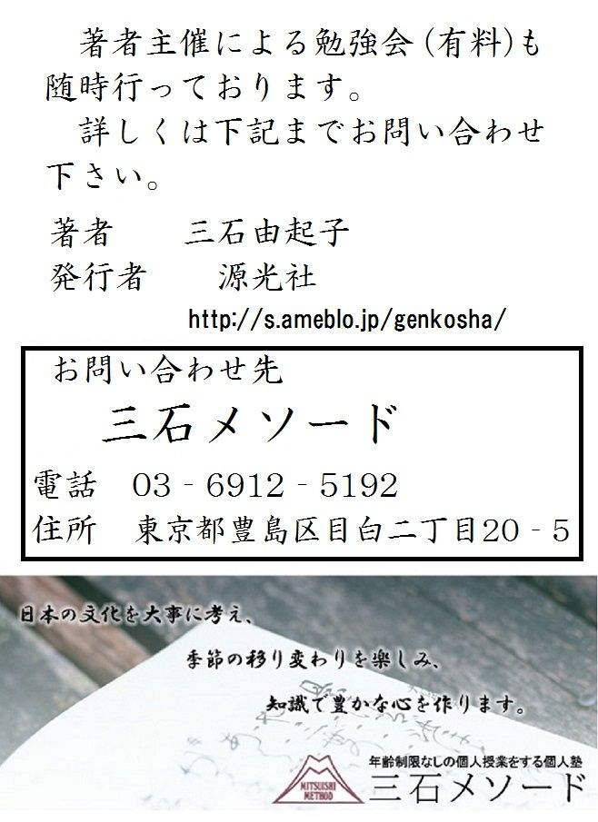

| 歎異抄～翻訳と聖書比較～ これで読破！ | |
| 三石由起子 | |
| genkosha (2014) | |
『歎異抄』は、鎌倉時代の後期に、親鸞聖人の弟子・唯円によって書かれた仏教の書物である。『歎異抄』の「歎」は「歎く」、「異」は「異端」あるいは「邪説」であり、親鸞聖人のお考えとは違うという意味で、これを「異」とした。「抄」は「優れた文章を抜き出して集めた言葉」であると、これは親鸞聖人自身も書いている。つまり、『歎異抄』とは「親鸞聖人の没後、邪説が現れたのを歎き、優れた言葉を書き抜いた書物」というほどの意味である。浄土真宗の教団内に湧きあがった異端を唯円が嘆いて書いた。
元東京学芸大学教授 安良岡康作は、中世文学の専門家であり、宗教家ではないが、その講義に添って『歎異抄』を講読しようと思う。
仏典に限らず、宗教関係の書物を一人で読むのは、非常に危険なことだという意識があった。何をどう誤読するか分からないからである。哲学書は人間の学問であるから、それに手を出すのには抵抗がなかったが、理屈を乗り越えなければならない宗教書は、誤読すれば人格を損なうだろうと感じていた。私が過去に旧約聖書の「創世記」から『聖書』を読み出したのは、信頼できる指導者「善知識」に恵まれたからである。私の通う教会は、単立教会のユニーバーサリスト・チャーチで、イエス・キリストを人間として尊敬する。さらに他人の宗教には敬意を払い、理性で納得できないイエスの「肉体の復活」やマリアの「処女懐胎」などは、少なくとも「文字通りには」認めない教会である。そこで『聖書』を通読して思うことは、一人では絶対に読めなかったろうということであり、一人で読めばその価値にも気づかず、「下らない書物」として排除したかもしれないということであった。数十年にも渡って『聖書』を読み続けて来た私の中で、徐々に芽生えて行った「信仰」は、他の宗教を受け入れないという頑ななものにはならず、かえって他の宗教への興味を増すことになった。
文学部の学生だった私は、授業で仏典を読み齧ったこともあるし、文学の解釈の必要から神道も勉強したが、それからは四十年近い歳月が流れている。今回、『歎異抄』を読み返そうと思うに至ったのは、大学生当時の安良岡先生の講義テープが手元に残っていたからである。これは我が恩師の遺品である。『歎異抄』には、すでに翻訳がいくつもあるが、安良岡康作は中世文学の学者であり、「宗教書に手を出す」という私の感じる危険を八割方、減じたのであった。
増谷文雄は『親鸞の生涯』で次のように書いている。
「『歎異抄』の文末に蓮如（本願寺第八代、１４１５～１４９９）の添え書きがかき加えられています。そこには、この「聖教」はこの宗の大事なものであるから、「宿前の機なきに於ては、左右なくこれを許すべからざるものなり」と漢文体をもってしるされています。察するところ、この『歎異抄』にしるされている、腹蔵のない、大胆きわまる、ぎりぎりのところをうち出しての親鸞の言葉は、充分に機の熟したものにして、はじめて許さるべきものであって、そうでない者がこれを読んではあぶないというのが、蓮如の心であったに違いありません。」
増谷の見解によれば、『歎異抄』は、今日の我が国の仏教文献の中で、最も読まれているものだが、そうした状況になったのは明治以後のことであるという。それ以前は大谷派では「御文」、本願寺派では「御文章」と呼ばれるものであった。
井伏鱒二の『黒い雨』には、毎日山のような死体を葬るに際して、僧侶の代わりに「白骨の御文章」を唱える男が書かれている。まことに美しい文学としても完成された文章である。参考までに引く。
白骨の御文章
それ、人間の浮生なる相をつらつら觀ずるに、おおよそ儚きものは、この世の始中終、まぼろしのごとくなる一期なり。
されば、いまだ萬歳の人身をうけたりという事を聞かず。一生すぎやすし。今に至りて誰か百年の形体を保つべきや。我や先、人や先、今日とも知らず、明日とも知らず、遅れ先立つ人は、元のしずく、末の露より繁しと言えり。
されば、朝には紅顔ありて夕には白骨となれる身なり。すでに無常の風きたりぬれば、即ち二つの眼たちまちに閉じ、一つの息ながく絶えぬれば、紅顔むなしく変じて、桃李の装いを失いぬるときは、六親眷属あつまりて嘆き悲しめども、さらにその甲斐あるべからず。
さてしもあるべき事ならねばとて、野外に送りて夜半の煙となし果てぬれば、ただ白骨のみぞ残れり。あわれといふも、なかなか疎かなり。
されば、人間の儚き事は、老少不定のさかいなれば、誰の人も早く後生の一大事を心にかけて、阿弥陀仏を深く頼み参らせて、念仏申すべきものなり。 あなかしこ、あなかしこ。
「浮生」 内容の無い人生・生活。
「始中終」 若・生年期・壮年期・老年期のこと。
「一期」 人の一生、生涯のこと。
「形体」 肉体のこと。
『歎異抄』は、これらの御文章とは全く趣きが違っている。それは再び増谷の言葉を借りれば、「宗教的信仰というものはどんなものか。宗教的体験とはどのようなことであるか。あるいは、絶対憑依の態度というのはどのようなことか。いうなれば宗教的生活のもっとも根本的な問題について、最高の範例をきずいてきたのが、親鸞の営みの本質であった」のであり、その本質に触れるのが『歎異抄』だからである。
私は『歎異抄』を読みながら何度も『聖書』を思った。そうしてイエス・キリストを人間として尊敬するように、法然や親鸞に惹かれていったのである。
『聖書』に似たような言葉があったと思い出しながら、一つ一つコンコルダンスで当たってみた。そこから発見することがいくつもあったので、蛇足とは知りながら、それを加えていく。それが名訳がいくつもある『歎異抄』を安良岡康作の解説で三石が読む理由である。さらにまた、私が足を運ぶユニバーサリスト・チャーチ同仁キリスト教会の読書会の面々が、一緒に読んで発想を助けてくれることになった。安良岡康作の中世国文学者としての視点も是非、残しておきたい。
安良岡の分類によってこれを三部に分けて読み進める。第一部は、著者の唯円が親鸞聖人の言葉そのものを十抄に渡って書き抜いた部分である。第二部は、親鸞聖人の没後、歪められ、誤伝されたことに対する唯円の批判である。第三部は安良岡康作が「後記」と名付けた後書きであり、そこには唯円の『歎異抄』執筆の動機と立場が詳しく述べられている。安良岡は、「歎異抄の歎異抄たる所以は第二部にある」と述べている。
現代語訳は、安良岡の講義に従って三石が施したが、安良岡が拘る敬語を全て翻訳すると煩雑で分かりにくいため、大幅に省略している。語釈は、安良岡の講義を三石が補った。第一部の序から『歎異抄』を講読する。なお、安良岡は全ての抄で、まず音読を勧めている。
まずは安良岡の講義から所感を引く。
「親鸞の信仰の堅固さと厳密さが、文体から我々に迫る。充分に味わう為には何度でも音読して読み返す事が必要であろうと思う。
私は太平洋戦争の間に六年間に渡ってフィリピン、ジャワ、セレベスなどに行った。出征にあたって、後で義兄となった方から文庫本の『歎異抄』を頂いたが、ジャワのセラバヤでは他に読む本がなかったので、その『歎異抄』をおそらく百回や二百回は読んだ。その結果、『歎異抄』の一語一句を暗記し、『歎異抄』は暗記するまで読むべき本だと深く感じるようになった。いつだったか子供達の前で、『歎異抄』を二百回くらい読んだが、そのくらい読まなければ古典というものは自分のものにはならないという話をしたら、音楽をやっている二番目の娘に、たった二百回でいいのかと言われてぎゃふんと参った。
その娘は当時、プロコフィエフのバイオリン協奏曲を演奏する為に、二月も三月も、あるいは四月くらい同じ曲を弾き重ねていた。その娘にとっては二百回などは問題にならないようであった。それからは、この娘には反復熟読が大事だとは言わないようになった。
しかし『歎異抄』こそは反復熟読によって暗記するまで読む価値がある。暗記するまで読めば『歎異抄』の文体の力強さと充実した表現に打たれる。私はそれを固く信じて皆にもお勧めする次第である。」
竊迴愚案 粗勘古今 歎異先師口伝之真信 思有後学相続之疑惑
幸不依有縁知識者 争得入易行一門哉 全以自見之覚語 莫乱他力之宗旨
仍故親鸞聖人御物語之趣 所留耳底 聊註之 偏為散同心行者之不審也。云々
ひそかに愚案を迴らしてほぼ古今を勘ふるに、先師の口伝の真信に異なることを歎き、後学相続の疑惑有ることを思ふに、幸ひに有縁の知識によらずんば、いかでか易行の一門に入ることを得んや。まつたく自見の覚語をもつて他力の宗旨を乱ることなかれ。
よつて故親鸞聖人の御物語の趣、耳の底に留むるところいささかこれをしるす。ひとへに同心行者の不審を散ぜんがためなりと云々。
私見を巡らせて親鸞聖人の御在世の昔と、現在とを引き比べて調べてみると、親鸞聖人から直接に聞いた教え、正しい信心とは異なる様々な邪説が流れているのを嘆かわしく思う。これでは、将来仏道を学ぶ人々が、受け継ぐべき教えに対して疑念を生じるのではないかと危惧する。
運に恵まれ、前世からの因縁で、正しく仏の道に導き入れてくれる徳の高い師匠に頼らなければ、どうして「易行の一門」南無阿弥陀仏を唱えるだけの簡単な行ないの道に入れようか。自分だけの考えで色々な説を立て、悟ったような言葉で、阿弥陀如来の絶大なる根本の教えの力を乱してはならない。
そこで亡き親鸞聖人がお話しされたその趣旨、私の耳の底に長い間留めておいたものを少しばかり書き付けることにする。これは、ひたすら同じ志を持って念仏を行ずる人の疑問を解消する為である。
○語釈
「竊迴愚案」竊かに愚案を迴らして
「竊かに」内々に、私的に。（「こっそりと」ではない。）
「粗勘古今」粗古今を勘ふるに
「粗」およそ、おおかた。「古今」親鸞聖人が御在世の昔と、歎異抄の著者がこの書物を書いている現在。
「歎異先師口伝之真信」先師の口伝の真信に異なることを歎き
「口伝」直接に口から耳で聞いた教え。「真信」正しい信心。
「思有後学相続之疑惑」後学相続の疑惑有ることを思ふに
「後学」将来仏道を学ぼうとする人々。「相続」教えを受け継いで行く事。
「幸不依有縁知識者」幸に有縁の知識に依らずば
「有縁の知識」前世からの因縁のある知識。善知識（＝正しく自分を導く師匠）。
「争得入易行一門哉」争でか易行の一門に入ることを得んや
「易行」難行に対する易行。簡単な易しい行ない。南無阿弥陀仏という念仏を唱える行為。
「全以自見之覚語」全く自見の覚語を以て
「自見」自分の考えで立てる説。「覚語」悟った言葉。
「莫乱他力之宗旨」他力の宗旨を乱ること莫れ
「他力」自力に対する他力。阿弥陀如来の力。
「仍故親鸞聖人御物語之趣」仍て、故親鸞聖人御物語の趣
「所留耳底」耳の底に留むる所
「聊註之」聊之を註す
「偏為散同心行者之不審也」偏に同心行者の不審を散ぜんが為なり
これは『聖書』におけるパウロの「ガラテア書」である。「ガラテア書」は、イエス・キリストの在世中の教えとは違った教義に流されて行くガラテア地方の教会に宛てたパウロの書簡である。『歎異抄』の主旨は、まさしく仏教版の「ガラテア書」なのである。「ガラテア書」第一章の六節から九節までを引く。
「あなた方がこんなにも早く、あなた方をキリストの恵みの内へお招きになった方から離れて、違った福音に落ちて行く事が、私には不思議でならない。それは福音というべきものではなく、ただある種の人々があなた方をかき乱し、キリストの福音を曲げようとしているだけのことである。しかし、たとい私達であろうと、天からの御使いであろうと、私達が宣べ伝えた福音に反する事をあなたがたに宣べ伝えるなら、その人は呪わるべきである。私達が前に言っておいたように、今わたしは重ねて言う。もしある人が、あなた方の受け入れた福音に反することを宣べ伝えているなら、その人は呪わるべきである。」
安良岡康作の解説を引く。
「世間の『歎異抄』では「覚語」の「語」が「悟」として出回っている。古い写本は「語」であり、「悟」ではない。唯円は、「悟ったような自分の言葉」で「他力の宗旨を乱るること莫れ」と書いたのであり、「悟ったところ、悟り」を意味したのではないと考える。「覚語」という言葉があるかないかは知らないが、「覚語」という語で古い時代の人々は皆、『歎異抄』を理解していた。それが写本に表われた事実である。十七世紀の初めに出来た日葡辞書によれば「自見自得する」という言葉を「自分で見て自ら了解する」と説明しており、「自見学問」を「師匠なしで自分で読んで学習する事」と解している。その二つの例からしても「自見の覚語」は「師匠もなく、自分一人で悟ったように使う言葉」であると解釈したい。
唯円は仏教書らしく、この序を漢文で書いた。この序の目的を達するために第一章から第十章までの第一部で、色々な邪説、「先師口伝の真信に異なること」の判断基準を明らかにするのである。唯円はそれを、親鸞から直接聞いた御物語に求めた。おそらく唯円は、親鸞の没後、その御物語を何度も繰り返し心の中で洗練し、推敲して、書き留めたのだと考える。この序は漢文として純粋なものではない。例えば「故親鸞聖人御物語之趣」とあるが、「御物語」などという言葉は漢文にはない。この文章は日本式漢文、非常に和の匂いが強い漢文である。漢文で書いた理由は、敬慕して止まぬ亡き師匠の言葉を書き記すのに格調を与え、改まった気持ちを示すためで、またこの程度の漢文ならば唯円の予想読者達にも理解され得るものであった。
親鸞聖人は１１７３年に京都東南の郊外、日野で生まれた。父は下級貴族の日野有範である。親鸞は九歳の時、天台宗の前大僧正・慈円の許で出家し、範宴と名乗って比叡山に住む。これは、平清盛が熱病で死んだ年であり、平家が凋落に向かう最初の年である。範宴は、横川の常行三昧堂の堂僧（＝雑事を務める下級僧）になって、仏教を中心に広く学問をしたと推定されている。だが、その横川の生活は、若き範宴にとって決して満足出来るものではなかった。悩みの果てに１２０１年、二十九歳で比叡山を下り、当時東山の吉水で浄土の教えを説いていた法然上人の門下に入る。範宴の名を善信房綽空と改めて、法然上人から浄土教を学んだ。その法然門下に入ってから結婚したという事実も僅かな資料から知られている。当時、法然上人は六十九歳であり、高徳の善知識であった。そのお顔を見ただけで、あるいはそのお声を聞いただけで惹き付けられ、上人の許で大勢の人々が念仏行を実行したという記録がある。
この浄土教は、それまでの仏教とは非常に違い、むしろそれまでの仏教を否定する方向に発展していたので批判が高まり、１２０７年、親鸞が三十五歳の時に徹底的な弾圧を蒙る。法然上人は土佐国に流され、弟子の何人かが首を吊られた。親鸞もまた、師匠と別れて越後国府、現在の新潟県上越市郊外に流罪となった。厳しい運命にさらされるこの時期までが、親鸞の生涯の第一期と考えられる。だが、親鸞は流罪地で恵信尼と結婚して子供をもうけた。名前を愚禿親鸞（頭を剃った愚か者の親鸞）と改めて新しい人生を始めたのである。１２１１年には罪を許されたが、そのまま越後に留まるうちに、師匠の法然上人は、翌年の１２１２年に八十歳で亡くなった。親鸞は、１２１４年、四十二歳で妻子を伴って常陸国に移住する。そこで大勢の弟子達を教化し、最大の著書『教行信証』の最初の原稿を完成したのであった。親鸞が越後に流されたこと、あるいは常陸国に住んだことは、その宗教観に大きな影響を与えた。都の中で法然上人の宗教だけを考えていた親鸞は、初めて農民や狩人、商人などの地方の人々の間に入って行ったのである。それらの人々を教化しながら、浄土の教えを純化していったのではないかと想像される。
１２３５年、大体六十三歳で常陸国を出、東海道を通って京都へ帰った。京では十数部にも渡る沢山の著述を残しただけでなく、常陸国に残した大勢の弟子達の質問に答える多くの手紙を書き送った。その手紙類も何冊かの書物になって残されている。親鸞は京にありながらも常陸の弟子達との関係を維持し、その弟子達から仕送りを受けて著述に精進したのではないかと私は考えている。だが、京での生活は、必ずしも幸福ではなかった。妻の恵信尼は越後国へ下って一家は離散した。長男の善鸞は関東で親鸞の弟子達を混乱させている。父・親鸞から秘密の教えを受けたと言い触らしたのであった。親鸞は建長八年（１２５６年）八十四歳で善鸞を義絶し、親子の縁を切った。そういう悩みの中で、ただ一筋に南無阿弥陀仏と唱える念仏の教えを信じたのである。弥陀の本願を仰ぎ、宗教家としての信仰をますます深めたのだろう。
１２６２年十一月二十八日、九十歳で京都において世を去るまで、親鸞の生涯は大きく三期に分けられる。第一期は法然上人の許で浄土の教えを学び、越後に流罪となるまでの三十五年間である。第二期は赦免を受けて越後国から常陸国に遷り、さらに京都に帰るまでの二十四年間である。都から遠い地方の農民達に接し、彼らを導いた事で、その信仰は純化され洗練されたであろう。第三期は京都に帰って以後、世を去るまでである。悩みの中に弥陀の本願を信じ、念仏による救いを一貫して説いて飽きなかった。宗教家としての親鸞の強い信仰が伺われる。
この親鸞と弟子・唯円の年齢を推定すると、およそ五十歳の年齢差がある。唯円は晩年の親鸞、八十歳から九十歳の親鸞に親しく師事した。唯円の年齢はおよそ三十歳から四十歳だったと想像している。『歎異抄』が書かれたのは親鸞の没後、およそ二十六年を経た１２８８年、唯円が六十七歳当時の頃であったろう。没後、二十六年も経てから、親鸞の直弟子だという自覚が唯円に『歎異抄』を書かせた。そういう書物が『歎異抄』なのである。」
一 弥陀の誓願不思議にたすけられまひらせて徃生をばとぐるなりと信じて、念仏まふさんとおもひたつこゝろのおこるとき、すなはち攝取不捨の利益にあづけしめたまふなり。弥陀の本願には老少善悪のひとをえらばれず、たゞ信心を要とすとしるべし。そのゆへは罪悪深重煩惱熾盛の衆生をたすけんがための願にてまします。しかれば、本願を信ぜんには、他の善も要にあらず、念仏にまさるべき善なきゆへに。悪をもおそるべからず、弥陀の本願をさまたぐるほどの悪なきゆへにと云ゝ。
阿弥陀如来の誓願の不思議にお助けいただいて、極楽浄土に往生するのだと信じ、南無阿弥陀仏と念仏申そうと思い立つ。その時こそがすでに、阿弥陀如来のご利益に与らせていただいている。そのご利益とは、阿弥陀如来の攝取不捨、人間を収め取って決してお捨てにならないという事実である。
弥陀の本願は、人間を老少や善悪で区別なさらずにお救いになる。だから弥陀への信心がなくてはならぬと知れ。弥陀の本願は、罪悪の深重な者や、煩悩が燃え盛る人間を助けるための願だからである。
そうである以上、本願を信ずるからには、他の善事を行なう必要は全くない。念仏に勝る善はない。我が身の悪行を思い、救われないのではないかと恐れてはならない。何故なら、弥陀の本願を妨害できるような悪はないからである。
○語釈
「弥陀の誓願不思議にたすけられまひらせて」
「弥陀」阿弥陀如来。「弥陀の誓願」『大無量寿経』に詳しい。阿弥陀如来がまだ修行者・法蔵比丘だった時、四十八の願を立てて一切衆生を救おうとなさった。そこには、もしこの願いが成就しなければ仏になるまいという誓いがあったので、その四十八願を誓願という。「不思議」人知を越えたもの。弥陀の誓願の不思議な力。
「徃生をばとぐるなりと信じて、」
「往生」の「往」は「極楽浄土に行く事」。「生」は「極楽で新たな永遠の生命を獲得する事」。
「すなはち攝取不捨の利益にあづけしめたまふなり。」
「すなはち」即刻に、即座に。「摂取」収め取る。「不捨」捨てない事。「利益」仏の力で授かる幸福。「あづく」加わらせる、参加させる。
「弥陀の本願には、老少善悪のひとをえらばれず、」
「弥陀の本願」四十八願の第十八番。弥陀の誓願中、最も大事なもの。「えらばれず」区別なさらない。
安良岡康作の講義を引く。
「『歎異抄』は、第一抄から第十八抄までは全て「一、何々」という書き方であり、「一つ書き」と呼ばれる。親鸞聖人の信じる弥陀の本願は、実際の人間、特に「罪悪深重」「煩惱熾盛」の衆生を救うためのものであった。普通の生活の中で、我々はとかく自分の罪悪や人間の煩悩を忘れるが、親鸞聖人はあくまで深く厳しく自分を見つめた。そうして、自分が「罪悪深重の人」であり、「煩悩熾盛の人」だと理解した。親鸞聖人の信仰は、自分の体験に基づいて人間の存在を根本から考えることから生まれている。我が身を「罪悪深重煩惱熾盛の衆生」と観じたことから、そういう者を特に選んで弥陀の本願が差し向けられると信じたのである。それが親鸞の教えの核心であった。換言すれば、自分を「罪悪深重煩惱熾盛」と考えない者には、この第一章は縁がない。自己を深く見つめて、自分は罪悪深重煩惱熾盛の人間であり、それがあらゆる人間の存在の根本条件だと自覚した者に、弥陀の誓願の不思議が力を持って迫るのである。この第一抄こそが『歎異抄』の核心である。
中心の主題は信心である。「弥陀の誓願不思議にたすけられまひらせて徃生をばとぐるなりと「信じて」」、「弥陀の本願には、老少善悪のひとをえらばれず、たゞ「信心」を要とすとしるべし」、「しかれば本願を「信ぜん」には、他の善も要にあらず」、「とぐるなりと「信じ」て」、「たゞ「信心」を要とすとしるべし」、「しかれば本願を「信ぜん」には」と「信」が何度も使われる。
第一抄の主題は、信心とは何かという親鸞の信念を述べたものである。私は日本文学の研究者なので、その立場から第一抄の表現を考えると、一語一句が充実していて無駄が無い。文章のどこにも弛みや無駄やいい加減さがない。実に緊張し、充実した文体である。全てが信念から発する言葉なので、正直に確実に表現しようという意志がある。小説や随筆や劇とは違った信念の文学の姿が、この第一抄によく表われている。国語の和文体と漢文体とが上手く調和し統一された和漢混交文体であり、この文体でなければ表現出来ない強さと深さが感じられる。漢語の持つ強い響きと、和語の持つ柔らかな味が調和して書かれており、これは、この時代に発達した新しい文体であった。第一抄は、和漢混交文体によって実に的確に核心が述べられた。
第一抄は三つの段落から成る。第一の段落は、「弥陀の誓願不思議にたすけられまひらせて徃生をばとぐるなりと信じて、念仏まふさんとおもひたつこゝろのおこるとき、すなはち攝取不捨の利益にあづけしめたまふなり。」で、信心と念仏との関わりを問題にする。信心が自ずから現れたものが念仏であり、念仏を深く裏付けるものが信心であるという関係が、「信じて、念仏まふさんとおもひたつこゝろのおこるとき」と表現された。ここで捉えられた念仏は発生的、あるいは根源的である。
第二段落は、「弥陀の本願には、老少善悪のひとをえらばれず、たゞ信心を要とすとしるべし。そのゆへは、罪悪深重煩惱熾盛の衆生をたすけんがための願にてまします。」で、信心を強調すると共に、弥陀の本願が罪悪深重煩惱熾盛の衆生を救わんがための願だと銘記される。
第三段落は、第一段落と第二段落を受けて、「しかれば本願を信ぜんには、他の善も要にあらず、念仏にまさるべき善なきゆへに。悪をもおそるべからず、弥陀の本願をさまたぐるほどの悪なきゆへにと云ゝ。」と、親鸞上人が断言するのである。
本願を信じるには他の善は必要ない。写経をしたり、寺を造ったり、鳥や魚を買い取って放す放生会、あるいは僧に布施を差し出すような善は必要ないと言うのである。本願を信ずる信心は自ずから念仏に表れる。「念仏にまさるべき善なきゆへに」必要ないのである。さらに発展して「悪をもおそるべからず」なのである。煩悩に翻弄され色々な罪悪を犯したがるのが人間である。だが、それは極楽往生の障りにはならないと、親鸞は懸念を一掃する。「弥陀の本願をさまたぐるほどの悪なきゆへに」なのである。
最期の「弥陀の本願をさまたぐるほどの悪なきゆへにと云ゝ」の「云ゝ」は親鸞の談話がまだ続くことを意味したものである。この「云ゝ」は江戸時代では「うんぬん」と読むが、中世の書物では「しかしか」と読むのが慣例である。
唯円は、親鸞を慕ってはるばる常陸国（＝茨城県）から京都まで上って弟子となった。現在、茨城県水戸市の郊外にある河和田には、報仏寺という小さなお寺があって、その開祖が唯円だと言われる。」
攝取不捨は、宗教の根本である。信仰心はそこにしか生まれない。人間の努力に見合うだけの「利益」であれば、神仏は不要である。
「創世記」第二十八章で、好き放題を重ねたヤコブが夢を見る。その時、神はヤコブに向けてこう言われた。
「わたしはあなたと共にいて、あなたがどこへ行くにもあなたを守り、あなたをこの地に連れ帰るであろう。わたしはあなたを決して捨てず、あなたに語った事を行なうであろう。」（十五節）
「あなたの神、主はいつくしみの深い神であるから、あなたを捨てず、あなたを滅ぼさず、またあなたの先祖に誓った契約を忘れられないであろう。」（「申命記」第四章三十一節）
『聖書』における神の「旧約」は、「摂取不捨」であった。
「そして、私に来る者を決して拒みはしない。私が天から下って来たのは、自分の心のままを行なうためではなく、私を遣わされた方の御心を行なうためである。私を遣わされた方の御心は、わたしに与えて下さった者を、私がひとりも失わずに終わりの日に蘇らせることである。」（新約「ヨハネ伝」第六章三十七節から四十節）
「主はわたしは、決してあなたを離れず、あなたを捨てないと言われた。」（「ヘブル書」第十三章五節）
と、同様に「摂取不捨」を述べている。
一 をのをの十余ヶ国のさかひをこえて、身命をかへりみずしてたづねきたらしめたまふ御こころざし、ひとへに往生極楽のみちをとひきかんがためなり。しかるに、念仏よりほかに往生のみちをも存知し、また法文等をもしりたるらんとこころにくくおぼしめしておはしましてはんべらんは、おほきなるあやまりなり。もししからば、南都北嶺にもゆゆしき学生たち、おほく座せられてさふらふなれば、かのひとにもあひたてまつりて、往生の要よくよくきかるべきなり。親鸞にをきては、「ただ念仏して弥陀にたすけられまひらすべし」と、よきひとのおほせをかぶりて信ずるほかに、別の子細なきなり。念仏はまことに浄土にむまるるたねにてやはんべるらん。また地獄におつべき業にてやはんべるらん。総じてもて存知せざるなり。たとひ法然聖人にすかされまひらせて、念仏して地獄におちたりとも、さらに後悔すべからずさふらふ。そのゆへは、自余の行もはげみて仏になるべかりける身が、念仏をまうして地獄にもおちてさふらはばこそ、すかされたてまつりてといふ後悔もさふらはめ。いづれの行もをよびがたき身なれば、とても地獄は一定すみかぞかし。弥陀の本願まことにおはしまさば釈尊の説教虚言なるべからず。仏説まことにおはしまさば善導の御釈、虚言したまふべからず。善導の御釈まことならば法然のおほせそらごとならんや。法然のおほせまことならば親鸞がまうすむねまたもてむなしかるべからずさふらふ歟。詮ずるところ、愚身の信心にをきてはかくのごとし。このうへは、念仏をとりて信じたてまつらんとも、またすてんとも、面々の御はからひなりと云々。
皆さん方が十ヶ国以上の国境を越えて、訪ねておいでになった目的は、一心に往生極楽の方法を私に尋ね訊くためである。だが、私が念仏以外に往生の手立てを知っているとか、仏法を説いた文章や書物で学んでいるであろうとお思いならば、それは大きなあやまりです。そのように思召すならば、奈良には東大寺や興福寺の学僧があり、比叡山には伝教大師以来の学問を受け継いで精進する多くの学者が大勢おいでになりますから、それらの人々にお会い申し上げて、往生の肝心要な点をよくよくお聞きになるのが良いのです。この親鸞においては、「ひたすら念仏して弥陀にお助けを蒙るのが良い」と、善知識（＝非常に徳の高い指導者）のお言葉を我が身に蒙って信ずる以外、特別なものはないのです。念仏が本当に極楽浄土に往生する原因となるものなのか、あるいは地獄に落ちる原因となる行ないなのかは、全くもって私には分かりません。それでも、たとえ法然上人に騙されて南無阿弥陀仏を唱えて地獄に落ちても、決して後悔は致しません。念仏以外の善行に励んで仏となる運命の私であれば、念仏だけをしたために地獄に落ちるのは、騙されたと後悔することもございましょうが、どんな修行もできぬ我が身ですから、地獄は確かに定まった私のすみかなのですぞ。『大無量寿経』に書かれた四十八の誓願中、第十八願の弥陀の本願は、
「設我得仏 十方衆生 至心信楽 欲生我国 乃至十念 若不生者 不取正覚 唯除五逆 誹謗正法
（たとい我、仏を得たらむに、十方の衆生、至心に信楽して、我が国に生まれんと欲し、乃至十念せんに、若し生まれずんば、正覚を取らず。唯し五逆と正法を誹謗するとを除く）」
であり、「たとえ私が仏となる事が出来ても、あらゆる衆生が真心から信じ願って、私の国・極楽浄土に生まれようと思い、一度もしくは十度の念仏を唱えてもそれが叶わぬのであれば、私も悟りを開いて仏にはなるまい。ただし、修行の五逆罪と、正しい教えを誹謗する者はこの衆生には含まない」という意味であるが、そういう弥陀の本願がまことなら、釈迦の説教が嘘である筈はない。釈尊のお言葉がまことであるならば、善導の御解釈が偽りのはずがない。善導の御解釈がまことであるなら、法然の仰せがどうしてそらごとでありましょうか。そうして法然上人のお言葉が真実なら、この親鸞が申す趣旨もまた、根拠のない事である筈がなかろう。つまるところ、私の信心は以上述べた通りであります。この上は、念仏を信じようとも、また捨てようとも、各々方の御随意です。各々方のご判断次第です。「と云々」。
○語釈
「をのをの十余ヶ国のさかひをこえて、」
「をのをの」おのおの方、皆さん方（代名詞）。「十余ヶ国のさかひ」常陸国を出て、常陸・下総・武蔵・相模・伊豆・駿河・遠江・三河・尾張・伊勢・近江・山城の十二ヶ国。現在の茨城県・千葉県・東京都・神奈川県・静岡県・愛知県・三重県・滋賀県・京都府まで、一都一府七県に渡る。常陸国から京都までは十日間を要した。
「ひとへに往生極楽のみちをとひきかんがためなり。」
「みち」方法、手段。
「こころにくくおぼしめしておはしましてはんべらんは、」
「こころにくし」相手を奥ゆかしく感じる。
「もししからば、南都北嶺にも、ゆゆしき学生たち、おほく座せられてさふらふなれば、」
「南都」奈良。「北嶺」比叡山。
「かのひとにもあひたてまつりて、往生の要、よくよくきかるべきなり。」
「往生の要」往生のかなめ、往生の大事な点。
「よきひとのおほせをかぶりて、信ずるほかに別の子細なきなり。」
「よきひと」優れた人、立派な人。「おほせ」お言葉。
「たとひ法然聖人にすかされまひらせて、念仏して地獄におちたりとも、さらに後悔すべからずさふらふ。」
「すかす」騙す、言いくるめて騙す。
「そのゆへは、自余の行もはげみて仏になるべかりける身が、」
「自余の行」念仏以外の修行。
「弥陀の本願まことにおはしまさば、釈尊の説教、虚言なるべからず。」
「弥陀の本願」『大無量寿経』に書かれた四十八の誓願中、第十八願。
「仏説まことにおはしまさば、善導の御釈、虚言したまふべからず。」
「善導の御釈」善導（中国の唐の高僧で浄土教を大成した人）の書いた『観無量寿経』の解釈本。『観経疎』。日本の浄土教、殊に法然上人に大きな感化、影響を及ぼした。
「詮ずるところ、愚身の信心にをきてはかくのごとし。」
「詮ずるところ」つまるところ、所詮、結局の所。「愚身」私の謙遜語。
安良岡の講義を引く。
「親鸞を訪ねて来た弟子達を前にした親鸞が懇切に自分の信ずるところを述べる。第一抄よりもきわめて具体的で現実的な親鸞の声である。大正六年に刊行された倉田百三の『出家とその弟子』の第二幕には、常陸あるいは越後から親鸞を訪ねて来た東国の六人への話としてこの第二抄が生かされている。『出家とその弟子』は親鸞とその弟子・唯円を主人公とする創作劇で、大正時代のベストセラーとなった当時の傑作である。だが、その『出家とその弟子』に現われる親鸞の言葉と、この『歎異抄』を比較すると、『歎異抄』の方がずっと簡潔で充実しており、親鸞の信念が言葉の端々にまで徹底的に表れているのが感じられる。全く無駄のない文章である。例えば初めの方では「なり」で文を結び、聞き手に核心を毅然として述べる態度が文体に表われている。「とひきかんがためなり。」「おほきなるあやまりなり。」「よくよくきかるべきなり。」「別の子細なきなり。」それが「存知せざるなり。」「面々の御はからひなり。」にまで及ぶのである。また続く文には「さふらふ」が何度も使われて、はるばるやって来た関東の人達への丁寧さと親しみが充分に表われている。
「さらに後悔すべからずさふらふ。」「地獄にもおちてさふらはばこそ」「後悔もさふらはめ。」などであるが、第二抄が大勢の人の心を打つのは、親鸞の心の吐露が素直に伝わるからであろう。「念仏はまことに浄土にむまるるたねにてやはんべるらん。また、地獄におつべき業にてやはんべるらん。総じてもて存知せざるなり。たとひ法然聖人にすかされまひらせて、念仏して地獄におちたりとも、さらに後悔すべからずさふらふ。」は、非常に真摯な告白である。その正直さと大胆さが聞き手の心を打つ。同時に現在の読者の心をも打つのである。親鸞の半生を突き詰めた自覚と、法然上人の仰せに活路を見出した深刻な体験が、「いづれの行もをよびがたき身なれば、とても地獄は一定すみかぞかし。」と生命ある文章にしている。親鸞の言葉を声に出して読み、親鸞上人の深い宗教的な自覚を味わってもらいたい。」
倉田百三の『出家とその弟子』は、かつて青少年の必読書とされたものである。昭和四十年代に青少年だった私も、当然のように読んだのであった。これは『歎異抄』の教えを核にして、親鸞の息子・善鸞、弟子・唯円のそれぞれの葛藤を戯曲化したものである。父に背いて善鸞は遊女に溺れる。父子の和解を謀る唯円もまた遊女との恋に陥るが、こちらは結婚してともに仏道に励む。親鸞の死に臨んで、唯円は善鸞に父親を安心させるため、仏道に戻ったと言うように諭すが、善鸞は死の床にある父親に嘘はつけない。親鸞はそれを見て、「それでよいのじゃ。みな助かっているのじゃ。」と言って死んで行くのである。
念仏さえすれば、誰もが救われるのである。
「ローマ書」の十章十三節には
「なぜなら、主の御名を求める者は、すべて救われるとあるからである。」
とあり、これは他力本願の勧めである。
「御霊もまた同じように、弱い私達を助けて下さる。なぜなら、私達はどう祈ったらよいかわからないが、御霊自ら、言葉にあらわせない切なるうめきを持って、私達のためにとりなして下さるからである。」（第八章二十六節）
「なぜなら、人は心に信じて義とされ、口で告白して救われるからである。」（第十章十節）
一 善人なほもつて往生をとぐ、いはんや悪人をや。しかるを世のひとつねにいはく、「悪人なほ往生す、いかにいはんや善人をや」。この条一旦そのいはれあるに似たれども、本願他力の意趣にそむけり。そのゆゑは、自力作善のひとは、ひとへに他力をたのむこころかけたるあひだ、弥陀の本願にあらず。しかれども、自力のこころをひるがへして、他力をたのみたてまつれば、真実報土の往生をとぐるなり。煩悩具足のわれらは、いづれの行にても生死をはなるることあるべからざるを、あはれみたまひて願をおこしたまふ本意、悪人成仏のためなれば、他力をたのみたてまつる悪人、もつとも往生の正因なり。よつて善人だにこそ往生すれ、まして悪人はと、仰せ候ひき。
善人でさえ往生を遂げる。まして悪人は、なおさら往生を遂げるのである。だが、世の人は「悪人でさえ往生するのだから善人はなおさらだ」という。これは一応は道理が通っているようだが、弥陀の本願である他力の本旨に反している。自力で極楽浄土へ行くための善行を積む人には、一途に弥陀の力を頼って信じる心が欠けていて、これは弥陀の本願に外れているのである。自力作善の意志をすっかり捨てて、ただ弥陀のお力をお頼り申し上げれば、その真実の報い、極楽浄土への往生を遂げる事が出来る。あらゆる煩悩を身に付けた私達は、どのような行ない、どのような修行によっても生死の迷いから離脱して仏になる事はできない。それをお憐れみになって弥陀が誓願を起こされたのは、悪人成仏のためであり、悪人が仏になるためである。弥陀のお力をお頼み申し上げる悪人こそが、往生の本当の原因をなす。つまり、そういう意味で親鸞上人は「善人でさえも往生できるのだ。まして悪人は」と、仰せになった。
○語釈
「善人なほもつて往生をとぐ、いはんや悪人をや。」
漢文の典型的な文型で、「ＡすらなおＢ、況んやＣをや」であり、「ＡでさえもＢである。ましてＣはなおさらＢである」と訳して当たる。
「この条、一旦そのいはれあるに似たれども、本願他力の意趣にそむけり。」
「本願他力」弥陀の本願である他力本願。
「そのゆゑは、自力作善のひとは、ひとへに他力をたのむこころかけたるあひだ、弥陀の本願にあらず。」
「自力作善」自分の力で極楽浄土へ行くための善行を積むこと。
「しかれども、自力のこころをひるがへして、他力をたのみたてまつれば、真実報土の往生をとぐるなり。」
「真実報土」弥陀の本願の真実の報いとして成り立つ極楽浄土。
「煩悩具足のわれらは、いづれの行にても生死をはなるることあるべからざるを、あはれみたまひて」
「煩悩」心の穢れ。「具足」完全に身に付けている状態。「生死」生まれ変わり死に変わる世界。
「願をおこしたまふ本意、悪人成仏のためなれば、他力をたのみたてまつる悪人、もつとも往生の正因なり。」
「悪人」煩悩具足の人。罪悪深重煩惱熾盛の衆生。他力を頼む人。「正因」仏語。物事の直接的な原因（＝縁因の反意語）。
安良岡の講義を引く。
「「善人なほもつて往生をとぐ、いはんや悪人をや。」は、あまりにも有名で、その読みは「善人なほもて」と膾炙されているが、「総じてもって」「またもって」と同様、「なほ」は副詞であり、副詞の下に付くのは「もって」である。ここは「善人なほもて」と読むべきではなく、「善人なほもって」と読まなければならない。副詞の下に付くのは「もて」ではなく「もって」であるのが日本の中世文学の語法であるから、「なほもって」とあらたむべき事を私はここにまずは提唱したい。
親鸞がいかにそれまでの仏教の考え方や世間の常識を覆す思想を持っていたかが思い知らされる箇所である。革新的な、あるいは革命的とも言って良い思想であった。「煩悩具足のわれらは、いづれの行にても生死をはなるることあるべからざるを」は、「念仏はまことに浄土にむまるるたねにてやはんべるらん。また、地獄におつべき業にてやはんべるらん。総じてもて存知せざるなり。」と同様の親鸞の告白である。「煩悩具足のわれらは、いづれの行にても生死をはなるることあるべからざるを」との見極めが、「他力をたのみたてまつる悪人、もつとも往生の正因なり。」という信念を生むに至ったのだろう。
最初に「善人なほもつて往生をとぐ、いはんや悪人をや。」と言い、最後でもう一度聞き手に確かめる。結びでは「まして悪人は」までで止めて「悪人をや」とは書かなかった余韻が素晴らしい。「煩悩具足のわれらは」と自分を見つめたことが親鸞上人の宗教家としての生命であった。親鸞は自分を悪人として捉え、その悪人に働きかける弥陀の本願、他力を、悪人であるが故に信じるのである。深い信念からほとばしり出た言葉であった。」
これはマタイ伝九章である。
「丈夫な人には医者はいらない。いるのは病人である。私が好むのは、憐れみであって、生贄ではないとはどういう意味か、学んできなさい。私が来たのは、義人を招くためではなく、罪人を招くためである。」（十二節、十三節）
これは徴税人や罪人と食事をしていたイエスに向かって、パリサイ人が非難した時のイエスの言葉であった。
当時の徴税人は、ローマの手先となって同朋から徴税したばかりでなく、私腹さえ肥やしていた。この徴税人がマタイ伝の著者・マタイである。パリサイ人はモーセの律法に従う「正しい人」であった。「人より上等な人間」だと自負もしていたし、天国に迎え入れられるはずだと思ってもいたろう。その思いこそが「縁なき衆生は度し難し（＝仏に縁のない人間は救い難い）」という結果になっていることを悟らなかった。徴税人のマタイは、イエスに「私に従って来なさい。」と言われて「彼は立ち上がってイエスに従った」（九節）のである。それは、自分が「罪人」だと知っていたためだと思われる。たとえ人から軽蔑されても、私腹を肥やして贅沢してやろうと思っていた男であったが、神の前に正しくないことをも知っていたのであった。軽蔑と憎しみの視線だけを浴びて来た男が、「善人なほもつて往生をとぐ、いはんや悪人をや。」と、言われて、目覚めたのだった。
（なお、最近の研究では、福音書の著者マタイは、徴税人のマタイとは別人だったかもしれないという見解があるのを付け加えておく。）
一 慈悲に聖道・浄土のかはりめあり。聖道の慈悲といふは、ものをあはれみ、かなしみ、はぐくむなり。しかれども、おもふがごとくたすけとぐること、きはめてありがたし。浄土の慈悲といふは、念仏していそぎ仏になりて、大慈大悲心をもて、おもふがごとく衆生を利益するをいふべきなり。今生にいかにいとをし不便とおもふとも、存知のごとくたすけがたければ、この慈悲始終なし。しかれば念仏まうすのみぞ、すえとをりたる大慈悲心にてさふらふべきと云々。
慈悲には聖道門と浄土門で違いがある。聖道門の慈悲は、ものを憐れんで、可愛がり、育てることであるが、思い通りに最後まで助け抜く事は滅多にできない。だが、浄土門の慈悲は、念仏を唱えて、すみやかに成仏し、広大無辺な慈悲心で思いのままに衆生を益するのである。この世でどんなに相手を愛おしく思い、不便だと思っても、思い通りに助ける事は難しいので、聖道門の慈悲は、結末がなく、中途半端なのである。こういう次第だから、念仏を申すだけが、徹底した大きな慈悲心というものなのだ。
○語釈
「慈悲に聖道・浄土のかはりめあり。」
浄土教では仏教を聖道門と浄土門に分ける。「聖道」精進し、自力で悟りを開く道。「浄土」阿弥陀仏の誓願、他力本願によって極楽往生する。「かはりめ」相違点。
「聖道の慈悲といふは、ものをあはれみ、かなしみ、はぐくむなり。」
「もの」人。「あはれむ」同情する。「かなしむ」可愛がる。「はぐくむ」親切に労わり慈しむ。養い育てる。
「浄土の慈悲といふは、念仏して、いそぎ仏になりて、大慈大悲心をもて、おもふがごとく衆生を利益するをいふべきなり。」
「大慈大悲心」仏の広大無辺な大きな慈悲心。
「今生に、いかにいとをし不便とおもふとも、存知のごとくたすけがたければ、この慈悲、始終なし。」
「いとをし」愛おしい。「不便」気の毒。「この慈悲」聖道門の慈悲。「始終なし。」事の終わりがない、結末がない。中途半端である。
「しかれば、念仏まうすのみぞ、すえとをりたる大慈悲心にてさふらふべきと云々」
「すえとをりたる」終わりまでやり遂げる。中途半端ではない。徹底的な。
安良岡の講義を引く。
「第四抄の中心問題は慈悲である。おそらくこの親鸞の言葉は、お弟子などから「慈悲とはいかなるものでございますか」と訊かれての言葉であろう。親鸞聖人も一度は聖道門の慈悲を試みた。他人を憐れみ、可愛がり、育む努力をした方であろう。だが、結果として人間の無力さをしみじみと経験なさった。「おもふがごとくたすけとぐること、きはめてありがたし。」は、一般論ではなく深い経験からの結論であった。聖道門の慈悲の限界は、人間の限界なのである。それは中途半端な慈悲に他ならないと親鸞は断言する。親鸞が自分の限界を悟り、人間の限界を悟った悲痛な告白の声なのである。最後の「大慈悲心にて「さふらふ」べき」の「さふらふ」には親鸞の丁寧な会話が聞こえて来る。慈悲とは何かについての親鸞の徹底した信念が丁寧な言葉で述べられるのをよく味わいたい。」
「このように、いつまでも存続するものは、信仰と希望と愛と、この三つである。このうちでもっとも大いなるものは、愛である。」（「コリント一」第十三章十三節）
だが、安良岡が「親鸞聖人も一度は聖道門の慈悲を試みた。だが、結果として人間の無力さをしみじみと経験なさった。」と述べるように、キリスト教における愛も自力作善では限界がある。
「たといまた、わたしが自分の全財産を人に施しても、また、自分のからだを焼かれるために渡しても、もし愛がなければ、いっさいは無益である。」（同三節）
一 親鸞は父母の孝養のためとて、一返にても念仏まうしたることいまださふらはず。そのゆへは、一切の有情はみなもて世々生々の父母兄弟なり、いづれもいづれもこの順次生に仏になりてたすけさふらふべきなり。わがちからにてはげむ善にてもさふらはばこそ、念仏を迴向して父母をもたすけさふらはめ。ただ自力をすてて、いそぎ浄土のさとりをひらきなば、六道四生のあひだいづれの業苦にしづめりとも、神通方便をもて、まづ有縁を度すべきなりと云々。
この親鸞は、いまだかつて、亡き両親の追善供養のための念仏を一返でも唱えたことはございません。その理由は、全ての生きものは幾度も生まれ変わり、いずれかの世での父母であり、兄弟だからなのです。どれもこれも、次に生まれ変わる順次生には仏になって、助けなければならない存在なのです。私に自力作善の意志でもあれば、念仏の功徳を振り向けて亡き両親を助けもしましょうが、そうではありません。自力を捨ててすみやかに浄土の悟りを開けば、六道や四生に迷う間、どのような悪業のために苦しみ沈んだとしても、不思議な方法で、関係のある人々を救い取る事が出来るのです。
○語釈
「親鸞は、父母の孝養のためとて、一返にても念仏まうしたること、いまださふらはず。」
「孝養」死者の冥福を祈る為の伝授。追善の供養。「供養」は死者の霊に物を供えて往生の助けとする事。
「そのゆへは、一切の有情は、みなもて世々生々の父母兄弟なり。」
「有情」衆生。心を持つあらゆる生き物。「世々生々」この世から次の世へ生まれ変わる事。
「いづれもいづれも、この順次生に仏になりて、たすけさふらふべきなり。」
「順次生」次に生まれ変わる生。
「わがちからにてはげむ善にてもさふらはばこそ、念仏を迴向して、父母をもたすけさふらはめ。」
「わがちからにてはげむ善」自力作善。
「六道四生のあひだ、いづれの業苦にしづめりとも、神通方便をもて、まづ有縁を度すべきなりと云々」
「六道」地獄、餓鬼、畜生、修羅、人間、天上の六つの世界。迷いの境地の総称。「四生」生まれ方による四つの分類。胎生（腹の中に身ごもってから生まれる。）卵生（卵で生まれる。）湿生（蚊や蠅のように湿っぽい所から生まれる。）化生（突然この世に生まれる。）迷いの世界にある生き物の四つの生まれ方。「業苦」悪い行為の結果として受ける罪としての苦しみ。「神通」神通力。不思議な通力。「方便」不思議な手段、方法。「有縁」関係のある人達。有縁の人々。「度す」救済する。
安良岡の講義を引く。
「第五抄の中心は、亡き父母の追善供養の念仏をして良いかどうかという問題である。第四抄と同様、親鸞に向けた誰かの質問に対する答えである。唯円が聞き取って記したのであろう。他力の教えによれば、それは間違っている。広大無辺な慈悲の力によって両親を救う為には、自力を捨てて浄土の悟りを開く事が先決だと親鸞は答えた。これは、一般の常識や道徳を越えた高い境地であった。宗教は決して常識的ではない。むしろ常識を超え、道徳を超えた世界に宗教が成り立つ。超常識、超道徳を示す抄として読むべきものだ。父母の孝養のような私的で道徳的な立場を否定し、もっと高く清い立場で有縁の人々を救い取る為には、自力を捨てて急ぎ浄土の悟りを開くこと、それが本当の孝養だと親鸞は断言する。六道輪廻の思想、人間は迷えるものとして地獄、餓鬼、畜生、修羅、人間、天上の六つの世界に姿を変えながら生き続けるという考えは現代の我々が共感出来ることではない。だが、当時の信仰は六道の存在を現実に感じており、その六道を超えた浄土の世界を信ずる必然性を人々にもたらした。六道輪廻を現実に感じていたことが、浄土への往生を求める地盤だったのである。ここでも親鸞は非常な信念をもって、他力だけで生きようとする姿勢を見せている。
「父母の孝養のため」は父母と読む事にする。当時も「ふぼ」と発音することもあったが「ぶも」が普通であり、日葡辞書には「ぶも」と「ふぼ」の両方がある。「孝」は漢音では「コウ」、呉音では「きょう」と読む。仏教では呉音が主体であり、「孝養」は「こうよう」ではなく「きょうよう」と読む。」
私は真っ先に「カナの結婚式」を思った。冒頭の「親鸞は、父母の孝養のためとて、一返にても念仏まうしたること、いまださふらはず。」を読んだ時に、カナの結婚式でのイエスのエピソードが瞬時に理解できたような気になったのである。
ガリラヤのカナという町で結婚式があり、宴会の葡萄酒が足りなくなった。イエスの母・マリアが、そのことをイエスに告げたのは、神の子・イエスならこの事態を何とかするだろうと思ったのだろう。
「イエス言ひ給ふ「をんなよ、我と汝となにのかかわりあらんや」」（ヨハネ伝第二章四節）
口語では「婦人よ、あなたは、私と何の係わりがありますか。」であるが、母親に対して「女呼ばわり」なのである。
「そこの女、気軽に私に物を言うな。」
と、言わんばかりで、反抗期の中学生でもこれまでであろう。
不思議な記述で首を傾げていたのだが、ぼんやりとそうではないかと考えていた意図が『歎異抄』で明らかになったように思った。救世主としての自覚を持ったイエスは、母親が「息子」として自分に物を言うことに、フェアではない思いを抱いたに違いない。この超能力を母親の個人的な頼みで発揮するわけにはいかなかったのだ。
「また、地上の誰をも、父と呼んではならない。あなた方の父はただ一人、すなわち、天にいます父である。」（「マタイ伝」二十三章九節）
父を父と呼ぶなという限りは、母を母と認知することなどもっての外であったのだろう。イエスもまた「父母の孝養のためとて、一返にても念仏まうしたること、いまださふらはず。」という境地であったに違いない。
「マルコ伝」には、群衆に取り巻かれてイエスが説教していた時に、イエスの母と兄弟達が外に立ってイエスを呼ばせた場面がある。
「すると、イエスは彼らに応えて言われた、「わたしの母、わたしの兄弟とは、だれのことか。」そして、自分をとりかこんで、すわっている人々を見まわして、言われた、「ごらんなさい、ここにわたしの母、わたしの兄弟がいる。神のみこころを行なう者はだれでも、わたしの兄弟、また姉妹、また母なのである。」」（第三章三十三から三十五節）
家族の束縛から逃れて信仰に入りたいと思う人々も存在したであろう。そういう人々にとっては「親鸞は父母の孝養のためとて、一返にても念仏まうしたることいまださふらはず。」は、どんなに力強い言葉であったろうか。
「マタイ伝」には、父親を葬りに行かせてくれと言う弟子に対してイエスが答えた言葉がこうある。
「わたしに従ってきなさい。そして、その死人を葬ることは、死人に任せておくがよい。」（第八章二十二節）
一 専修念仏のともがらの、「わが弟子ひとの弟子」といふ相論のさふらふらんこと、もてのほかの子細なり。親鸞は弟子一人ももたずさふらふ。そのゆへは、わがはからひにてひとに念仏をまうさせさふらはばこそ弟子にてもさふらはめ。ひとへに弥陀の御もよほしにあづかて念仏まうしさふらふひとを、わが弟子とまうすこと、きはめたる荒涼のことなり。つくべき縁あればともなひ、はなるべき縁あればはなるることのあるをも、「師をそむきてひとにつれて念仏すれば往生すべからざるものなり」なんどいふこと、不可説なり。如来よりたまはりたる信心を、わがものがほにとりかへさんとまうすにや。かへすがへすもあるべからざることなり。自然のことはりにあひかなはば、仏恩をもしり、また師の恩をもしるべきなりと云々。
他の修行をせず、専ら念仏修行する人達の間で「自分の弟子だ、他人の弟子だ」という口争いがあるようですが、これは、とんでもない次第です。この親鸞は弟子を一人も持ちません。理由は、私の考えで念仏をさせているならそれは弟子でもありましょうが、ひたすらに阿弥陀如来の御計画に与かって南無阿弥陀仏と唱えている人を「わが弟子」というのは、とんでもないことであります。縁があれば一緒になり、離れてしまう縁なら離れるのです。それなのに、「師匠に背いて他の人と一緒に念仏すれば往生は出来ない」などと言うのはあり得ないことです。如来から賜った信心を、自分の持ち物のように取り戻そうとでも言うのでしょうか。どう考えてもあってはならない事です。他力の道理に一致するなら、仏の恩をも知り、信心に導いてくれた師匠の恩をも分かる筈であります。
○語釈
「専修念仏のともがらの、「わが弟子ひとの弟子」といふ相論のさふらふらんこと、もてのほかの子細なり。」
「専修念仏」専ら念仏を修する。他の修行を捨て念仏だけを実行する。「ともがら」そういう人々、仲間。
「ひとへに弥陀の御もよほしにあづかて、念仏まうしさふらふひとを、わが弟子とまうすこと、きはめたる荒涼のことなり。」
「御もよほし」お誘い、御計画、お企て。「きはめたる」この上もなく、最高の。「荒涼」とんでもないこと、途方もない事。
「自然のことはりにあひかなはば、仏恩をもしり、また師の恩をもしるべきなり」
「自然のことはり」自ずから然らしむる道理。他力。
安良岡の講義を引く。
「第六抄は親鸞が「わが弟子ひとの弟子」と争っている念仏集団の噂を聞いて、考えを率直に述べた抄であろう。「さふらふらん」の「らむ」という推量の助動詞が、相論の噂を聞いた親鸞が、少し距離を隔てて推測的に述べたという事実を示している。だが、その親鸞は「もてのほかの子細なり。」思いも寄らぬ事であると、一言の下に否定している。親鸞の信念が「きはめたる荒涼のことなり」に表れている。「如来よりたまはりたる信心」こそ、親鸞にとって信仰の中心であり、それを自分の物のように「わがものがほ」で取り返そうする態度は他力の信仰に外れると、口を極めて批判している。最後の言葉は非常に意味が深い。仏恩をも知る。そういう仏恩を教えてくれたのは、この世における師匠である。信心に導いてくれた師の恩をも知るべきである、と言う親鸞は、決して師の恩を否定しているのではない。これが第六抄で注意すべきことだろう。「如来より賜りたる信心」が親鸞の生命であるとすれば、それを個人として私すべきではない。如来の他力の前には一切の衆生、一切の人間は皆平等であるという考え方が「弟子一人ももたずさふらふ」となって表れた。第六抄の主旨は、「師匠は弟子に対して誇ってはならない。わが弟子、人の弟子という思い上がった気持ちを持ってはならない。弟子は師匠の恩に感謝しなくてはならない。」である。私はこの第六抄を読んで以後、「教え子」という言葉が非常に気になるようになった。教え子という言葉を使って良いのか。自分の子供を持つと、学校の生徒や学生と自分の子供とは根本的に違うと実感するようになる。客観的に教育すべき生徒を自分の子供のように「子」と呼び、しかも偶然担当したに過ぎないのに「教え」という言葉をくっつける。この教師意識は反省すべきだと考えて、生涯「教え子」という言葉を使わないつもりでいる。親鸞は「弟子一人ももたずさふらふ」と言った。それに大きな影響を受けたからである。あの人は「僕の昔の生徒」「僕の講義を聴いた学生」だと言うのが正しかろうと思う。「親鸞は弟子一人ももたず候ふ。」という信念は、それまでの仏教の考え方を超えた、革命的な思想を示している。」
宗教者が「親鸞は弟子一人ももたずさふらふ。そのゆへは、わがはからひにて、ひとに念仏をまうさせさふらはばこそ、弟子にてもさふらはめ。ひとへに弥陀の御もよほしにあづかて、念仏まうしさふらふひとを、わが弟子とまうすこと、きはめたる荒涼のことなり。」と考えるのは、当然の発想なのかもしれない。キリスト教では、「ブラザー（兄弟）」「シスター（姉妹）」という呼び名があるが、師弟の関係ではなく、兄弟の関係であるという発想から来たものである。
「マタイ伝」の二十三章にはこの親鸞と全く同様の言葉がある。
「しかし、あなた方は先生と呼ばれてはならない。あなた方の先生は、ただひとりであって、あなた方はみな兄弟なのだから。また、地上の誰をも、父と呼んではならない。あなた方の父はただ一人、すなわち、天にいます父である。また、あなた方は教師と呼ばれてはならない。あなた方の教師はただ一人、すなわち、キリストである。」（八節から十節）
親鸞の主旨は、弥陀の前では人はみな等しいということであった。だが、「兄弟」は良く、「弟子」は駄目なのだから漢字の用い方、翻訳は難しいものだ。
「私はもう、あなた方を僕とは呼ばない。僕は主人のしていることを知らないからである。私はあなた方を友と呼んだ。」（「ヨハネ伝」第十五章十五節）
「マルコ伝」第三章三十五節には「神のみこころを行なう者は誰でも私の兄弟、また姉妹、また母なのである。」があることは先述した。
親鸞もイエスも、教祖を頂点とする階級ができるような組織宗教に対する警戒心を抱いていたのかもしれない。
一 念仏は無碍の一道なり。そのいはれいかんとならば、信心の行者には天神地祇も敬伏し、魔界外道も障碍することなし。罪悪も業報を感ずることあたはず、諸善もをよぶことなきゆへに、無碍の一道なりと云々。
念仏は、何物にも妨げられぬただ一つの道である。その謂れは、弥陀の本願を信じて念仏を唱える行者には、天の神、地の神も敬伏し、魔界に住む悪魔も、外道を奉ずる者達も、妨害する事がないからである。また、人間の犯すいかなる罪悪も、その報いを我が身に受けることはないからである。諸々の善行も念仏には及ばないため、これこそが何物にも妨げられない唯一の道なのである。
○語釈
「念仏は無碍の一道なり。」
「無碍」障害のない、何物にも妨げられない。
「信心の行者には、天神地祇も敬伏し、魔界外道も障碍することなし。」
「信心の行者」弥陀の本願を信じて念仏を唱える行者。「魔界」（この場合は）悪魔。「外道」仏教以外の邪教。（この場合は）邪教を奉じて仏教の妨げをする人やもの。
「罪悪も業報を感ずることあたはず。」
「業報」悪行の結果たる悪い報い。「感ずる」我が身に報いが現れる。結果を招く。
安良岡の講義を引く。
「「念仏者は無碍の一道なり」の「念仏者」は、江戸時代以降「ねんぶつしゃ（は）」と読まれて来たが、多屋頼俊先生の精密な考証により、「ねんぶつ（は）」と読むべきだと訂正され、これが学会の定説になった。「者」は、助詞の「は」である。「天神地祇」は「魔界外道」と同様に仏教用語と考えて良い。「天つ神」「国つ神」とは違う仏教を守る「天神地祇」である。そのような神々も、念仏行者に対しては庇護するにとどまらず、敬伏するという。全てに攝取不捨をもってする弥陀の本願において、念仏は本願そのものの表れである。仏の慈悲心の純粋な表現である。それを庇護する必要はなく、ただ敬伏する以外にはない。魔界外道のもの達が、仏の教えの発展や実現を妨害しようとしても、純粋で一途な信心をどうする事も出来ない。信心の行者に外部から迫る力を心配する必要はないのだと親鸞は断言する。外部からの力を恐れる事はないが、内部をどう考えるか。因果応報、因果歴然、善因善果、悪因悪果は仏教の根本的な思想だが、罪悪の結果が「感ずる」身に現れて、悪い結果を招く事はないのだと、これも断言して退けている。なぜならば罪悪の人々を救うことこそが弥陀の本願だからである。親鸞にとっては念仏行者の内面的状況としての罪悪は、決して悪い影響を及ぼさないという確信があった。つまり外なる状況も内なる状況も、念仏行者の前には何の意味もない。それ程念仏は絶対的なものなのだという深い信念である。最後に「諸善もをよぶことなきゆへに、無碍の一道なり」と、初めの「念仏は無碍の一道なり」を繰り返す。これは相手を説き聞かせる親鸞の懇切丁寧な態度を示すものである。「念仏は無碍の一道なり」の「一道」は、「唯一」の意味を越えて「絶対無上」を意味するのだと私は感じている。「何物にも妨げられない絶対無上のただ一つの道」であると第七抄には書かれたのである。これが、いついかなる時に、誰に対して説かれたのか。「天神地祇も敬伏し、魔界外道も障碍することなし」は理解できても、「罪悪も業報を感ずることあたはず。」が難しい。これが意義深いのである。本願の力は「業報を感ずる」悪い結果を招く罪悪を持つ者に対して特に注がれる。本願の力は、悪人に業報を感ぜしめない。この言葉は親鸞上人を仰ぐ人達にとって、どんなに力強いものであったか。親鸞は内省的自覚の人であった。声に出して読めば、親鸞に直に接する思いを感じることができよう。」
この実に高揚した文体で私が思い出すのは「詩編」におけるダビデの歌である。ダビデは、随分勝手な人生を歩いて来たが、機会ある度に竪琴を弾いて神を賛美する歌を歌う。
「詩編」第六十六編一節から四節
全地よ、神に向かひて歓び呼ばはれ
その名の栄光を歌へ
その頌美を栄えしめよ
神に告げまつれ
汝のもろもろの功用は恐るべきかな
大いなる力によりて汝の仇は汝に畏れしたがひ
全地は汝を拝みて歌ひ名を褒め歌はんと
同十九節、二十節
されどまことに神は聞き給へり
聖意をわが祈りの声にとめたまへり
神は褒むべきかな
わが祈りを退けず
その憐憫をわれより取り除き給はざりき
神の御名を讃えるのが、「無碍の一道」であるという堅い信仰がただ胸を打つ。こうした賛美の前には、外部からの妨害は用をなさない。
９・１１事件の時に、全米で読まれた詩編「二十三編」もまた、それであった。「詩編」は、『旧約』に属するので、キリスト教徒ばかりではなく、イスラム教徒や、もちろんユダヤ教徒にとっても聖典なのである。
「詩編」第二十三編
主はわが牧者なり、
われ乏しきことあらじ
主はわれを緑の野に臥させ、
憩いの汀に伴いたもう
主はわが魂を活かし、
御名の故をもて、我を正しき道に導きたもう
たといわれ死の蔭の谷を歩むとも、
禍を恐れじ
汝、我と共にいませばなり
汝の笞、汝の杖、われを慰む
汝、わが仇の前に、わがために宴をもうけ、
わが頭に油を注ぎたもう
わが酒杯はあふるるなり
わが世にあらん限りは、
必ず恵みと憐れみと我に添い来たらん
われはとこしえに主の宮に住まん
念仏は、天神地祇をも敬伏させるし、魔界外道でも障げることができない。それは、念仏という行為自体が、過去や将来の悩みから離れて「現在」に集中させるものだからである。それは後に節までついた歌念仏となった。歌う人間には余念がない。時代は下るが、出雲阿国の念仏踊りは、当時の人々が絶対的な法悦境に入ることを可能にしたとされる。
「だから、明日のことを思いわずらうな。明日のことは明日自身が思いわずらうであろう。一日の苦労は、その日一日だけで充分である。」（「マタイ伝」第六章三十三、三十四節）
カトリックの司祭、井上洋治は、「南無アッバ」と、唱えることを提唱していた。「南無」は、サンスクリット語で「帰依」「帰命」を現わし、「全てを任せきる」ことであり、「アッバ」は、イエス・キリストの生まれ地方の方言・アラム語で「父」を意味する幼児語である。イエスは神を「アッバ（＝おとうちゃん）」と呼んでいた。サンスクリット語とアラム語の組み合わせられた井上のこの造語は、文字通り訳せば「おとうちゃんにお任せする」という意味になる。その井上が、
「アッバと呼ばれる神は、どんな神かと言えば、自分の前にいて自分と向かい合う神ではない。後ろから自分を抱きかかえる神であって、父というよりはもっと母性の強い神である。」
と、解説している。
イエス以前の『旧約聖書』に出て来る神は「裁きの神」である。「厳父慈母」の「厳父」であった。この神は「信賞必罰」の神であり、良いことをすれば祝福してもくれるが、悪いことをすれば徹底的に滅ぼされ、命まで取られる神である。だが、井上は「アッバと呼ばれる神」は「厳父」というよりはむしろ「慈母」に近いものだというのである。「自分が主ではない。アッバを主として生きる。そういう発想の転換ができた時に命を感謝して、生きることができる。」と、生前の井上は繰り返し、「風に己を委せ切ってお生きなさい。」というメッセージを発信し続けていた。
「風」は、井上が「プネウマ」というギリシャ語を翻訳した言葉だが、これは「プシュケ」であり、ヘブライ語の「ルーアハ」のことである。つまり、命の印としての「息」や「霊」を意味している。
アッバ アッバ 南無アッバ
イエスさまにつきそわれ
生きとし生けるものと手をつなぎ
おみ風さまにつつまれて
アッバ アッバ 南無アッバ
風に己れを まかせ切って お生きなさい
一 念仏は行者のために非行・非善なり。わがはからひにて行ずるにあらざれば非行といふ。わがはからひにてつくる善にもあらざれば非善といふ。ひとへに他力にして自力をはなれたるゆゑに、行者のためには非行・非善なりと云々。
念仏は、それを実践する人にとって修行でも善行でもない。自分の分別ですることではないから修行ではないのである。自力作善の行為ではないから善行でもないのである。全く他力（＝弥陀の本願の力）によってするもので、自分の力を完全に超越したものであるが故に、行者にとっては修行でも善行でもないのである。
○語釈
「念仏は行者のために、非行・非善なり。」
「非行」修行でないこと。「非善」善行でないこと。
安良岡の講義を引く。
「私が第一部と名付けた十抄に渡る親鸞の語録は、人の心を驚かし、耳を疑わせるような革命的な言葉で満ちている。説明されて納得すると感動に変わる。第二抄の「たとひ法然聖人にすかされまひらせて、念仏して地獄におちたりとも、さらに後悔すべからずさふらふ」「いづれの行もをよびがたき身なれば、とても地獄は一定すみかぞかし」は、大きな衝撃である。第三抄の「善人なほもつて往生をとぐ、いはんや悪人をや」第五抄の「親鸞は、父母の孝養のためとて、一返にても念仏まうしたること、いまださふらはず」第六抄の「親鸞は弟子一人ももたずさふらふ」は意表をつく。そういう言葉で何とかして信仰と信心の本質を述べようとした。これが親鸞の語録の特筆である。この抄の「念仏は行者のために、非行・非善なり。」も、親鸞の信仰の核心である。「非」は、「他力」であり「弥陀の本願」である。「非行」は「他力の行」であり、「非善」は「他力善」であると解釈すると理解しやすい。念仏の持つ、世間の常識を超えた高い意味を明確にしたのが、この第八抄の生命である。
宗教は、常識や道徳で類推されるものではない。どの宗教にもどこか道徳を超え、世間の常識を超えた高い境地を示す。この第八抄では、それまでの仏教が重んじた修行や、往生の功徳となる善行を超えた所に念仏を成り立たせている。革命的な意見が、聞いている者の心に安心を与える。それが親鸞聖人の説教の特色だと思われる。念仏のような宗教的な行は、決して世間の常識で考えてはならない。これは浄土真宗に限らず、また仏教に限るものでもない。
『新約聖書』「ガラテヤ書」第二章で、パウロは次のように書いた。
「我キリストと共に十字架につけられたり。最早われ生くるにあらず、キリスト我が内に在りて生くるなり。今われ肉體に在りて生くるは、我を愛して我がために己が身を捨て給ひし神の子を信ずるに由りて生くるなり。」
パウロにとっては、現実に生きるという事がキリストと共に生きる事であった。「我を愛して我がために己が身を捨て給ひし神の子を信ずるに由りて生くるなり」と、宗教的な意義と価値をはっきりと認めている。「生くる」は宗教的に生きる、神の愛によって生きることを意味する。『歎異抄』第八抄に示された世間的な意味の善を超えた境地なのである。私はこの第八抄を読む度に「ガラテヤ書」をいつも思い出し、宗教の持つ超道徳的、超常識的な意義を考えずにはいられない。」
親鸞は、念仏は自分の考えで行なうのではないから「非行」であり、自力作善の業ではないから「非善」である。完全に他力で、賜り物、いただきものに感謝する自然発生的な行為だというのである。
「キリスト者」の定義は「イエス・キリストの御名によって。アーメン。」と祈る者のことである。「コリント第一」の第一章二節では、「キリスト者」を「わたしたちの主イエス・キリストの御名を至る所で呼び求めている全ての人々」としている。第十二章三節では「また、聖霊によらなければ、誰も「イエスは主である」と言うことができない。」と、主の御名を呼ぶ時、私は私であって私ではないのだと説明している。
首藤新蔵（文久三年～明治四十五年）の手による礼拝讃美歌７１番は次のような歌詞である。
一、君召ばずば 主よ我らは滅びの道にぞ 今も居るらん
二、君開けずば 我らの眼は御顔の光を いかで慕わん
三、君支えずば 波の上を誰かは沈まで やすく歩まん
四、君祈がずば 迷わん時に立ち帰る心 我にありや
五、君し来ずば 疲るる旅終わりて 休ろう時あらじな
ここに見られるのは絶対的な他力である。首藤新蔵は精神を病んで五十歳で息を引き取ったが、その前日の妻との会話が伝えられている。「ここはどこか。俺は誰か。何をしているのか。どうやって暮らしているのか。」と訊かれた妻が「主が養って下さるのです。」と答えると、「そうか。主は有難いなあ。」と安心して息を引き取ったと言う。他力の王道であろう。
一 「念仏まうしさふらへども踊躍歓喜のこころをろそかにさふらふこと、またいそぎ浄土へまいりたきこころのさふらはぬは、いかにとさふらふべきことにてさふらふやらん」とまうしいれてさふらひしかば、「親鸞もこの不審ありつるに、唯円房おなじこころにてありけり。よくよく案じみれば、天におどり地におどるほどによろこぶべきことをよろこばぬにて、いよいよ往生は一定とおもひたまふべきなり。よろこぶべきこころををさへてよろこばせざるは煩悩の所為なり。しかるに仏かねてしろしめして、煩悩具足の凡夫とおほせられたることなれば、他力の悲願はかくのごときのわれらがためなりけりとしられて、いよいよたのもしくおぼゆるなり。また浄土へいそぎまいりたきこころのなくて、いささか所労のこともあれば、死なんずるやらんとこころぼそくおぼゆることも、煩悩の所為なり。久遠劫よりいままで流転せる苦悩の旧里はすてがたく、いまだむまれざる安養の浄土はこひしからずさふらふこと、まことによくよく煩悩の興盛にさふらふにこそ。なごりおしくおもへども、娑婆の縁つきて、ちからなくしてをはるときに、かの土へはまいるべきなり。いそぎまいりたきこころなきものを、ことにあはれみたまふなり。これにつけてこそ、いよいよ大悲大願はたのもしく、往生は決定と存じさふらへ。踊躍歓喜のこころもあり、いそぎ浄土へもまいりたくさふらはんには、煩悩のなきやらんと、あやしくさふらひなまし」と云々。
「念仏を唱えましても、踊り上がって喜ぶ気持ちがございませんし、また、すみやかに極楽浄土へ参りたいという気持ちがございません。こんな状態は、いかがなものでしょうか。」と、親鸞聖人にお尋ね申し上げると、「この親鸞も同様の疑問を抱いたが、唯円房よ、そなたも同じ気持ちなのだな。よく考えてみれば、天に踊り、地に踊るほどに喜ぶべき事を喜ばないでいるのだから、ますます極楽往生は決定的なのだと思うが良い。喜んで良いはずの心を押さえつけて喜ばないのは、煩悩のなせる業である。だが、仏は前もってそれをよくご存知で、人間は煩悩を具え、仏教の道理を理解しないのだと仰せなのだから、弥陀の慈悲の願いは、煩悩具足の我らのためのものだと知れるのだ。ますます頼もしい。また、急いで極楽浄土へ行きたいとは思わず、病気になれば死ぬのではないかと心細く感じるのも煩悩の仕業である。果てなく遠い過去から、今まで生まれ変わり死に変わった苦悩に満ちた現世という故郷は捨てにくく、まだ行ったことのない極楽浄土への往生は慕わしく思われない。それは、よくよく煩悩が盛んなためである。この世と別れるのが惜しくとも娑婆との縁が尽きて、力なく命が終わる時には、あの極楽浄土へ参ることになっている。すぐにでも浄土に行きたいと思わぬ者を、弥陀は特にお憐みになる。この事につけても、ますます仏の大慈悲、大誓願は頼もしく、往生は間違いないと思え。念仏を唱えて踊躍歓喜の心を持ち、速やかに往生を遂げたいと思うようでは、煩悩がないのだろうかと、かえって疑わしいことだろう。」と、しかしか。
○語釈
「よくよく案じみれば、天におどり地におどるほどによろこぶべきことをよろこばぬにて、いよいよ往生は一定とおもひたまふべきなり。」
「一定」決定的なこと。
「いささか所労のこともあれば、死なんずるやらんと、こころぼそくおぼゆることも、煩悩の所為なり。」
「所労」病気。「所為」仕業。
「久遠劫よりいままで流転せる苦悩の旧里はすてがたく、いまだむまれざる安養の浄土はこひしからずさふらふこと、」
「久遠劫」永遠の過去。どこまでも遠い過去。「流転」迷いの世界を生まれ変わり死に変わりして、絶えず移り変わってきたこと。「安養」心を安らかに身を養う事。迷いを脱した衆生が安楽に生きること。
安良岡の講義を引く。
「第九抄は親鸞上人と唯円との対話である。親鸞は弟子・唯円に「いよいよ往生は一定とおもひ「たまふ」べきなり。」と敬語で答えている。弟子扱いをせず、仏の大慈悲の前には全て平等だという信念が表れている。「親鸞は弟子一人も持たず候」の信念は、一貫したものだったのである。この抄には心という言葉が唯円の質問に二回、親鸞の答えに五回出て来る。唯円も、親鸞同様に深い内省があったのだろう。心を妨げる煩悩こそが、仏の大慈悲心を感ずる体験的基盤であった。第九抄は、唯円と親鸞との会話として記録され、『歎異抄』語録の中でも特色ある箇所である。「踊躍歓喜」の「踊躍」や「歓喜」は、日葡辞書にもある。「踊躍」は「非常に喜んで喜びを包み切れない事」、「歓喜踊躍する」は、「喜んで嬉しさを自分の内に包み切れない」とある。「歓喜踊躍」は「喜んで小躍りする事」と訳されているので、西日本を中心に世間に多く使われた日常語だったのだろう。
『歎異抄』として親鸞の言葉が唯円によって記録されたのはずっと後であるが、親鸞は自分の孫にも当たるような唯円に非常な同感を示している。思いやりと深い気持ちが表れている。「まうしいれてさふらひしかば」から、唯円が確かに書いたのだと分かるのである。江戸時代の末期に出た浄土真宗の学僧・了祥は、生涯を捧げて『歎異抄』の研究をして、『歎異抄聞記』を残した。その了祥が『歎異抄』の著者を他ならず唯円だと証拠立てたのが、この第九抄と第十三抄の「あるとき、「唯円房はわがいふことをば信ずるか」と、仰せの候ひしあひだ」という箇所であった。唯円の二つの質問に対する親鸞の答えは、「極楽往生間違いなし」である。だが、「仏かねてしろしめして、煩悩具足の凡夫とおほせられたることなれば」とあるが、釈尊の説いた経文に、「煩悩具足の凡夫」と仰せられた例は発見されていない。親鸞聖人が自分の信仰、信心から断言したことであった。「娑婆」は、内外からの苦しみに耐えて行かなければならない世界のことである。親鸞は、唯円の質問を認めながらも、その悩みこそ、質問せざるを得ない気持ちにこそが、仏の慈悲、他力の悲願が働きかけたことなのだと明らかにしたのであった。」
私は長いこと、お悩み相談を仕事の一つにしているので、この親鸞の解答には唸った。どうすればいいかという弟子の質問に対して、
「自分も同じ事を悩んでいた。それで往生は間違いなしだ。」
という答えは、模範解答以上のものである。
『聖書』はただ命じている。
「いつも喜んでいなさい。」（「テサロニケ一」第五章十六節）
とあるだけである。
祈りが喜びでない時、「どうすればいいか。」と訊かれて、例えばイエスなら何と答えたであろうか。私はこの抄には、唯円のひたすら真摯な信仰心を感じる。普通の信者はこんな質問はできないように思う。質問が素直過ぎるのである。素直すぎる告白と質問に力がある。それを受けとめた親鸞の「往生間違いなし」には舌を巻く。親鸞の信念の強さも胸を打つ。
所属する教会の読者会で、一番多かった連想は、パウロであった。パウロは、犯して来た罪の自覚で非常に落ち込んだ男であった。「たえず喜んでいなさい」が難しく思われたであろう。イエスの十字架で救われたと確信するまでの彼には、唯円と同じ苦悩があったと思われる。
パウロが獄中にあって書いた「ピリピ書」には、
「わたしにとっては、生きることはキリストであり、死ぬことは益である」（第一章二十一節）
と、述べられているが、その意味を考えると、この時のパウロは、主であるイエスを心の中に迎えたということだろう。自分の心をどうぞ支配してくれるようにと開け渡した喜びであろう。そうすることによって、「いつも喜んでいる」境地に至ったのであろう。
一 念仏には無義をもつて義とす、不可称、不可説、不可思議のゆゑにと仰せ候ひき。
念仏を唱えるには、自力の企てがない事をもって本義とする。それは、言葉に表わすことも、説き明かすこともできない、人間の考えが及ばぬことだからだと親鸞上人はおっしゃるのである。
○語釈
「念仏には無義をもつて義とす。」
「無義」自力でない事、他力。「義」本義。正しい意味。念仏を唱えるには自力の計らいのない事をもって本義とするのである。
「不可称、不可説、不可思議のゆゑにと仰せ候ひき。」
「不可称」称すべからざること。言葉に表わせないこと。「不可説」説き表わせないこと。「不可思議」人間の考えが及ばぬこと。
安良岡の講義を引く。
「親鸞聖人は、その書簡集『末燈鈔』でも「行者のはからいは、自力なれば義というなり」と述べている。親鸞聖人が唯円、あるいは唯円達に向かって仰せられたのが「念仏には無義をもって義とす」であった。親鸞という方は非常に懇切丁寧に説明をされた方である。相手の意表をつく、ショックを与える事を述べても、その後で順々と理由を挙げて説明される。独断的でなく、何故そうなのかという理由を「不可称、不可説、不可思議のゆゑに」と挙げて説明している。第一抄から第十抄までの第一部には、「そのゆへは」「がゆへに」「そのいはれいかんとならば」と根拠を挙げて説明するのである。これは、目の前にいる人々への思いやりと同時に、伝えられる相手の立場に立って、考えを正確に伝えようとする姿勢の表れである。
「不可称」「不可説」「不可思議」とあるが、日葡辞書（＝十七世紀の初めに日本に布教に来たポルトガル神父の著書）には「不可説」が「説くべからず。説明する事が出来ない。あるいは言えない事」と説明され、「不可思議」は「奥深くて高遠な事」という訳が付いている。日葡辞書に採録されている状況を見れば、これらの言葉はそんなに耳遠いものではなく、たやすく理解できる言葉だったのだろう。十七世紀に出来た辞書だが、鎌倉時代に遡る事も出来ると思う。仏教を特別に勉強した人だけに通じる言葉ではなかったろう。
第十抄は、「不可思議のゆゑに」までが親鸞の言葉であり、「と仰せ候ひき」は、唯円の書いた文章だと明確に分かると解釈している。と言うのは、学界の一部では異なる意見が存在するからである。つまり、第三抄の最後「善人だにこそ往生すれ、まして悪人はと、仰せ「候ひき」」と、この抄の「と「仰せ候ひき」」の主語は法然上人で、法然上人が親鸞に仰せになったと取るべきだという意見である。私はこの説に肯んじない。私は親鸞上人が法然上人の言葉をどう引用したかを親鸞の書簡集『末燈鈔』で調べたことがある。例えば「「他力には義なきを義とす」と、上人の仰せごとにてありき。」または「然れば「如来の誓願には義なきを義とす」とは、大師上人の仰せに候いき。」である。これならば「上人」は「法然上人」であろう。『親鸞聖人御消息集』では「ただ仏に任せ参らせ給えと大師聖人のみことにて候らへ」と書いている。形式ばかりではない。親鸞は手紙に「義なきを義とす」「無義をもって義とす」は「聖人の仰せごとにてありき」とか「大師聖人の仰せにて候へ」とか「大師聖人の御事にて候らへ」と、全て法然上人のお言葉であるとして法然上人に帰しているが、そうではなかろうと思う。法然上人の伝記・醍醐本『法然上人伝記』には「善人尚以往生況悪人乎 口伝有之」という一説があり、法然上人もそういう考えだったとするのだが、第三抄の終わりの「と、仰せ候ひき。」や、第十抄の終わりの「仰せ候ひき。」の主語は、決して法然上人ではない。唯円が親鸞上人の独創的な言葉を書きとめたのである。『親鸞聖人御消息集』に見られる法然上人の言葉「如来の御ちかいなれば」「如来の誓願には」「他力と申すは」などを通じて、どこにも「念仏には無義をもって義とす」が見当たらない。この第十抄を法然上人の「仰せ」だとするには無理がある。「念仏には無義をもって義とす」は親鸞聖人の独創的、創造的な言葉であり、法然上人がおっしゃったなどと解釈する必要は全くないという結論に私は到達している。もし法然上人の残された中に、あるいは親鸞聖人の書かれた文章の中に、「念仏には無義をもって義とす」と法然上人の言葉として書いてあるような箇所が一か所でもあったら、是非お知らせ願いたい。私が探した範囲内では「他力には義なきを義とす」「如来の誓願には義なきを義とす」はあっても、「念仏には義なきを義」「念仏には無義をもって義とす」はどこにもなかった。古典はどんなに厳密に読んでも厳密過ぎる事はない。私はこの第十抄においても痛切にそれを感じているのである。第二部ではそれを断言できる。」
「コリント一」の第二章でパウロが同様のことを述べている。
「しかし、聖書にも書いてある通り、「目がまだ見ず、耳がまだ聞かず、人の心に思い浮かびもしなかったことを、神は、御自分を愛する者たちのために備えられた」のである。そして、それを神は、御霊によってわたしたちに啓示して下さったのである。」（九節と十節）
さらに自力念仏の批判同様の言葉も続けられている。
「ところが、私達が受けたのは、この世の霊ではなく、神からの霊である。それによって、神から賜わった恵みを悟るためである。この賜物について語るにも、私達は人間の知恵が教える言葉を用いないで御霊の教える言葉を用い、霊によって霊のことを解釈するのである。生れながらの人は、神の御霊の賜物を受け入れない。それは彼には愚かなものだからである。また、御霊によって判断されるべきであるから、彼はそれを理解することができない。しかし、霊の人は、すべてのものを判断するが、自分自身は誰からも判断されることはない。」（十二節から十五節）
言い回しが違うので混乱しそうになるが、ここでいう「生まれながらの人」は、上根の者のことであり、自力作善の人を指しているのだろう。正しくあろうとして行動を律し、その行動を自負していた者にとっては、親鸞にせよ、パウロにせよ、その言葉は不当とも思えるほどの意識革命を要したであろう。
「主の御使いは「なぜわたしの名を尋ねるのか。それは不思議と言う」と答えた。」（旧約聖書「士師記」第十三章十八節）
「不思議」という言葉に拘るなら、私が思い出すのは北原白秋の詩である。
一
薔薇ノ木ニ
薔薇ノ花咲ク。
何ゴトノ不思議ナケレド。
二
薔薇ノ花。
何ゴトノ不思議ナケレド。
照リ極マレバ木ヨリコボルル。
光コボルル。
そもそもかの御在生のむかし、おなじくこころざしにして、あゆみを遼遠の洛陽にはげまし、信をひとつにして心を当来の報土にかけしともがらは、同時に御意趣をうけたまはりしかども、そのひとびとにともなひて念仏申さるる老若そのかずをしらずおはしますなかに、上人の仰せにあらざる異義どもを、近来はおほく仰せられあうて候ふよし、伝へうけたまはる。いはれなき条々の子細のこと。
さて、親鸞聖人がこの世においでになった昔、同じ志を抱いて遠く隔たった京都に上り、信心をひとつにして、未来の浄土に生まれることを願う仲間達は、皆、同時に親鸞聖人のお考えを伺ったはずである。だが、彼らに従って念仏を唱える無数の老若の中には、親鸞聖人の仰せではない間違った事が多く言われていると、近頃は噂に聞く。論拠のない、いちいちの詳しい箇条は次の通りである。
○語釈
「あゆみを遼遠の洛陽にはげまし、」
「遼遠」遠く隔たった、はるかに遠い。「あゆみをはげまし」努力して旅を続け。「洛陽」中国の河南省にある都。ここでは日本の首府・京都。
「心を当来の報土にかけしともがらは、」
「当来」来世、未来。次の世。「報土」極楽浄土（＝他力を信じた者がその報いとして生まれる国）。
「上人の仰せにあらざる異義どもを」
「異義」的外れな事。間違った事。（日葡辞書）
「いはれなき条々の子細のこと」
「いはれなき」理由のない、道理のない。「子細」詳しい事情。
安良岡の解説を引く。
「唯円の「心を当来の報土にかけしともがら」には京都まで教えを乞いに行った仲間意識があった。また唯円は、親鸞聖人から直接にご意志を伺った誇りと責任を感じている。「遼遠」「洛陽」「当来」「異義」「近来」は全て日葡辞書にはあり、『歎異抄』が書かれた鎌倉時代当時から室町時代の終わりにかけては、親しい口語であったろう。「あゆみを遼遠の洛陽にはげまし」は、第二抄の「をのをの十余ヶ国のさかひをこえて」と同様、唯円が書いたことを明らかにしている。親鸞聖人が常陸におられた間に、五十人以上、多く数えれば八十数人の弟子達が生まれたことが研究によって明らかにされている。門人の名前が記された書物を読むと常陸を中心に下野（栃木県）、下総（千葉県）、武蔵（埼玉県、東京都）、越後（新潟県）、奥州（福島県やもっと北の方まで）の弟子が真剣に親鸞の教えを受けて他力信仰の道に入った。序の「同時に御意趣をうけたまはりしかども」は、親鸞の直弟子であることを明らかにしている。その直弟子には問題はなかったし、あったとしても唯円にとっての問題ではなかった。だが「そのひとびとにともなひて念仏申さるる老若、そのかずをしらずおはしますなかに」それらの直弟子について念仏を申す人たちが次第に数を増して来る。孫弟子に当たる者の数が次第に増えて来ると、唯円が問題にせざるを得ない異義が発生したのであった。「近来はおほく仰せられあうて候ふよし、伝へうけたまはる。」であるから、それはやや距離を置いた批判の対象であったが、唯円はその人々に対しても敬語を用いての批判をするのであった。「仰せられあうて候ふよし」にある「仰せ」も「られ」も敬語であり、「かずをしらずおはしますなかに」の「おはします」にも、唯円の気持ちが表われている。つまり唯円は、異義を唱える人達を憎んだり、排斥したり、全面的に否定する為に『歎異抄』を書いたのではなかった。亡き師匠の本来のご意志、お考えを明らかにするための批判であった。唯円は外部からの評論家ではない。あくまでも仲間意識、同朋意識からの執筆であった。それが敬語に明瞭に表れていると感じるのである。この序は第二部全体にかかる物である。それを充分に理解して第十一抄から第十八抄までの第二部を読みたい。
日葡辞書について簡単に説明する。日葡辞書は、当時、伴天連と呼ばれていた人々や、イルマンと言われていた人達によって編纂され、ポルトガル語の説明を付けた日本語の辞書である。「イエズス会のパードレ達、およびイルマン達によって編纂され、ポルトガル語の説明を付した日本語辞書」という副題が付いている。１６０３年（＝慶長八年）に刊行された。これは、徳川家康が征夷大将軍となって江戸幕府を開いた年である。長崎で刊行されたが活字も製本機械も日本にはなく、それらは本国のポルトガルから運んで来たと想像される。１６０３年は、１５４９年のフランシスコ・ザビエル鹿児島上陸から五十四年後のことである。日本にキリスト教を布教するために渡って来たポルトガル人のバテレンやイルマンが、いかに真剣に日本語を研究し、勉強したかが日葡辞書に結晶している。日本語をローマ字で表記してあるが、その方法もポルトガル式表記である。次にポルトガル語で意味を説明している。日葡辞書の語彙数は三万二千二百以上もある。西日本を中心として京都あたりの中央の標準語をが集められたが、この日葡辞書は現在世界に四巻しか存在しない。一つはイギリスのオックスフォード大学のボードレイ文庫にある。一つは本国のポルトガルのエヴォラ公共図書館にある。一つはフランスのパリのビブリオテイク・ナシオナール、国立図書館にある。もう一つは、何故そこに残ったのか私には分からないが、フィリピンのマニラのサント・ドミンゴ修道院文庫に残っているそうである。日本には一冊も現存しないという事実は、江戸時代の猛烈なキリシタン弾圧によると想像される。ローマ字で正確に記録されている当時の日本語は、現在のそれと発音が随分違う言葉も多く見出される。例えば「強盗」の発音は日葡辞書によれば「ＧＯＵＤＯＵ（ごうどう）」であり、」「関白」は、「かんばく」であり、「朝臣」は「あっそん」である。また、動詞の「はべり」は、中世においては「はんべり」であった。「云々」も「しかしか」である。
五月にヨーロッパから帰国した二番目の娘は、二月にポルトガルのリスボンで一月ばかりの演奏旅行をして来た。その話によると、ポルトガルの首府・リスボンでは、日常の生活の中に、例えば食事や散歩の中に、おやっと思う程、日本の風土と似たものを発見して驚いたというのである。私は、それはきっと室町時代の終わりに日本に来たポルトガルのキリスト教宣教師達が日本に持ち込んだものなのだろうと、大変興味深くその話を聞いた。その日葡辞書は『歎異抄』の読解の為に、私が必要として手元においている物であるから、それをお話しした。」
ヘボンは『和英語林集成』初版の前書きで、１８３０年発行のMedhurstの辞書が、ヘボンのサインと鉛筆での書き込みを入れて、明治学院大学図書館に存在すると書いている。だが、何年探しても学内のどこにも『日葡辞書』は見つからなかった。ヘボンの『和英語林集成』は１８６７年（慶応３年）の物であり、長崎でイエスズ会の印刷機で発行された『日葡辞書』は１６０３年の物であるから、この間には二百六十四年の間がある。ヘボンが、どこで『日葡辞書』を手に入れたのかはわからない...。ヘボンの神奈川上陸は１８５９年（安政六年）の十月である。漢字は中国語から学んだらしいが、ヘボンは宣教医時代に『日葡辞書』をどこかで見たようである。
安良岡のこの講義は昭和五十五年（１９８０年）当時のものであるが、２０１４年現在、『日葡辞書』は世界で五冊しか存在が確認されていない稀覯本である。
一 一文不通のともがらの念仏申すにあうて、「なんぢは誓願不思議を信じて念仏申すか、また名号不思議を信ずるか」といひおどろかして、ふたつの不思議の子細をも分明にいひひらかずして、ひとのこころをまどはすこと、この条、かへすがへすも、こころをとどめておもひわくべきことなり。
誓願の不思議によりて、たもちやすく、となへやすき名号を案じいだしたまひて、この名字をとなへんものをむかへとらんと御約束あることなれば、まづ弥陀の大悲大願の不思議にたすけられまゐらせて生死を出づべしと信じて、念仏の申さるるも如来の御はからひなりとおもへば、すこしもみづからのはからひまじはらざるがゆゑに、本願に相応して実報土に往生するなり。これは、誓願の不思議をむねと信じたてまつれば、名号の不思議も具足して、誓願・名号の不思議ひとつにして、さらに異なることなきなり。つぎに、みづからのはからひをさしはさみて、善悪のふたつにつきて、往生のたすけ・さはり二様におもふは、誓願の不思議をばたのまずして、わがこころに往生の業をはげみて申すところの念仏をも自行になすなり。このひとは名号の不思議をもまた信ぜざるなり。信ぜざれども、辺地懈慢・疑城胎宮にも往生して、果遂の願のゆゑにつひに報土に生ずるは、名号不思議のちからなり。これすなはち誓願不思議のゆゑなれば、ただひとつなるべし。
全く文字を知らない人達が念仏しているのに向かって、「お前は誓願の不思議を信じて南無阿弥陀仏と唱えるのか。それとも、南無阿弥陀仏の不思議を信じるのか。」と迫って驚かせ、その二つの不思議の違いを詳しく説明もせずに、人の心を混乱させる事は、どうであろうか。これは、くれぐれも注意をして分別すべきである。
弥陀は、誓願の不思議な力によって、身に付けやすく、唱えやすい南無阿弥陀仏を考え出され、この名号を唱えるものを極楽浄土に迎え取ろうとお約束をなされたのである。まずは阿弥陀如来の大きな慈悲とお助けを蒙って、生死の迷いから抜け出すのだと信じることだ。そうして、念仏が自然に口から出るようになるのも如来の御計画であると思えば、少しも自分勝手な考えは混じらないはずである。それで本願と完全に一致して極楽浄土に往生するのである。これは、誓願の不思議な力を信ずれば、自然な反応として南無阿弥陀仏の不思議も備わるのである。誓願の不思議と名号の不思議が一体となり、決して別なものとはならないのである。自分の考えを密かに心に抱いて、善因善果、悪因悪果を思い、それが往生の助けとなったり、妨げとなったりするのだと考えることは、誓願の不思議を頼まず、勝手な心で往生を遂げようとする自力の行となってしまう。こういう人は南無阿弥陀仏の名号の不思議もまた信じていないことになる。信じなくとも、極楽浄土の片隅や懈慢界、疑城や胎宮にも生まれ変わり、結局は、果遂の願によって真実報土に往生する。それは、名号不思議の力が働くからである。その名号不思議の力の裏付けは、四十八願にわたる誓願不思議の力なのだから、誓願不思議と名号不思議とは全く一体のものなのである。
○語釈
「一文不通のともがらの念仏申すにあうて、」
「一文不通」文盲。「あうて」向かって。
「また名号不思議を信ずるか」
「名号」南無阿弥陀仏。
「ふたつの不思議の子細をも分明にいひひらかずして」
「分明」はっきりと。「いひひらく」解き明かす。
「誓願の不思議によりて、たもちやすく、となへやすき名号を案じいだしたまひて、」
「たもちやすく」身に付けやすく。（＝他本には「やすくたもち」とあるが、安良岡は国語学者としてそれを不自然、不適当と判断し、多屋頼俊『歎異抄新註』の説に従って改めている）
「この名字をとなへんものをむかへとらんと、御約束あることなれば、」
「名字」名号。（＝『大無量寿経』第三十四巻、第三十五巻、第三十七巻などには「名字」が「名号」と同意で表れている）
「本願に相応して実報土に往生するなり。」
「本願」弥陀の誓願第十八願。「相応」相応しく適合する。（日葡辞書）「実報土」真実報土の「真」を略した言葉。極楽浄土。（＝極楽は弥陀の誓願の報いとして成立した所）
「誓願・名号の不思議ひとつにして、さらに異なることなきなり。」
「さらに」下に否定の言葉を伴う陳述の副詞。決して。全然。
「つぎにみづからのはからひをさしはさみて、」
「さしはさむ」密かに心に抱く。（日葡辞書）
「辺地懈慢・疑城胎宮にも往生して、」
「辺地」浄土の片辺。極楽浄土の片隅。「懈慢」信心の薄い者や、怠けておざなりに信心する者の生まれる世界。懈慢界。「疑城」本願の限りない広大さを疑う者が生まれる世界。疑城という城。「胎宮」胎児が外の光に接する事が出来ないのと同様、仏の光を仰ぎ得ない状態。
安良岡の講義を引く。
「第二部に当たる第十一抄から第十八抄までは、一つ書きで親鸞聖人の仰せにあらざる異義をまず挙げ、それに対する唯円の統括的な意見を述べるという型が共通して認められる。唯円の微妙で確実な表現力が発揮されている。「生死を出づべしと信じて、念仏の申さるるも」の「るる」は、自発の助動詞を使って自ずからそうなると表現する。唯円の国語に対するセンスは、敏感で鋭い。第十一抄の主旨は「信は行となって表れ、行は信に裏付けられる」ということである。唯円の考えも、その師匠・親鸞の考えも、誓願を信ずる事を「信心」あるいは「信」と言う。名号を唱える事を「行」と言う。信はすなわち行である。「ひとつにして、さらに異なることなきなり」なのである。自力の念仏が、どんなに間違っているかを唯円は批判する。「わがこころに往生の業をはげみて」の「はげむ」という動詞、「申すところの念仏をも自行になすなり。」の「なす」という動詞は、自力での行為を表す。「弥陀の大悲大願に助けられ」や「念仏の申さるるも」には他動詞がない。唯円は日本語の非常に微妙な表現を使いこなしている。
だが、自力の念仏を唱えた者をも何とか極楽に往生させたいというのが弥陀の誓願であり、親鸞の目指す所であった。弥陀の本願、親鸞の信仰、唯円の理解に共通した大きな慈悲心の表れである。「果遂の願」は『大無量寿経』にある阿弥陀如来の四十八誓願中の第二十願である。
「たとえ我仏を得たらんに、十方の衆生わが名号を聞きて、念をわが国にかけて諸々の徳本を植え、至心に回向してわが国に生まれんと欲し、果遂せずんば正覚を取らじ
（たとえ私が仏となれるにしても、一切の衆生が南無阿弥陀仏を聞いて、その思いを極楽浄土にかけ、様々な功徳のもとを植え、真心で振り向けて私の国に生まれようと願っても、その願いが遂げられないのなら、私は本当の悟りを開いて仏にはなるまい）」
という誓いである。「果遂せずんば正覚を取らじ」から、第二十番を「果遂の願」と言う。
ただこの第十一抄は、「一文不通のともがらの念仏申すにあうて」と、全く一字も分からない人達が念仏するのに向かってという条件で書き出されたものであるのに、この抄の全体にはその条件が展開していない。具体的、現実的な問題についての唯円の考えは表れていない。しかし根本の問題を明らかにする事で、「ひとのこころをまどはす」異義への批判は充分に出来ている。それは親鸞聖人を遡って『大無量寿経』における弥陀の本願による解決であった。それが唯円の徹底した根本的な立場だと認めなければならない。
この唯円の批判は第一部と密接な関係がある。第一部の第一抄と、この第十一抄を比べてみると、「弥陀の誓願不思議にたすけられまひらせて徃生をばとぐるなりと信じて、念仏まふさんとおもひたつこゝろのおこるとき、すなはち攝取不捨の利益にあづけしめたまふなり。」が「まづ弥陀の大悲大願の不思議にたすけられまゐらせて生死を出づべしと信じて、念仏の申さるるも如来の御はからひなりとおもへば、すこしもみづからのはからひまじはらざるがゆゑに、本願に相応して実報土に往生するなり。」と照応している。また、「しかれば本願を信ぜんには、他の善も要にあらず、念仏にまさるべき善なきゆへに。悪をもおそるべからず、弥陀の本願をさまたぐるほどの悪なきゆへに」は、それに反するものとして「つぎにみづからのはからひをさしはさみて、善悪のふたつにつきて、往生のたすけ・さはり、二様におもふは」との批判の根拠になっている。第十一抄と第一抄を読み比べて確実に読み取らなくてはならない。この抄のセンテンスのうち六つは、助動詞「なり」で結んでいる。唯円の確乎たる気持ちの表れであろう。」
一 経釈をよみ学せざるともがら往生不定のよしのこと。この条すこぶる不足言の義といひつべし。他力真実のむねをあかせるもろもろの正教は、本願を信じ念仏を申さば仏に成る、そのほかなにの学問かは往生の要なるべきや。まことに、このことわりに迷へらんひとは、いかにもいかにも学問して本願のむねをしるべきなり。経釈をよみ学すといへども、聖教の本意をこころえざる条、もつとも不便のことなり。一文不通にして経釈の往く路もしらざらんひとの、となへやすからんための名号におはしますゆゑに、易行といふ。学問をむねとするは聖道門なり。難行となずく。あやまつて学問して名聞・利養のおもひに住するひと、順次の往生いかがあらんずらんといふ証文も候ふべきか。当時、専修念仏のひとと聖道門のひと、法輪をくはだてて、「わが宗こそすぐれたれ、ひとの宗はおとりなり」といふほどに、報敵も出できたり謗法もおこる。これしかしながら、みずからわが法を破謗するにあらずや。たとひ諸門こぞりて、「念仏はかひなきひとのためなり、その宗あさしいやし」といふとも、さらにあらそはずして、「われらがごとく下根の凡夫、一文不通のものの、信ずればたすかるよし、うけたまはりて信じ候へば、さらに上根のひとのためにはいやしくとも、われらがためには最上の法にてまします。たとひ自余の教法すぐれたりとも、みづからがためには器量およばざればつとめがたし。われもひとも生死をはなれんことこそ諸仏の御本意にておはしませば、御さまたげあるべからず」とて、にくい気せずは、たれのひとかありてあだをなすべきや。かつは諍論のところにはもろもろの煩悩おこる、智者遠離すべきよしの証文候ふにこそ。故聖人の仰せには、「この法をば信ずる衆生もあり、そしる衆生もあるべしと、仏説きおかせたまひたることなれば、われはすでに信じたてまつる、また、ひとありてそしるにて、仏説まことなりけりと、しられ候ふ。しかれば往生はいよいよ一定とおもひたまふなり。あやまつてそしるひとの候はざらんにこそ、いかに信ずるひとはあれども、そしるひとのなきやらんともおぼえ候ひぬべけれ。かく申せばとて、かならずひとにそしられんとにはあらず、仏のかねて信謗ともにあるべきむねをしろしめして、ひとの疑をあらせじと、説きおかせたまふことを申すなり」とこそ候ひしか。いまの世には、学問してひとのそしりをやめ、ひとへに論議問答むねとせんとかまへられ候ふにや。学問せば、いよいよ如来の御本意をしり、悲願の広大のむねをも存知して、いやしからん身にて往生はいかがなんどあやぶまんひとにも、本願には善悪・浄穢なき趣をも説ききかせられ候はばこそ、学生のかひにても候はめ。たまたまなにごころもなく本願に相応して念仏するひとをも、学問してこそなんどいひおどさるること、法の魔障なり、仏の怨敵なり。みづから他力の信心かくるのみならず、あやまつて他を迷はさんとす。つつしんでおそるべし、先師の御こころにそむくことを。かねてあはれむべし、弥陀の本願にあらざることを。
経典やその注釈を読み、学問しない者達の往生は定かではないということ。これは、問題にもならない言いようである。本願の他力を真実の教えとする経文や高僧の著述（＝経釈）は、弥陀の本願を信じて、念仏を唱えるなら仏になるという、それだけのことである。それ以外のどのような学問が必要であろうか。その道理に迷う人は、確かに学問をして本願の主旨を知るも良かろう。だが、経釈を読んで勉強したからと言って、教えの本質を知らずにいるのは困ったものである。全くの無学で、経典もその注釈も知らない人が唱えやすいようにとの名号、南無阿弥陀仏であるから、これをこそ易行というのである。学問を主とするのは、自力作善での悟りを開こうとする聖道門であり、難行と名づけられている。思い違いで学問をして、その結果として名誉や利益に心をかける人は、「来世では、どうなることか」と法然上人が言われたという証文もあることだ。近頃では、専修念仏の人と聖道門の人が宗論を戦わせて、「我が宗派こそが優れている」とか、「他の宗派は劣っている」などと言うものだから、ますます法敵も現われ、謗りや悪口が生じるのである。これは、結局、自分で仏法を破壊し、誹謗することではないか。たとえ諸門がこぞって、「念仏はつまらぬ輩のためのものである。その宗派は浅く、卑しい。」と言ったとしても、決して争ってはならない。「私共のような下根の凡夫や、無学非才の者でも信ずれば助かるとのことだ。それを聞いて信じているのだから、上根の人にとっては賤しい教えでもあろうが、私共のためには最上の法である。たとえ他の教えの方が優れていようが、自分には力も能力もないので勤め難い。我も人も、生死の流転を離れることが諸仏の御本意ですから、どうかそっとしておいて頂きたい。」と、憎々しげに振舞わなければ、誰が仇をなすだろうか。また、諍論のあるところには煩悩、心の穢れが生じる。智者はそこから遠ざからねばならぬとの証文もある。故聖人（親鸞）が仰せになったのは、「この法を信ずる人々もあり、謗る人々もあるだろうと仏が説いておられる。私はすでに信じているし、また謗る人もあるということで、なるほど仏が説かれたのは本当だったと分かるのだ。それで、往生はますます確実だと思うが良い。間違って謗る人がいなければ、なぜ信ずる者はいるのに謗る者がないのだろうと思うだろう。こう言ったからといって、必ずしも他人から謗られなければならぬというのではない。ただ、仏は初めから信じる人も謗る人もいるのだと御存知で、人に疑念を抱かせまいと説き置かれた。そのことを言うのだ」との仰せであった。それをこの頃では、学問で他人の批判を抑えて、専ら論議や問答を主とするつもりなのだろうか。学問をするならば、いよいよ深く如来の御本意を知って、悲願の広大な意味をくむべきである。そうして、もしも卑賤の身だという理由で往生を危ぶむ人があれば、本願には善も悪も、浄も穢も、何の差別もないことを説き聞かせてこそ、学者のねうちというものである。それを、たまたま無心に念仏する人に、学問してこそなどと言って脅かすのは法の魔障であり、仏の怨敵である。自身が他力の信心を欠くだけでなく、間違って他人をも迷わせる行為である。謹んで先師（親鸞）の御心に背くことを恐れなければならぬ。まだ、弥陀の本願に外れていて気の毒なことでもある。
○語釈
「経釈をよみ学せざるともがら、往生不定のよしのこと。」
「経釈」お経とそれについての解釈、あるいは注釈。「往生不定」往生出来ない。
「他力真実のむねをあかせるもろもろの正教は、本願を信じ念仏を申さば仏に成る、そのほかなにの学問かは往生の要なるべきや。」
「他力真実のむね」本願の他力が真実の教えであるという趣旨。「正教」お経や高僧の著述。
「まことに、このことわりに迷へらんひとは、いかにもいかにも学問して、本願のむねをしるべきなり。」
「ことわり」道理。
「あやまつて学問して名聞・利養のおもひに住するひと、」
「名聞」名誉。自分の評判。「利養」利益。（＝「名聞・利養」が「名利」）
「当時、専修念仏のひとと聖道門のひと、法輪をくはだてて」
「当時」この頃。「法輪」宗論。論争。「くはだつ」計画する。始める。（＝発音は「くはたつ」と濁らない。日葡辞書）
「『わが宗こそすぐれたれ、ひとの宗はおとりなり』といふほどに、」
「おとり」名詞。（＝「まさり」に対する語。日葡辞書）
「報敵も出できたり、謗法もおこる。」
「報敵」法敵。仏法の敵。「謗法」非難。仏法を謗る事。
「これしかしながら、みずからわが法を破謗するにあらずや。」
「しかしながら」要するに。結局のところ。（＝「そうではあるが」という否定の意味ではない）
「念仏はかひなきひとのためなり」
「かひなきひと」つまらぬ輩。
「われらがごとく下根の凡夫」
「下根の凡夫」下等な生まれつきのただ人。
「さらに上根のひとのためには」
「上根」優れた生まれつき。下根に対する語で、仏道を修行する能力に優れた人。
「みづからがためには器量およばざればつとめがたし。」
「器量」（仏道の）能力。才能。徳性。
「われもひとも、生死をはなれんことこそ」
「生死を離れる」生死を繰り返して六道流転の業を離れる。
「学問してこそなんどいひおどさるること、法の魔障なり、仏の怨敵なり。」
「魔障」仏法を妨げる悪魔の業。「怨敵」おんてき。あたかたき。（＝発音は「あた」で「あだ」ではない）
「智者遠離すべきよしの証文候ふにこそ。」
「智者」仏教の知識、学問に優れた僧。「証文」証拠となる文章。
「この法をば信ずる衆生もあり、そしる衆生もあるべしと、仏説きおかせたまひたることなれば、」
「この法」親鸞聖人の他力浄土門の教え。
安良岡の講義を引く。
「立派な僧は宗論の争いから遠ざかるべきだという「智者遠離すべきよしの証文候ふにこそ。」の「証文」とは、平安朝時代中期の源信僧都による『往生要集』、法然上人の『七箇条起請文』を指す。この中に「諍論のところにはもろもろの煩悩おこる、智者遠離すべし」とあり、唯円は当然それを知っていたのである。親鸞聖人の言葉である「この法を信ずる衆生もあり、そしる衆生もあるべしと、仏説きおかせたまひたることなれば」は、『大無量寿経』の第十八番の終わりに「唯除五逆誹謗正法（＝唯だ五逆と正法を誹謗するとを除く）」とあり、謗る衆生が必ずある事を見通していたと説明する。最後は、学問の目的についての批判である。「他人からの批判を止めさせたり、むやみに議論して質問したり、質問に答えたりすることは、宗論問答を主目的とするものである。仏法を学問する目的は、阿弥陀如来のお志を理解し、その悲願の限りない広さと大きさを心得ることである。」と結論して、冒頭の「経釈をよみ学せざるともがら、往生不定のよしのこと」に批判を加えた。唯円の鋭く確実な批判の展開である。
言葉について拘りたい。「順次の往生、いかがあらんずらんといふ証文も候ふべきか」は、「「来世の往生は、さてどうであろうか」（と法然上人が仰せになった）と書かれた親鸞聖人の証文もあることかな」と、感嘆で訳したい。「証文「も」候ふべき「か」」の「も」と「か」に拘りたいからである。『万葉集』の巻七に、「静けくも岸には波は寄せけるか これの家通し聞きつつ居れば」がある。「静けく「も」」を結ぶのに「寄せける「か」」である。「静かにもまあ、岸には波が寄せているのだなあ、寄せていることかな」である。『古今集』にも巻二に「空蝉の世にも似たるか花桜 咲くと見しまにかつ散りにけり」があるが、これも「空蝉の世に「も」似たる「か」」で、「似ていることかな。」という詠嘆である。「証文も候ふべきか」は、「証文もございますことかな」と、詠嘆、感嘆として取りたい。これは、親鸞聖人の書簡集『末燈鈔』の中に見られる。「故法然聖人は、「浄土宗のひとは愚者になりて往生す」と候いしことを、たしかにうけたまわり候ひしうえは、ものもおぼえぬあさましき人々のまいりたるを御覧じては、往生必定すべしとてえませたまひしをみまいらせ候ひき。ふみざたして、さかさかしきひとのまいりたるをば、往生はいかがあらんずらんと、たしかにうけたまはりき。いまにいたるまでおもひあわせられ候ふなり。（＝故法然聖人は、「浄土宗の人は愚者となって往生するのだ」とおっしゃったのを確かにこの耳でお聞きし、分別もない賤しい人々が来るのを御覧になって、「必ず往生しますよ。」と、微笑んでおられたのを拝見している。手紙を寄越して利口ぶった人がやって来た時には「往生はどんなものであろうか（＝往生できるであろうか）」とおっしゃったのを確かに聞いたのだ。今になってもそれを思い出す）」という文章である。親鸞聖人は手紙でそう書いておられます、という唯円の感嘆なのである。
この抄では、唯円が学問をしない者達は、往生を遂げられないという考えが、いかに間違っているかを三つの段落に分けて説く。第一は、学問しても聖経の本意を心得ぬ者を批判する。第二は、専修念仏に対する論争自体を批判する。第三は、学問の目的を批判する。学問の目標は、「学問とは無関係に信仰が立派に成り立つ事を説き聞かせること」だという。唯円の信念の深さと信仰の固さが覗える箇所である。だが、批判の対象は他宗の人ではなく、他力本願を信ずる学生達、学者達なのである。決して憎んでの批判ではない。徹底的に排斥しようとしているのではない。唯円は、批判に尊敬の助動詞を使う。「ひとへに論議問答むねとせんとかまへ「られ」候ふにや」「説ききかせ「られ」候はば」「学問してこそなんどいひおどさ「るる」こと」などである。排除したり、憎み抜こうという意識はなく、ただ自己反省と自覚を求める態度なのである。このことは注意を要する。
教育界に身を置いていた知り合いが『歎異抄』の十二抄を勘違いして主張したことがある。学校の教師に学問をせよと要求するのは間違っている。教育自体に精進し、学問をむしろ敬遠して教育の実践に集中すべきだと言ったのだった。しかし私はそれは間違っていると反論した。他力信仰と学校の教育とを同一のものと考えるべきではない。『歎異抄』は、無自覚に混同して良いものではない。他力本願の信心は、あくまで信心に生きることが大事だが学校の教師は学問をし、その力によって教育の質を向上させるべきなのである。宗教は宗教であり、教育は教育である。無自覚な混同は避けなければならない。
第十二抄は、第二抄と深く関連している。第二抄に述べられた学問の不要と親鸞の信仰が、この第十二抄の思想的根拠を成している。唯円の批判の根底なのである。」
「もし人みづから知れりと思はば、知るべき程の事をも知らぬなり。
（もし人が、自分は何か知っていると思うなら、その人は、知らなければならないほどの事すら、まだ知っていない。）」（「コリント第一」第八章二節）
経典が書かれた目的は、
「他力真実のむねをあかせるもろもろの正教は、本願を信じ念仏を申さば仏に成る、そのほかなにの学問かは往生の要なるべきや。」
と親鸞は述べるが、「ヨハネ伝」第二十章三十一節には、
「されど此等の事を録ししは、汝等をしてイエスの神の子キリストたることを信ぜしめ、御名により生命を得しめんが為なり。
（しかし、これらのことを書いたのは、あなたがたがイエスは神の子キリストであると信じるためであり、また、そう信じて、イエスの名によって命を得るためである。）」
とある。信じて御名を唱えれば、極楽（＝天国）に入れるのだと言う。「永遠の命を得る」は「六道の輪廻、生死の迷いから脱却する」ということであろう。そうした信仰の前には学問など取るに足りないものなのである。
「主が言われた、「私の恵みはあなたに対して十分である。私の力は弱いところに完全にあらわれる」。それだから、キリストの力が私に宿るように、むしろ、喜んで自分の弱さを誇ろう。」（「コリント二」第十二章九節）
「ルカ伝」第十一章五十二節も知識を振り回す学者に対しては、
「あなたがた律法学者は、わざわいである。知識の鍵を取り上げて、自分が入らないばかりか、入ろうとする人たちを妨げて来た。」
と、批判している。
また、「マタイ伝」第十一章二十五節と二十六節でイエスはこう述べている。
「その時イエスは声をあげて言われた「天地の主なる父よ、あなたを褒めたたえます。これらの事を智恵のある者や賢い者に隠して、幼子にあらわして下さいました。父よ、これはまことに御心にかなった事でした。...」」
「すなわち『聖書』に「私は知者の知恵を滅ぼし、賢い者の賢さをむなしいものにする」と書いてある。知者はどこにいるか。学者はどこにいるか。この世の論者はどこにいるか。神はこの世の知恵を愚かにされたではないか。この世は自分の知恵によって神を認めるに至らなかった。」（「コリント一」第一章十九から二十一節）
一 弥陀の本願不思議におはしませばとて悪をおそれざるは、また本願ぼこりとて往生かなふべからずといふこと。この条、本願を疑ふ、善悪の宿業をこころえざるなり。よきこころのおこるも宿善のもよほすゆゑなり。悪事のおもはれせらるるも悪業のはからふゆゑなり。故聖人の仰せには、「兎毛・羊毛のさきにゐるちりばかりもつくる罪の、宿業にあらずといふことなしとしるべし」と候ひき。
またあるとき、「唯円房はわがいふことをば信ずるか」と仰せの候ひしあひだ、「さん候ふ」と、申し候ひしかば、「さらば、いはんことたがふまじきか」とかさねて仰せの候ひしあひだ、つつしんで領状申して候ひしかば、「たとへばひとを千人ころしてんや、しからば往生は一定すべし」と仰せ候ひしとき、「仰せにては候へども、一人もこの身の器量にてはころしつべしともおぼえず候ふ」と、申して候ひしかば「さては、いかに親鸞がいふことをたがふまじきとはいふぞ」と。「これにてしるべし。なにごともこころにまかせたることならば、往生のために千人ころせといはんに、すなはちころすべし。しかれども、一人にてもかなひぬべき業縁なきによりて害せざるなり。わがこころのよくてころさぬにはあらず。また害せじとおもふとも、百人・千人をころすこともあるべし」と仰せの候ひしは、われらがこころのよきをばよしとおもひ、悪しきことをば悪しとおもひて、願の不思議にてたすけたまふといふことをしらざることを仰せの候ひしなり。そのかみ邪見におちたるひとあつて、悪をつくりたるものをたすけんといふ願にてましませばとて、わざとこのみて悪をつくりて往生の業とすべきよしをいひて、やうやうにあしざまなることのきこえ候ひしとき、御消息に、「薬あればとて毒をこのむべからず」とあそばされて候ふは、かの邪執をやめんがためなり。まつたく悪は往生のさはりたるべしとにはあらず。持戒・持律にてのみ本願を信ずべくは、われらいかでか生死をはなるべきやと。かかるあさましき身も、本願にあひたてまつりてこそ、げにほこられ候へ。さればとて、身にそなへざらん悪業はよもつくられ候はじものを。また、「海・河に網をひき、釣をして世をわたるものも、野山にししをかり鳥をとりて、いのちをつぐともがらも、商ひをし、田畠をつくりて過ぐるひとも、ただおなじことなり」と。「さるべき業縁のもよほさば、いかなるふるまひもすべし」とこそ、聖人は仰せ候ひしに、当時は後世者ぶりして、よからんものばかり念仏申すべきやうに、あるいは道場にはりぶみをして、なんなんのことしたらんものをば道場へ入るべからずなんどといふこと、ひとへに賢善精進の相を外にしめして、内には虚仮をいだけるものか。願にほこりてつくらん罪も、宿業のもよほすゆゑなり。されば善きことも悪しきことも業報にさしまかせて、ひとへに本願をたのみまゐらすればこそ、他力にては候へ。『唯信鈔』にも、「弥陀、いかばかりのちからましますとしりてか、罪業の身なればすくはれがたしとおもふべき」と候ふぞかし。本願にほこるこころのあらんにつけてこそ、他力をたのむ信心も決定しぬべきことにて候へ。おほよそ悪業・煩悩を断じ尽してのち本願を信ぜんのみぞ、願にほこるおもひもなくてよかるべきに、煩悩を断じなば、すなはち仏に成り、仏のためには五劫思惟の願その詮なくやましまさん。本願ぼこりといましめらるるひとびとも、煩悩・不浄具足せられてこそ候うげなれ。それは願にほこらるるにあらずや。いかなる悪を本願ぼこりといふ。いかなる悪かほこらぬにて候ふべきぞや。かへりて、こころをさなきことか。
弥陀の本願が不思議な力をもっておられるからといって、悪を恐れぬのは「本願ぼこり」といい、これもまた往生は不可能だということ。このようなことを言うのは、本願を疑うもので、善悪の宿業を知らないのである。善い心が起きるのは、前世での良い行ないが誘い、急き立てるからだ。自然に悪い事をしてしまうのも、前世の悪行がそうさせるのである。亡き親鸞聖人のお言葉によれば、「兎の毛や、羊の毛の先端に付いている塵ほどの僅かな罪でも、前世の行為によらないものはないと心得よ。」なのである。またある時、「唯円房は私の言う事を信じるか。」と仰せになったので、「はい。勿論でございます。」と申し上げると、「ならば、私が今から言うことにお前は背かないか。」と、重ねてお言葉があった。つつしんで拝承致しますと、「まず人を千人殺してくれないか。そうすれば極楽往生は決定するであろう。」と仰せになった。「お言葉ではございますが、この私の能力では、千人どころか一人でも殺せるとは思われません。」と申し上げると、「それならなぜ、さきほど私が言う事には背かぬと言ったのか。これで分かったろう。もし、何事も自分の思いのままになるのなら、極楽往生の為に千人殺せと言われれば、即座に殺す事が出来るのだ。だが、一人でも殺すことが出来ない過去の因縁によって、殺す事が出来ないのだ。自分の心が良いために殺さないのではない。また、殺すまいと思っても、百人、千人を殺すこともきっとある。」と、仰せられた。これは、私達が自分で勝手に、心が良いことを善とし、心が悪いことを悪と思い決めて、誓願の不思議な力でお助けいただいているのを知らずにいる事を仰せになったのだ。親鸞聖人がご在世の昔、間違った考えに陥った人があった。弥陀の本願は悪人を助けようという願だからと、殊更好んで悪行を働き、往生の業としようと主張して、様々な悪行の噂がたった。その時、親鸞聖人のお便りには、「薬があるからといって、毒を好んではならない。」とお書きになったのは、その邪念を止めさせようとなさってのことだった。悪事が往生の妨げになることは決してないが、戒律を保つことで初めて本願が信じられるのであれば、私達のような者がどうして生死流転の迷いから離れられようか。このような情けない身でも、本願を拝し奉ればこそ誇らしいのである。だからといって、我が身に備わらぬ悪行をしでかせるものではない。海や河に網を引き、釣りをして渡世する漁師も、野や山に獣を狩り、鳥を獲って命を保つ猟師も、商人や農夫も全く同じ事である。「前世の色々な因縁が働きかけるなら、人はどのような振舞いでもする。」と、親鸞聖人は言われたが、近頃は、殊勝げに後世を信じる念仏者ぶって、善人だけが念仏するのだと言わんばかりである。道場に禁制や注意事項を書いて貼り出し、これこれの者は道場へ入ってはならないなどと言うのは間違っている。これは、外には賢善精進の姿を見せながら、内には虚仮（嘘偽り）を抱くというものであろうか。弥陀の本願につけあがって罪を作るのも、宿業の致すゆえである。したがって、善も悪も前世の因縁にすっかり任せて、ひたすらに本願を頼ってこその他力なのである。『唯信鈔』にも、「阿弥陀如来のお力がどれ程のものか知った上で、罪深い我が身は救われないだろうなどと思うのか。」とある。本願に思い上がる心があればこそ、他力を頼む信心も定まる。大体、悪業や煩悩をすっかりなくしてから本願を信ずるというのであれば、本願に思い上がる気持ちもなく結構な事だろうが、煩悩がなくなれば、そのまま仏である。仏にとっては、阿弥陀如来が立てられた五劫の思惟の願もまったく無駄なものである。「本願ぼこり」だとお咎めになる人々もまた、心と身体の穢れを充分に備えておられるようだが、その状態もまた、本願に対する思い上がりではないか。どのような悪が本願ぼこりであろうか。どのような悪が、弥陀の本願に思い上がらない悪であろうか。そんな区別はない。「本願ぼこり」だと念仏行者をお咎めになる人々こそ、かえって幼稚なお考えであろう。
○語釈
「一 弥陀の本願、不思議におはしませばとて、悪をおそれざるは、また本願ぼこりとて、往生かなふべからずといふこと。」
「本願ぼこりとて」本願を思い上がって解釈すること。
「この条、本願を疑ふ、善悪の宿業をこころえざるなり。」
「善悪の宿業」善と悪は前世の行為の結果だということ。
「「たとへば、ひとを千人ころしてんや、しからば往生は一定すべし」と、仰せ候ひしとき、」
「たとへば」まず。「～してんや」～してくれないか。（＝相手に対する控え目な誘い）
「これにてしるべし。なにごともこころにまかせたることならば、往生のために千人ころせといはんに、すなはちころすべし。」
「すなはち」即座に。「ころす「べし」」可能の助動詞。
「そのかみ邪見におちたるひとあつて、悪をつくりたるものをたすけんといふ願にてましませばとて、」
「そのかみ」昔。親鸞聖人がご在世の時。「邪見」間違った考え。
「御消息に、「薬あればとて、毒をこのむべからず」と、あそばされて候ふは、かの邪執をやめんがためなり。」
「御消息」手紙。「邪執」邪な執念。間違った考えにとらわれること。
「持戒・持律にてのみ本願を信ずべくは、われらいかでか生死をはなるべきやと。」
「持戒・持律」持「戒」と持「律」。戒律。言葉や行動、思慮において罪悪を犯さぬよう定められた規律、規則。
「かかるあさましき身も、本願にあひたてまつりてこそ、げにほこられ候へ。」
「ほこる」思い上がる。つけ上がる。
「野山にししをかり、鳥をとりて、いのちをつぐともがらも、」
「しし」獣類の総称。動物。
「商ひをもし、田畠をつくりて過ぐるひとも、」
「商ひをもし」の「も」は強意の助詞。「田畠」田畑。（＝発音は「畠」の上半分の「白」が濁ったもので、中世の作品には頻出する）
「さるべき業縁のもよほさば、いかなるふるまひもすべし」
「業縁」宿業。宿縁。
「当時は後世者ぶりして、」
「後世」来世。次に生まれる世。「後世者ぶり」ひたすら来世で救われる事を願う者らしく行動する事。
「あるいは道場にはりぶみをして、」
「道場」仏道を修行する場。世捨て人の住む草庵。「はりぶみ」禁制や注意事項を書いて貼り出した掲示。
「ひとへに賢善精進の相を外にしめして、」
「賢善」懸命に善事を行なう。「精進」心を専らにして仏道修行に打ち込む。
「内には虚仮をいだけるものか。」
「虚仮」嘘、偽り。
「『唯信鈔』にも、弥陀、いかばかりのちからましますとしりてか」
『唯信鈔』法然上人弟子・聖覚法印の名著。
「五劫思惟の願、その詮なくやましまさん。」
「五劫思惟の願」五劫という非常に長い時間お考えになって立てられた衆生を救おうという誓願。
「煩悩・不浄具足せられてこそ候うげなれ。」
「煩悩」心の穢れ。「不浄」我が身の穢れ。「煩悩・不浄」心と身体の両方の穢れ。「具足」充分に備わっている事。「候う「げ」」～の様子。（＝「そうらいげ」の音便）
「かへりて、こころをさなきことか。」
「かへりて」かえって。「こころをさなき」幼稚な。
安良岡の講義を引く。
「「本願ぼこり」は、本願に思い上がり、我が身のなす悪を恐れぬ他力信仰の者達への悪口として、この時代に生じた。親鸞聖人の時代にはない呼び方で、親鸞聖人の没後に現われた一部の念仏行者への悪口である。「本願ぼこり」は往生が出来ないという考えは、親鸞聖人の教えとは違うと唯円は批判した。このような間違った考えが発生した原因は、「善悪の宿業」を知らないためである。宿善も悪業も、前世の結果であり、全ては前世の因縁によって決まっているのだと、唯円は強調している。「悪事のおもは「れ」」「せら「るる」」は、いずれも自発の助動詞で、自然にそうなるのである。前世の行為が「はからふ」取り決めだからである、と主張する。人間の行為は全て宿業の結果だというのが唯円と、師匠・親鸞聖人の考え方であった。
唯円と師匠・親鸞聖人との対話にある「さん候ふ」は、「左様でございます」という意味の中世の言葉だが、謡曲に伝わる通り「さんぞうろう」が当時の発音である。「さにそうろう」の音便であるから「さんそうろう」と読んではならない。「たとへば、ひとを千人ころしてんや、しからば往生は一定すべし」の「たとへば」は、中世には頻繁に使われた「まず」「まずは」であり、「まずは人を千人殺してくれないか。」である。師匠との対話で明らかにされたのは、善悪の宿業とはどういうものか、宿業に支配された人間が何をするか、である。親鸞は、「願の不思議な力」を知らないでいるという事実を認識させるために「ひとを千人ころしてんや」と言ったのであった。
故意に悪行を重ねようとする人の噂が聞こえた時の「御消息（＝手紙）」は、親鸞聖人が関東の弟子達に送った物で書簡集『末燈鈔』に収録され、「薬あればとて、毒をこのむべからず」と似た文章がある。
「煩悩具足の身なればとて、心にまかせて、身にもすまじきことをも許し、口にも言うまじきことをも許し、心にも思うまじきことを許して、いかにも心の儘にてあるべしと申しおうて候らんこそ、返す返す不便におぼえ候え。酔いもさめぬ先になお酒を勧め、毒も消えやらぬにいよいよ毒を勧めんがごとし。「薬あり、毒を好め」と候らんことは、あるべきも候わずとぞ覚え候
（煩悩の離れ難い身だからといって、その心のままに、すべきでないことをし、言うべきでないことを言い、思うべきでないことを思って、勝手な心のままでいようと言っている者があるのは、返す返すも気の毒なことに思う。それは、酔いも醒めぬうちになお酒を勧め、毒も消えぬうちに更なる毒を勧めるようなものだ。「薬があるから毒を好め」などということは、あるべきことではなかろうと思う）」
とかく新しい信仰や信心、新しい宗教が生まれると、多少の行き過ぎは免れない。悪人を救うのが弥陀の本願であるから、悪人になろうと言う人達も現わたのだろう。唯円はその批判にも親鸞が関東の弟子に送った手紙を根拠にしたのであった。悪事は往生の妨げにならないと、唯円は断言している。また、戒律を超えた所に本願を信ずる境地があると強調している。だが、身に備わっていない悪業をしでかすこともないのだから、心配する必要はないのだと「身にそなへざらん悪業は、よもつくられ候はじものを」と、余韻で文章を結ぶのである。親鸞聖人は、漁夫や猟師、商人や農夫の生活を見つめて、唯円に話したのである。人間はこの世に生まれて職業を持ち、世の中を渡る。それは全て過去の業縁の結果なのである。前世の業縁があれば人はどのような振舞いでもする。浄土の教えが段々広まる初期には、寺よりも信者の住む住宅や、世捨て人の住む草庵が道場として用いられた。熱心な信者達が集まって南無阿弥陀仏を唱えたという記録や絵巻物がある。弥陀の本願につけあがるのも全て前世の因縁である。前世の因縁の報いにすっかり任せてひたすら本願を頼るのが他力なのだと、唯円は力強く述べる。『唯信鈔』は、法然上人の弟子である聖覚法印が書いた念仏の教えで、聖覚法印は親鸞の先輩に当たる。親鸞は『唯信鈔』を尊敬し、その注釈を書いて『唯信鈔文意』を残した。そこでは「弥陀の力」と「罪業の身」が対照され、絶大な弥陀の力を前にして罪深い自分は救われないのではないかと疑うのは、阿弥陀如来への冒涜であるとしている。本願にほこる心は、他力信仰の現実的、具体的な条件だとする唯円の言葉は、真剣に内省した結果なのである。心の穢れのない者はすでに仏であり、「五劫思惟の願」も無駄であるという。『大無量寿経』には、阿弥陀仏がまだ法蔵比丘という修行者だった時、五劫という非常に長い時間を使ってお考えになった結果、衆生を救おうと誓願を立てられたと書かれている。人は罪業の身であることを知り、本願に対して思い上がる心が大事だと唯円は主張する。最後の「かへりて、こころをさなきことか。」本願ぼこりだと念仏行者をお咎めになるのは、結局、幼稚なお考えではないか、は思い切った断言であり、とどめであった。
「道場にはりぶみをして」の張り文の内容だが、例えば現在残る「掟」から判断すれば、「念仏を申しながら神明をかろしめたてまつること」念仏しながら神様を軽んじる事。「念仏の日、集会ありて魚鳥を食すること」念仏の日に大勢が集まって魚や鳥を食べる事。「念仏勤行の時、男女同座すべからず」男と女は同じ席に座ってはならない。「念仏者の中に盗み、博奕をすること」念仏者が泥棒や、博打をする事。「念仏者の中に酒ありて飲むとも本性を失いて酒狂いをすること」酒乱の状態に陥る事、などである。また、「毎月二十八日には、何があっても行者の不信不審を糾明するために集まる」という厳しい掟もある。そうして「この旨を背かん輩においては、同朋・同侶なりといえども主従をまかり出し、同座同列をすべからざるものなり」とあった。唯円はこれを批判した。人間の善悪は宿業によるものであり、他人に禁止を要求することは間違っているとの主張だった。「他力をたのみたてまつる悪人」こそが、「本願にほこる人」なのであり、それは非難されるべきではなかった。」
「ローマ書」第六章の十五節に「薬あればとて毒をこのむべからず」と同じ文章がある。
「然らば如何に、我らは律法の下にはあらずして恩恵の下にあるが故に、罪を犯すべきか、決して然らず。
（それでは、どうなのか。律法の下にではなく、恵みの下にあるからといって、わたしたちは罪を犯すべきであろうか。断じてそうではない。）」
一 一念に八十億劫の重罪を滅すと信ずべしといふこと。この条は、十悪・五逆の罪人、日ごろ念仏を申さずして、命終のときはじめて善知識のをしへにて、一念申せば八十億劫の罪を滅し、十念申せば十八十億劫の重罪を滅して往生すといへり。これは十悪・五逆の軽重をしらせんがために、一念・十念といへるが滅罪の利益なり。いまだわれらが信ずるところにおよばず。そのゆゑは、弥陀の光明に照らされまゐらするゆゑに、一念発起するとき金剛の信心をたまはりぬれば、すでに定聚の位にをさめしめたまひて、命終すればもろもろの煩悩・悪障を転じて無生忍をさとらしめたまふなり。この悲願ましまさずは、かかるあさましき罪人、いかでか生死を解脱すべきとおもひて、一生のあひだ申すところの念仏は、みなことごとく如来大悲の恩を報じ徳を謝すとおもふべきなり。念仏申さんごとに罪をほろぼさんと信ぜんは、すでにわれと罪を消して往生せんとはげむにてこそ候ふなれ。もししからば、一生のあひだおもひとおもふこと、みな生死のきづなにあらざることなければ、いのち尽きんまで念仏退転せずして往生すべし。ただし業報かぎりあることなれば、いかなる不思議のことにもあひ、また病悩苦痛せめて正念に住せずしてをはらん。念仏申すことかたし。そのあひだの罪をばいかがして滅すべきや。罪消えざれば往生はかなふべからざるか。摂取不捨の願をたのみたてまつらば、いかなる不思議ありて罪業ををかし、念仏申さずしてをはるとも、すみやかに往生をとぐべし。また念仏の申されんも、ただいまさとりをひらかんずる期のちかづくにしたがひても、いよいよ弥陀をたのみ、御恩を報じたてまつるにてこそ候はめ。罪を滅せんとおもはんは自力のこころにして、臨終正念といのるひとの本意なれば、他力の信心なきにて候ふなり。
一声の念仏で無限永遠に渡る過去、八十億劫の重罪が消えると信ぜよ、ということ。これは、日頃は念仏を唱えぬ十悪、五逆の重罪人が、命の終わりになって初めて善知識（＝高徳の僧）の教えを受け、一声の念仏を唱えれば、八十億劫に渡る罪を消し、十度の念仏ではその十倍、十八十億劫の重罪が消えて往生できるというのである。この教えは、十悪といい、五逆という罪の重さを知らせるために、一念といい、十念と言って減罪の利益を説いているのである。だが、それではまだ、私共の信ずるところにまでは至っていない。その理由を述べる。阿弥陀仏の発する智恵と慈悲のご照明を蒙るがゆえに、人間は一念発起とともに何物にも破れぬ堅い信仰心を頂くのである。その時は、すでに往生して仏になると決められ、正定聚の位におかれるのである。それを弥陀は受け入れておられるのだ。臨終の後では、もろもろの煩悩や悪障を転じて不消不滅の真理に至らせて下さるのだ。もしも、弥陀のこの悲願がなければ、どうしてこのような浅ましい罪人が、生死流転の迷いから解脱出来るだろうか。それを思えば、一生の間に唱える念仏は、全て阿弥陀如来の大慈悲に感謝する報恩謝徳の念仏と思うべきである。念仏を唱えるたびに罪を消そうとするのでは、まさしく自力で罪を消して往生しようという行為ではないか。そういう念仏なら一生の間の思いの全ては、生死の迷いの束縛なのだから、命が尽きるまで往生のための念仏に努力精進しなければならない。だが、人間の果報には制限があるから、どんな不慮の出来事に出会わないとも限らず、病気の悩みや苦痛に責められて、臨終の際には正気を失って果てることもあろう。そんな時に南無阿弥陀仏と唱えることは難しい。その間の罪は、どうやって消すのか。罪が消えなければ、往生はできないのか。そんなことはない。阿弥陀仏の「摂取して捨てず」という本願にお縋りすれば、どんな不慮の出来事があっても、罪を犯しても、また、臨終の際に念仏せずに終わっても、直ちに往生が遂げられるのだ。念仏を唱える時には、いよいよ臨終の時が近づいても、ますます弥陀を頼り、御恩を報ずるのでなくてはならぬ。罪を消そうとするのは自力の心で、臨終に正念をと祈る人の願いなのだから、他力の信心ではないのである。
○語釈
「一念に八十億劫の重罪を滅すと信ずべしといふこと。」
「一念」一声の念仏。「劫」非常に永い時間。サンスクリット語のカルパの訳で、一つの宇宙が誕生してから消滅するまでと言われる。
「この条は、十悪・五逆の罪人、」
「十悪」殺生、偸盗、邪淫、妄語、綺語、両舌、悪口、貪欲、瞋恚、愚癡の十の罪。「五逆」父を殺すこと、母を殺すこと、阿羅漢（悟りに達した高僧）を殺すこと、僧の和合を破ること、仏身を傷つけること。
「日ごろ念仏を申さずして、命終のとき」
「命終」この世の命の終わり。（日葡辞書）
「これは十悪・五逆の軽重をしらせんがために」
「軽重」重さ。（＝軽には意味がない。緩急の「緩」に意味がないのと同様。）
「弥陀の光明に照らされまゐらするゆゑに、一念発起するとき」
「光明」智恵、慈悲。「一念」弥陀の本願を信じて帰依する。
「金剛の信心をたまはりぬれば、すでに定聚の位にをさめしめたまひて、」
「金剛」最も堅い物。「金剛の信心」何物にも破れることのないこの上なく堅い信心。「すでに」早くも。「定聚の位」必ず往生して仏になることが決まった人の位。正定聚。弥陀の誓願中、第十八番によって救われる者は、定聚の位に達するとされる。
「もろもろの煩悩・悪障を転じて、無生忍をさとらしめたまふなり。」
「無生忍」無生法忍。いまだ至らざれども、往生必定なることを確信して疑わざること。
「この悲願ましまさずは、かかるあさましき罪人、いかでか生死を解脱すべき」
「悲願」慈悲の願い。哀れな存在をいたみ、救出しようとすること。
「罪をほろぼさんと信ぜんは、すでにわれと罪を消して、」
「われと」自分から。自分の力で。
「一生のあひだおもひとおもふこと、みな生死のきづなにあらざることなければ、」
「おもひとおもふこと」思いの全て。「きづな」束縛。
「病悩苦痛せめて、正念に住せずしてをはらん、念仏申すことかたし。」
「病悩」病気の悩み。「正念」臨終正念。正しく往生しようという思い。
「いかなる不思議ありて、罪業ををかし、念仏申さずしてをはるとも、」
「不思議」思いがけないこと。不慮の事。
「ただいまさとりをひらかんずる期のちかづくにしたがひても」
「さとりをひらかんずる期」往生して仏になる時。 臨終の時。
安良岡の講義を引く。
「この抄は、「一念に八十億劫の重罪を滅すと信ずべしといふこと」への批判である。唯円は念仏というものは、ことごとく如来大悲の恩を報じて、徳を謝すものであるべきだと考えていた。これは、唯円の考えであるばかりではなく、師の親鸞から受け継いだものである。一度、金剛の信心を賜った後の念仏は報恩、謝徳の念仏になるはずであった。第一部では説かれなかった報恩、謝徳（＝報謝）の念仏が、ここで初めて登場する。親鸞と唯円を一貫する信念であった。『平家物語』では、鬼界が島に流された俊寛僧都が臨終正念を願う。清盛の長男・平重盛は臨終正念でこの世を去った。『平家物語』は、それを褒めて書いている。一の谷の合戦で囚われ、後に首を切られた平重衡も、最後の瞬間に高い声で十念を唱えてこの世を去った。平忠度も同じく念仏して世を去った。最後に唱える念仏によって、人間はいかなる罪をも消す事ができるという信仰は、『平家物語』ばかりではなく、平安時代の終わりから一般に浸透した考え方であった。それに対して唯円は、「いかなる不思議ありて、罪業ををかし、念仏申さずしてをはるとも、すみやかに往生をとぐべし。」と書くのだから、非常に革新的な深い信仰なのである。最後の「また念仏の申されんも、ただいまさとりをひらかんずる期のちかづくにしたがひても、」は、句の順序を入れ代えて「また、ただいまさとりをひらかんずる期のちかづくにしたがひても、念仏の申されんも」と読むと、唯円の主張が良く理解できるだろう。私は中世文学で『源氏物語』や『徒然草』に、句の順序を入れ代えて理解する箇所を何度も見て来たので、抵抗はない。」
「歴代志上」によれば、ダビデは神の契約の箱を幕屋の内に置き、それに仕える者を任命すると「神、主をあがめ、感謝し、褒め称えさせた」（第十六章四節）。それから主に感謝を捧げさせたが、その言葉はこうである。八節から十一節までを引く。
「 主に感謝し、そのみ名を呼び、
そのみわざをもろもろの民の中に知らせよ
主にむかって歌え、主をほめ歌え
そのもろもろの奇すしきみわざを語れ
その聖なるみ名を誇れ
どうか主を求める者の心が喜ぶように
主とそのみ力とを求めよ
つねにそのみ顔をたずねよ 」
ダビデは、救われたいためにそうしたのではなく、ただ感謝を捧げて主の御名を呼び、讃えたのであった。
一 煩悩具足の身をもつてすでにさとりをひらくといふこと。この条もつてのほかのことに候ふ。即身成仏は真言秘教の本意、三密行業の証果なり。六根清浄はまた法花一乗の所説、四安楽の行の感徳なり。これみな難行上根のつとめ、観念成就のさとりなり。来生の開覚は他力浄土の宗旨、信心決定の通故なり。これまた易行下根のつとめ、不簡善悪の法なり。おほよそ今生においては、煩悩・悪障を断ぜんこと、きはめてありがたきあひだ、真言・法華を行ずる浄侶、なほもつて順次生のさとりをいのる。いかにいはんや、戒行・慧解ともになしといへども、弥陀の願船に乗じて、生死の苦海をわたり、報土の岸につきぬるものならば、煩悩の黒雲はやく晴れ、法性の覚月すみやかにあらはれて、尽十方の無碍の光明に一味にして、一切の衆生を利益せんときにこそ、さとりにては候へ。この身をもつてさとりをひらくと候ふなるひとは、釈尊のごとく種々の応化の身をも現じ、三十二相・八十随形好をも具足して、説法利益候ふにや。これをこそ今生にさとりをひらく本とは申し候へ。『和讃』（高僧和讃・七七）にいわく、「金剛堅固の信心の、さだまるときをまちえてぞ、弥陀の心光摂護して、ながく生死をへだてける」と候ふば、信心の定まるときに、ひとたび摂取して捨てたまはざれば、六道に輪廻すべからず。しかれば、ながく生死をばへだて候ふぞかし。かくのごとくしるを、さとるとはいひまぎらかすべきや。あはれに候ふをや。「浄土真宗には、今生に本願を信じて、かの土にしてさとりをばひらくと、ならひ候ふぞ」とこそ、故聖人の仰せには候しか。
煩悩を纏えるこの生身のままで、悟りを開くということ。このことは、もっての外、とんでもない間違いである。
即身成仏は真言密教の目標であり、三密相応の修法の結実である。
（＝我が身、我が口、我が心の三つを修行することによって仏果を得て成ると言われる。）
また、六根清浄（＝六根を清浄ならしめば、無碍自在の働きができるという考え）は、天台宗の教え、また『法華教』で説く唯一無二の尊い教えであり、四安楽の行の結果として身に受ける功徳である。これらは全て、普通の人間にはできぬ、能力の優れた人達が実践する難行で、観念において成就する悟りである。他力浄土の宗旨は、来世の浄土に生まれて悟りを開くことであり、それが信心決定の道なのである。これはまた、能力の低い誰にもできる易行で、善人悪人を選ばぬ教えである。そもそも今生において、煩悩や悪障を断ち切ることは、きわめて困難なことであるから、真言宗や天台宗の教えを実践する心の清い僧達でも、やはり来世の悟りを願っている。
まして、能力の低い我々にとっては言うまでもない。戒律を守って修行する事もできず、正しい智恵で道理を知る能力もない者でも、弥陀の本願という船に乗って生死の苦しみの海を渡り、極楽という彼岸に着けば、煩悩の黒雲は忽ち晴れて、不消不滅の真如の悟りの月が速やかに現われ、全方位を照らして妨げぬ阿弥陀仏の光明と一体となり、あらゆる衆生に利益を与えるのだ。その時こそ、それが本当の悟りというものである。
この肉体を持ったままで悟りを開くというのは、釈迦のように様々な姿に身を変えることもでき、仏と同じ三十二相・八十随形好をも充分に備えて、説法したり利益を与えたりするのであろうか。そうであってこそ、この世で悟りを開く起源となる。
『和讃』にいわく。
「 金剛堅固の信心の
さだまるときをまちえてぞ
弥陀の心光摂護して
ながく生死をへだてける」と。
これは、信心が定まりさえすれば、仏はひとたび摂取して決してお捨てにならないのだから、もはや六道に輪廻することはない。
したがって生死流転の迷いからは永遠に遠ざけられたという意味なのですぞ。このように了解しているものを、悟ると言い紛らわして良いであろうか。残念なことではないか。「浄土宗の根本の意義は、この世で本願を信じ、極楽浄土に至って悟りを開くのだと教えを受けましたぞ。」と、亡き聖人（親鸞）は仰せられたことだった。
○語釈
「即身成仏は真言秘教の本意、三密行業の証果なり。」
「即身成仏」肉体を持ちながらそのまま仏になること。弘法大師によって唱えられた。「真言秘教」真言の秘密の教え。（秘教＝密教）「三密」真言宗の秘教。（＝三は我が身、我が口、我が心）「証果」修行で得た成果。
「六根清浄はまた法花一乗の所説、四安楽の行の感徳なり。
「六根清浄」『法華経』の教え。六（＝目、耳、鼻、舌、身体、心）根（＝機能）。「法花」法華経。「一乗」全ての衆生を悟りの彼岸に率いる乗り物。「四安楽」身体と口と心の三つの安楽と誓願の安楽。
「これみな難行上根のつとめ、観念成就のさとりなり。」
「観念」仏教の真理を観察し、心で思う。
「来生の開覚は他力浄土の宗旨、信心決定の通故なり。」
「来生」未来の世に生まれること。「開覚」悟り。「通故」定まった道理。
「これまた易行下根のつとめ、不簡善悪の法なり」
「不簡善悪」善人と悪人を選ばない。（＝簡は選）
「おほよそ今生においては、煩悩・悪障を断ぜんこと、」
「悪障」成仏の障り。
「きはめてありがたきあひだ、真言・法華を行ずる浄侶、」
「法華」天台宗。
「戒行・慧解ともなしといへども、弥陀の願船に乗じて、」
「戒行」戒律を守って修行する事。「慧解（得下）」正しい智恵による仏法の理解。「弥陀の願船に乗じて、」弥陀の本願の船に乗って。
「生死の苦海をわたり、報土の岸につきぬるものならば、」
「報土」極楽浄土。
「煩悩の黒雲はやく晴れ、法性の覚月すみやかにあらはれて、」
「法性」不消不滅の本体。
「尽十方の無碍の光明に一味にして、一切の衆生を利益せんときにこそ、」
「尽十方」あらゆる方面。「無碍の光明」妨げる者のない光。阿弥陀仏の光。
「釈尊のごとく種々の応化の身をも現じ、」
「応化の身」仏が色々な場面に応じて姿を変えて現われること。
「三十二相・八十随形好をも具足して、」
「三十二相・八十随形好」仏の身体に備わっている特徴。見てすぐに分かる三十二相と、微細な特徴である八十種の好相。
「これをこそ、今生にさとりをひらく本とは申し候へ。」
「本」起源。根本。
「『和讃』にいわく、「金剛堅固の信心の さだまるときをまちえてぞ 弥陀の心光摂護して ながく生死をへだてける」」
『和讃』親鸞上人が京都に帰ってから著した高僧和讃。「摂護」吸い上げて守る。「ける」詠嘆、感動の助詞。
「浄土真宗には、今生に本願を信じて、かの土にしてさとりをばひらくとならひ候ふぞ」
「浄土真宗」浄土教の本来の宗旨。（＝現代の浄土真宗ではない）
安良岡の講義を引く。
「「煩悩具足の身をもつて、すでにさとりをひらく」のは、真言宗や天台宗、また鎌倉時代に中国から新しく渡った禅宗の教えであった。それらは現世で肉体を持ちながら悟りを開くことを目的としたのである。そのために極めて厳しい修行をする。ところが念仏行者の中には、念仏を唱える者は、すでに現世で悟りを開いたのだと言い立てる者が出て来たのである。唯円はそれを批判し、一言の下に否定した。「来生の開覚は他力浄土の宗旨、信心決定の通故なり。」である。他力本願はあくまでも浄土での悟りを信ずるのであって、決して現世の悟りではない。『歎異抄』の他の写本には「信心決定の道なるが故なり」とあるが、文脈を考えると、「真言秘教の本意、三密行業の証果なり。」「難行上根のつとめ、観念成就のさとりなり。」との対句であるべきだろうと思う。浄土真宗中興の祖として仰がれる蓮如上人の書いた『歎異抄』の写本が京都の西本願寺に残っているが、その蓮如本では「通故」とある。「定まった道理」を意味する「通故」という言葉を知らなかった人が勝手に「道」に直したのだろうと想像している。古田武彦先生が「通故」でなければならぬとの論文を発表し、私もそれを支持する。「弥陀の願船に乗じて、生死の苦海をわたり、報土の岸につきぬるものならば、煩悩の黒雲はやく晴れ、法性の覚月すみやかにあらはれて、尽十方の無碍の光明に一味にして、一切の衆生を利益せんときにこそ、さとりにては候へ。」は、文学的に非常に格調が高い文体で、「高僧和讃」の一節も七五調の四句から成る。「金剛堅固の信心の さだまるときをまちえてぞ 弥陀の心光摂護して ながく生死をへだてける」である。第二抄に「善導の御釈、虚言したまふべからず。」とあったが、この善導は、中国で浄土教の大成者となった善導和尚であり、今までの研究によれば、親鸞の和讃は、善導和尚の著書『観念法門』の一節を出典とすると言われる。そこには「ただ阿弥陀仏を専念する衆生のみありて、かの仏心の光 つねにこの人を照らして捨てたまはず」とある。それを出典とすることには異義はないが、『観念法門』の文章と親鸞の『和讃』を比べると、親鸞の大いなる筆力に気付く。『観念法門』には「さだまるときをまちえてぞ」はないし、「ながく生死をへだてける」という感動もない。親鸞は、材料として『観念法門』を使ったかもしれないが、高らかに宗教的な感動の深さを歌い上げた。この一首には「金剛堅固」「信心」あるいは「弥陀」「心光」「摂護」「生死」などの仏語と、「さだまるときをまちえてぞ」「ながく生死をへだてける」という和文の表現が融和して、それが歌を強靭なものにしている。こういう文体を和漢混交体というが、親鸞の『和讃』の全ては和漢混交体で書かれている。道元は『正法眼蔵』で格調高い文章を残したが、これに匹敵する宗教文学だと言えよう。散文の道元、詩の親鸞の文体には素晴らしいものがある。そうして『歎異抄』自体もまた、文学として成り立つ格調を感じさせている。最後の親鸞聖人の「浄土真宗には、今生に本願を信じて、かの土にしてさとりをばひらくとならひ候ふぞ」に見える「浄土真宗」は、「浄土教の本来の宗旨」の意味であり、現代の最大宗派・浄土真宗のことではない。当時には存在しなかったし、それを立ち上げようという気も唯円にはなかったろう。この抄は、第一抄をもう一度読み返してもらうと了解が深くなる。唯円の体験的に深められた信心を感じることができよう。」
「あなた方の救われたのは、実に、恵みにより、信仰によるのである。それは、あなた方自身から出たものではなく、神の賜物である。決して行ないによるのではない。それは、誰も誇ることがないためなのである。」（「エペソ書」第二章八から九節）
「なぜなら、律法を行なう事によっては、全ての人間は神の前に義とせられないからである。律法によっては、罪の自覚が乗じるのみである。...それは、全て信じる人に与えられるものである。そこにはなんらの差別もない。...彼らは、価無しに、神の恵みにより、キリスト・イエスによるあがないによって義とされるのである。」（「ローマ書」第三章二十から二十四節）
一 信心の行者、自然にはらをもたて、あしざまなることをもをかし、同朋・同侶にもあひて口論をもしては、かならず廻心すべしといふこと。この条、断悪修善のここちか。一向専修のひとにおいては廻心といふことただひとたびあるべし。その廻心は、日ごろ本願他力真宗をしらざるひと、弥陀の知恵をたまはりて、日ごろのこころにては往生かなふべからずとおもひて、もとのこころをひきかへて本願をたのみまゐらするをこそ、廻心とは申し候へ。一切の事に、あしたゆふべに廻心して往生をとげ候ふべくは、ひとのいのちは、出づる息、入るほどをまたずしてをはることなれば、廻心もせず、柔和・忍辱のおもひにも住せざらんさきに、いのちつきば、摂取不捨の誓願はむなしくならせおはしますべきにや。口には願力をたのみたてまつるといひて、こころにはさこそ悪人をたすけんといふ願、不思議にましますといふとも、さすがよからんものをこそたすけたまはんずれとおもふほどに、願力を疑ひ、他力をたのみまゐらするこころかけて、辺地の生をうけんこと、もつともなげきおもひたまふべきことなり。信心定まりなば、往生は弥陀にはからはれまゐらせてすることなれば、わがはからひなるべからず。わろからんにつけても、いよいよ願力を仰ぎまゐらせば、自然のことわりにて、柔和・忍辱のこころも出でくべし。すべてよろづのことにつけて、往生にはかしこきおもひを具せずして、ただほれぼれと、弥陀の御恩の深重なること、つねはおもひいだしまゐらすべし。しかれば念仏も申され候ふ。これ自然なり。わがはからはざるを自然と申すなり。これすなはち他力にてまします。しかるを、自然といふことの別にあるやうに、われ物しりがほにいふひとの候ふよし、うけたまはる。あさましく候ふ。
本願を信じる念仏の行者が、自然に腹を立てたり、悪いことをしでかしたり、同門の友や同じ念仏を行ずる仲間に向かって口争いをした時には、きっと廻心すべきだということ。これは、悪事を止めて善事を行なおうということなのか。一向専修の人（＝専心念仏の人）における廻心とは、たった一度しかあり得ないものである。その廻心とは、本願という他力の根本義を知らなかった者が、弥陀の知恵をいただいて、普段の心掛けでは往生出来ないだろうと思い、以前の心を翻して、弥陀の本願をお頼り申し上げることである。これこそを廻心という。よろずの人間の行為や態度に、朝に夕に廻心することで、初めて往生ができるというのなら、人の命は呼吸一つの間も待たずに終わることもあるのだから、廻心もせず、柔和・忍辱の思いに至らぬ前に命が尽きてしまうこともある。その時は、弥陀の摂取不捨の誓願は無益になるのだろうか。口には弥陀の願力をお頼みすると言い、心では悪人救済の願を有難いと思いながら、それでも実際は善人を助けるのだろうと思っているうちに、弥陀の願力を疑い、他力を頼む心も失せて、極楽の片隅に辛うじて生まれ変わることになる。何とも嘆かわしいお考えである。いったん信心を決めてしまえば、往生は弥陀のお計らいによる事だから、我が計らいではないのである。悪ければ悪いにつけても、いよいよ願力を仰ぎ申し上げれば、自然の理によって自ずから柔和・忍辱の心が現われて来る。万事につけ、往生については小賢しい考えを持たず、ただ、ほれぼれと弥陀の御恩の深重なることを、いつも思っているのが良い。そうすれば念仏も自然に唱えられる。これが自然なのである。自分の力であれこれと努力しないことを自然と言う。これがとりもなおさず他力である。それなのに、自然というものが他にもあるかのように、物知り顔で言う人があると聞いて、情けなく思っている。
○語釈
「信心の行者、自然にはらをもたて」
「自然に」もしかして。ひょっとして。かりに。
「かならず廻心すべしといふこと。この条、断悪修善のここちか。」
「廻心」新しい自己へと心を転回させて、神仏の方に向くこと。生まれ変わること。浄土教においては自力を捨てて他力へと向くこと。「断悪」悪事を止めること。「修善」善事を行なう事。「ここち」態度。様子。気持ち。意識。
「ひとのいのちは、出づる息、入るほどをまたずしてをはることなれば、」
「出づる息、入るほどをまたずしてをはる」吐いた息を吸う暇もなく終わる。非常に短い時間。
「柔和・忍辱のおもひにも住せざらんさきにいのちつきば、」
「柔和」穏やかで優しい心。「忍辱」侮辱や迫害をじっと堪える心。「住す」落ち着く。
「往生にはかしこきおもひを具せずして、ただほれぼれと」
「かしこきおもひ」小賢しい考え。利口ぶった気持ち。「ほれぼれと」茫然と。理屈を離れて対象と一体となった状態。しみじみと。
安良岡の講義を引く。
「「信心の行者」という言葉は、『歎異抄』の中に三回登場する。「本願を信じる念仏行者」のことである。文頭の「信心の行者、自然にはらをもたて」の「自然に」は、普通は「じねんに」と読むようだが、私の研究の結果、ここでは「しぜんに」と読むべきである。「もしかして」「ひょっとして」の意味であり、文尾の「自然」とは違う。こちらの方は「ひとりでに」「本来的に」「もとより」の意味である。日葡辞書には歴然たる区別がある。１６６２年に（寛文二年）に浄土真宗の学僧・円智によって書かれた『歎異抄私記』を京都龍谷大学の石原清志教授から送っていただいて読んだが、それには「しぜん」と振り仮名があって意を強くした。この「自然に」は「かならず廻心すべし」にかかる副詞であろう。「腹を立て」は心の業、「悪しざまなることを犯す」は行為の業、「同朋・同侶にもあひて口論をもし」は、言葉の業であり、仏教ではこれらの意業、身業、口業を三業と呼んで、人間の一切の行ないを収束している。
後で書かれる「わがはからはざるを、自然と申すなり。」「自然といふことの別にあるやうに、われ物しりがほにいふひとの候ふよし」の「自然」は「じねん」である。親鸞の書簡集『末燈鈔』の中には、「自はおのずからといふ。行者のはからいにあらず。然というはしからしむといふことばなり。自然というは、もとよりしからしむるといふ言葉なり。弥陀仏の御誓ひのもとより行者のはからひにあらずして南無阿弥陀仏をたのもせたまひて迎へんとはからはせたまひたるによりて行者のよからむとも悪しからんをも思はんを自然とは申すぞと聞きて候。」とある。親鸞聖人は自然の理を何度も弟子達に丁寧に説明し、唯円もその説明を聞いている。自然の理によって、柔和・忍辱の心が出て来るのだと説いた。
唯円は「廻心」とは何か。「自然」とは何かについて説明しながら、批判を加えた。大事なのは自然の理に従うことであった。第六抄の終わりにも「自然のことはりにあひかなはば、仏恩をもしり、また師の恩をもしるべきなりと云々」とあり、もう一度読んで「自然」という言葉の意味をかみしめてもらいたい。」
この抄は、キリスト教の「告解」を思わせる。「告解」は、カトリック教会においては「洗礼後に犯した罪を聖職者に告白し、神の赦しを得る信仰儀礼」のことである。もちろんこんなことを考え出したのは、神でもイエスでもない。甚だしいのは「臨終告解」である。これは、まだ意識の確かなうちに神父を枕辺に呼んで、「総合告解」をして、天国への鍵を手に入れようというものである。意識がはっきりしない者はどうするのか。親鸞の「廻心もせず、柔和・忍辱のおもひにも住せざらんさきにいのちつきば、摂取不捨の誓願はむなしくならせおはしますべきにや。」という疑問はまさにこれである。意識のはっきりしない者に対して「秘跡」だけを行なうこともある。これは神父が香油を額に塗布して赦しを乞うのである。だが、神父がいなかったらどうするのか。カトリックが考え出したこの「儀礼」は、イエスの心にはないものである。親鸞は「廻心といふこと、ただひとたびあるべし。」と述べているが、これは「洗礼」に当たるものと考えて良いと思う。「洗礼」は、その根拠を『新約聖書』の福音書に求めている。イエスはヨルダン川で洗礼者・ヨハネから洗礼を受けた。また、イエスは「復活後」にそれを命じている。
「あなたがたは行って、全ての国民を弟子として、父と子と聖霊との名によって、彼らにバプテスマ（洗礼）を施し、あなた方に命じておいたいっさいのことを守るように教えよ。見よ、わたしは世の終わりまで、いつもあなたがたと共にいるのである。」（「マタイ伝」二十八章十九節二十節）
私は復活後のイエスの記述は信じないが、「洗礼」の意味はわかっているつもりでいる。これは「廻心」することであり、生涯にただ一回の行為なのである。ただ、キリスト教の歴史では、洗礼によってそれまでの罪が全て赦されるという解釈がなされ、そのために臨終の時まで洗礼を受けないという人間まで現われた。中世に「告解」という便利な儀式が編み出されてそれを救ったのである。親鸞であれば何と言ったことであろうか。洗礼とは、神の御寵愛にただ感謝して生きる事を約束し、人生をそのように振り向ける行為なのである。
「目から鱗」という言葉は『新約聖書』の「使徒行伝」が出典である。第九章十八節には、サウロの目から鱗のようなものが落ちて、サウロは洗礼を受けたと書かれている。まさに目からうろこが落ちたように、神の恩寵に気づくのはたった一度の経験で、それが人生の転換「廻心」なのである。洗礼の時には「使徒信条」を唱えさせる教会が多いが、それはこのようなものである。
「 天地の創造主、全能の父である神を信じます。
父のひとり子、わたしたちの主イエス・キリストを信じます。
主は聖霊によってやどり、おとめマリアから生まれ、
ポンティオ・ピラトのもとで苦しみを受け、
十字架につけられて死に、葬られ、陰府に下り、
三日目に死者のうちから復活し、
天に昇って、全能の父である神の右の座に着き、
生者と死者を裁くために来られます。
聖霊を信じ、聖なる普遍の教会、聖徒の交わり、罪のゆるし、
からだの復活、永遠のいのちを信じます。 アーメン。」
この「使徒信条」自体は、毎週唱える教会も多いが、信じるか、信じないかの転換期は、たった一度なのである。
私は、洗礼を受けたが、ユニバーサリスト教会であるので「使徒信条」は唱えさせられなかった。私が誓ったのは、天国に必ず入れるのだと確信して、神の恩寵に感謝し、教会員と仲良くするということだけであった。「天国に必ず入れる」と確信するのは、生涯にただ一度のものであって、過去の自分との決別であり、以後の将来の決定である。「摂取不捨」を信じての「廻心」なのである。それ以後の「告解」も「秘跡」も必要ない。
一 辺地往生をとぐるひと、つひには地獄におつべしといふこと。この条なにの証文にみえ候ふぞや。学生だつるひとのなかにいひいださるることにて候ふなるこそ、あさましく候へ。経論・正教をばいかやうにみなされて候ふらん。信心かけたる行者は本願を疑ふによりて、辺地に生じて疑の罪をつぐのひてのち、報土のさとりをひらくとこそうけたまはり候へ。信心の行者すくなきゆゑに、化土におほくすすめいれられ候ふを、つひにむなしくなるべしと候ふなるこそ、如来に虚妄を申しつけまゐらせられ候ふなれ。
極楽浄土の片隅に生まれ変わって往生を遂げる人は、結局は地獄に落ちるのだということ。このことは、どの経典にあることなのか。学生ぶって学問を振り回す人の間で主張されているようで、嘆かわしいことだ。経典やその注釈、あるいは高僧の著述をどのように勝手に引きつけて解釈なさったのだろう。弥陀の本願を信ずる心を欠いた行者は、本願を疑ったために、いったんは極楽浄土の片隅に往生するが、罪を償った後には、やはり真実報土へ生まれ変わって悟りを開くと聞いている。他力信心に徹底した行者が少ないために、方便化土に大勢をお入れになるのに、結局は地獄に落ちるなどと言うことは、阿弥陀如来が嘘、偽りを言ったのだと断言することである。
○語釈
「経論・正教をば、いかやうにみなされて候ふらん。」
「経論」経典とそれについての注釈書。「正教」善導、源信、法然など高僧の著書。「みなす」物事を見るのに、良い方または悪い方へ引きつけて見ること。（日葡辞書）
「化土におほくすすめいれられ候ふを、」
「化土」方便化土。弥陀の本願を疑った者が一時的に受け入れられる仮の浄土。
「如来に虚妄を申しつけまゐらせられ候ふなれ。」
「虚妄」嘘。偽り。（日葡辞書）
キリスト教における煉獄について説明したい。「辺地往生をとぐるひと」である。これはカトリックだけの教義で、プロテスタントでも正教でもこれを認めない。煉獄は地獄に落ちるほどの悪人ではないが、天国には直接入れない死者が魂を浄化するための暫定的な場所である。ここではまず、苦痛を伴う罰によって魂を清められるのだが、結局は天国に入るとされている。「つひには地獄におつべしといふこと。」などはあり得ない。それは親鸞の主張と同様に、天国の本質というものが、神との一致にあるからである。
カトリックでは、大多数の者はここ（＝煉獄）に入るとされる。その理由は、人間は必ずしも終始一貫して神の御心に添って生きているとは言えず、罪を犯す事もあり、死後に神と一致しようとすれば、その前に内にある穢れを清めねばならないからである。煉獄のイメージは「清めの火」である。これは「コリント一」第三章十三節「それぞれの仕事は、はっきりと分かって来る。すなわち、かの日は火の中に現われて、それを明らかにし、またその火は、それぞれの仕事がどんなものであるかを、ためすであろう。」を根拠とし、また煉獄の存在は、「マタイ伝」第十二章三十二節「また人の子に対して言い逆らう者は、許されるであろう。しかし、聖霊に対して逆らう者は、この世でも、来るべき世でも、ゆるされることはない。」を根拠としている。
ローマのカタコンベの墓碑には死者の代祷が刻まれているが、これは煉獄にいる死者が早く救われて天国に入れるようにとの祈りである。カトリックの典礼文には「死者のための祈り」があって、同様な意図で行なわれる。これを決定的にしたのが聖アウグスティヌスである。全ての人には支払わなくてはならない負い目があり、死者の清めは必要だとして、母・モニカの死にあたって代祷している。
ただし、煉獄の死者はいずれは天国に達することが確実なのである。そのために浄化の苦しみは大きくても、心には平安と喜びがあるのだと説く。この煉獄の死者のためにも贖宥状（＝免罪符）が使われた歴史があり、プロテスタントはこれを認めていない。私の個人的な感想を言えば「浄化の苦しみは大きくても、心には平安と喜びがある」という発想は、言葉として理解できない。この世こそが「煉獄」であって、それは「極楽の片辺」だと認識している。
一 仏法のかたに施入物の多少にしたがつて、大小仏になるべしいふこと。この条不可説なり不可説なり。比興のことなり。
まづ仏に大小の分量を定めんこと、あるべからず候ふか。かの安養浄土の教主（＝阿弥陀仏）の御身量を説かれて候ふも、それは方便報身のかたちなり。法性のさとりをひらいて、長短・方円のかたちにもあらず、青・黄・赤・白・黒のいろをもはなれなば、なにをもつてか大小を定むべきや。念仏申すに化仏をみたてまつるといふことの候ふなるこそ、「大念には大仏を見、小念には小仏を見る」といへるか。もしこのことわりなんどにばし、ひきかけられ候ふやらん。かつはまた檀波羅蜜の行ともいひつべし。いかに宝物を仏前にもなげ、師匠に施すとも、信心かけなばその詮なし。一紙・半銭も仏法のかたに入れずとも、他力にこころをなげて信心ふかくば、それこそ願の本意にて候はめ。すべて仏法にことをよせて、世間の欲心もあるゆゑに、同朋をいひおどさるるにや。
仏法の方面で、寄進や寄附の多少に応じて、大仏として往生するか、小仏として往生するかが決まるということ。これは、全く酷い話である。はなはだ卑しい、言ってはならぬことだ。道理に合わぬし、信心とは無関係なことである。
まず、仏に大小の分量を定めることなどできないではないか。かの安養浄土の法皇である阿弥陀仏の御身長が経典に説かれているが、それは衆生にその存在を示すための方便として、仮に現われたお姿のことなのである。念仏行者が不消不滅の真如を悟れば、長いも短いも、四角も丸もないのである。青・黄・赤・白・黒の色をも離れる。悟りを開くとは、目に見える形からも色からも離れることである。何をもって大小を決められようか。念仏を唱える時に、仮の仏身を観ずることがあり、法然上人の『選択本願念仏集』にも「大声で念仏を唱えれば大仏を見、小さな声で念仏を唱えれば小仏を見る」と書いてある。もしかすると、この道理などにこじつけて、そのようなことを言い出したものであろうか。あるいはまた、檀波羅蜜（＝仏になるための布施の修行）の行のことを言っているのか。だが、どんなに宝物を仏前に投じ、師匠に供養しても、信心が欠けていては何の甲斐もない。紙一枚、半銭をも寄附せずとも、他力に心を投げて信心を深くすれば、それこそが弥陀の本意であろう。全ては世間の欲心があるために仏法にかこつけて、同朋をこのように言い脅しているのだろうか。
○語釈
「仏法のかたに、施入物の多少にしたがつて、大小仏になるべしいふこと。この条、不可説なり、不可説なり。比興のことなり。」
「かた」方面。「施入物」寄進する物。寄附する金。「不可説」言葉で言えないほど酷いこと。とんでもなく怪しからぬこと。「比興」道理に合わぬ。不都合なこと。
「かの安養浄土の教主（阿弥陀仏）の御身量を説かれて候ふも、それは方便報身のかたちなり。」
「安養浄土」極楽。安らかに生活できる浄土。「御身量」身長。
「念仏申すに、化仏をみたてまつるといふことの候ふなるこそ、」
「化仏」真の仏に対して、形を変えて現われる仏。
「「大念には大仏を見、小念には小仏を見る」といへるが、もしこのことわりなんどにばし、ひきかけられ候ふやらん。」
「大念には大仏を見、小念には小仏を見る」『大集経』の大意に基づく引用。「大念」大きな声で念仏する。「ばし」など。でも。下の文に問いかけたり、あるいは否定を連ねる強勢の助詞。「ひきかけ」こじつけ。
「かつはまた、檀波羅蜜の行ともいひつべし、」
「檀波羅蜜」「檀」は布施。「波羅蜜」はサンスクリット語で「到達」「完遂」「達成」を表わし、仏教では菩薩が如来になるための修行。（＝「六波羅蜜」があり、一、布施、施しをする。二、持戒 三、忍辱、迫害を堪え忍ぶ。四、精進。努力。五、禅定、座禅で静かな境地に入る。六、帰依。生き方を悟る。六波羅蜜が菩薩の修行であり、これによって菩薩は悟りに到達する。）
安良岡の講義を引く。
「唯円は、物質を以て信仰の代わりにしようとする世間に非難を浴びせたのである。親鸞の没後、数十年経って各地に念仏の道場ができた。その道場の勢力を拡張するために道場主は寄附の物品を募ることが多くなった。それを唯円は嘆いたのである。教団を維持、経営するために新しく出来した問題であった。唯円は「不可説なり。」を繰り返して著しい批判をしている。
阿弥陀如来の身長は、六十万億那由多恒河沙由旬と言われている。那由多は１０の６０乗であるが経典では「一千億」とも言われる。恒河沙は１０の５２乗であるが経典では「ガンジス河の砂の数」とも言われる。由旬は、人間の背丈の８０００倍とされ、その単位が使われるのが須弥山の高さであり、八万由旬と言われている。」
キリスト教に当てはめて直ちに思い付くのが「免罪符」である。正しくは「贖宥状」と呼ばれる。十六世紀にカトリック教会が発効し、罪を軽減する証明書として悪名を馳せた。元来、キリスト教では、洗礼後の罪は「告解」によって赦されるとされたが、その必要なプロセスは三段階から成るのである。まずは自らの反省で「痛悔」という。次には司祭に告白することでこれが「告解」である。だが最後には、その罪が許されるために見合った償いをすることが必要であった。古代においてその「償い」は概して重いものだったが、中世以降、カトリック教会が権威を持つにつれて、教会がそれを軽減できるとされたのである。それが「贖宥」であった。
そもそもの歴史は、イスラム教徒から聖地を奪回するための十字軍に従事できない者が「寄進」を行なってこれに代えたのである。その後もさまざまな名目で踏襲されて、教皇レオ十世がサン・ピエトロ大聖堂の建築のために「贖宥状」を発行し、その見返りに罪の全免償を布告したのだった。これが宗教改革を引き起こすことになる。
修道会の会員であったマルティン・ルターは、「人間が善行によって義とされる」という発想そのものに問題があると考えた。「自力作善」の否定である。だが、それよりもまず問題なのは、「贖宥状を購入すれば、煉獄の魂が浄化される」という教会権力の濫用であった。「煉獄」とは、正式な天国に入るには浄化の足りない魂が、一時的に留め置かれる場所である。「極楽の辺地」のことであった。「贖宥状を購入してコインがチャリンと音を立てると、霊魂が天国に飛び上がる（テッツェル）」ことなどあり得ないからである。ルターは初め純粋に神学の問題として考えていたが、神聖ローマ帝国の諸侯たちの政治的思惑と相まって、ヨーロッパ諸国には宗教改革が広がって行く。
「たといまた、わたしが自分の全財産を人に施しても、また、自分のからだを焼かれるために渡しても、もし愛がなければ、いっさいは無益である。」（「コリント第一」第十三章三節）
つい最近までの私は、「愛」とは「執着」であるから、仏教ではそれを認めないと解釈していたが、近頃では言葉と翻訳が違うだけで、この「愛」とは「慈悲」のことなのだろうと思うようになった。『歎異抄』第十八抄でいう「施入物」は、寺への寄進や寄附のことであろうから、まさに「免罪符」のことであって、「施し」とは少し違うかもしれないが、「マタイ伝」第六章三節には好きな言葉がある。「あなたは施しをする場合、右の手のしていることを左の手に知らせるな。」である。
「汝は施しを成す時、右の手のなすことを左の手に知らすな。是はその施しの隠れん為なり。さらば隠れたるに見たまふ汝の父は報い給はん。」（三節と四節）
儒教道徳では「陰徳」と呼び、徳のうちで最高のものである。
仏教には「貧者の一灯」の話がある。『阿闍世王授決経』にある故事である。阿闍世王が釈迦を請じて供養をした時、帰り道の宮殿から祇園精舎へ万灯を灯した。それを見た貧乏な老女も灯明をかかげようと、僅かな金銭を都合して一灯を灯したところ、王の灯明は油が尽きて消えたが、老女の灯明は終夜消えなかったという話である。貧しくとも誠意のこもった捧げ物は、何にも優るという真心の尊さを譬えた故事である。
右条々は、みなもつて信心のことなるより、ことおこり候ふか。故聖人の御物語に、法然聖人の御とき、御弟子そのかずおはしけるなかに、おなじく御信心のひともすくなくおはしけるにこそ、親鸞御同朋の御なかにして、御相論のこと候ひけり。そのゆゑは、「善信が信心も聖人の御信心も一つなり」と仰せの候ひければ、勢観房・念仏房なんど申す御同朋達、もつてのほかにあらそひたまひて、「いかでか聖人の御信心に、善信房の信心一つにはあるべきぞ」と候ひければ、「聖人の御知恵・才覚ひろくおはしますに一つならんと申さばこそ、ひがごとならめ、往生の信心においては、まつたく異なることなし、ただ一つなり」と御返答ありけれども、なほ「いかでかその義あらん」といふ疑難ありければ、詮ずるところ、聖人の御まへにて自他の是非を定むべきにて、この子細を申しあげければ、法然聖人の仰せには、「源空が信心も如来よりたまはりたる信心なり。善信房の信心も如来よりたまはらせたまひたる信心なり、されば、ただ一つなり、別の信心にておはしまさんひとは、源空がまゐらんずる浄土へは、よもまゐらせたまひ候はじ」と仰せ候ひしかば、当時の一向専修のひとびとのなかにも、親鸞の御信心に一つならぬ御ことも候ふらんとおぼえ候ふ。いづれもいづれも繰り言にて候へども、書きつけ候ふなり。露命わづかに枯草の身にかかりて候ふほどにこそ、あひともなはしめたまふひとびと、御不審をもうけたまはり、聖人の仰せの候ひし趣をも、申しきかせまゐらせ候へども、閉眼ののちは、さこそしどけなきことどもにて候はんずらめと、歎き存じ候ひて、かくのごとくの義ども仰せられあひ候ふひとびとにも、いひまよはされなんどせらるることの候はんときは、故聖人の御こころにあひかなひて御もちゐ候ふ御聖教どもを、よくよく御覧候ふべし。おほよそ聖教には、真実・権仮ともにあひまじはり候ふなり。権をすてて実をとり、仮をさしおきて真をもちゐるこそ、聖人の御本意にて候へ。かまへてかまへて聖教をみみだらせたまふまじく候ふ。大切の証文ども少々ぬきいでまゐらせ候ふて、目やすにしてこの書に添へまゐらせて候ふなり。聖人のつねの仰せには、「弥陀の五劫思惟の願をよくよく案ずれば、ひとへに親鸞一人がためなりけり。されば、それほどの業をもちける身にてありけるをたすけんとおぼしめしたちける本願のかたじけなさよ」と、御述懐候ひしことを、いままた案ずるに、善導の「自身はこれ現に罪悪生死の凡夫、曠劫よりこのかたつねにしづみつねに流転して、出離の縁あることなき身としれ」といふ金言に、すこしもたがはせおはしまさず。されば、かたじけなくわが御身にひきかけて、われらが身の罪悪のふかきほどをもしらず、如来の御恩のたかきことをもしらずして迷へるを、おもひしらせんがためにて候ひけり。まことに如来の御恩といふことをば沙汰なくして、われもひとも、よしあしといふことをのみ申しあへり。聖人の仰せには、「善悪のふたつ、総じてもつて存知せざるなり。そのゆゑは、如来の御こころに善しとおぼしめすほどにしりとほしたらばこそ、善きをしりたるにてもあらめ。如来の悪しとおぼしめすほどにしりとほしたらばこそ、悪しさをしりたるにてもあらめど、煩悩具足の凡夫、火宅無常の世界は、よろづのことみなもつてそらごとたはこと、まことあることなきに、ただ念仏のみぞまことにておはします」とこそ、仰せは候ひしか。まことに、われもひともそらごとをのみ申しあひ候ふなかに、ひとついたましきことの候ふなり。そのゆゑは、念仏申すについて、信心の趣をもたがひに問答し、ひとにもいひきかするとき、ひとの口をふさぎ、相論をたたんがために、まつたく仰せにてなきことをも、仰せとのみ申すこと、あさましく歎き存じ候ふなり。このむねをよくよくおもひときこころえらるべきことに候ふ。これさらにわたくしのことばにあらずといへども、経釈の往く路もしらず、法文の浅深をこころえわけたることも候はねば、さだめてをかしきことにてこそ候はめども、故親鸞の仰せごと候ひし趣、百分が一つ、かたはしばかりをもおもひいでまゐらせて、書きつけ候ふなり。かなしきかなや、さいはひに念仏しながら、直に報土に生れずして辺地に宿をとらんこと。一室の行者のなかに信心異なることなからんために、なくなく筆を染めてこれをしるす。なづけて『歎異抄』といふべし。外見あるべからず。
右に上げた一つ一つの異義は全て、信心の不一致から生じたものであろうか。故親鸞聖人のお話によれば、法然上人御在世の頃、大勢の御弟子がおられたが、師である法然上人と同じ御信心をお持ちの方は少なく、親鸞聖人と御同朋の方々との間に論争があったそうである。親鸞聖人が、
「この善信（＝親鸞）の信心も聖人（＝法然）の御信心も全く同一のものだ。」
と、仰せられた時に、勢観房や念仏房などという御同朋達が、甚だしく反発なさって、
「どうして法然聖人の御信心と、善信房の信心が一つである道理があろうか。」
とおっしゃったからである。親鸞聖人は、
「法然聖人の御知恵や才覚は広くていらっしゃるから、全く同じだと申し上げれば無理でも間違いでもございましょう。だが、往生の信心においては、「ただ一つなり。」完全に同一のものです。」
と御返答なさったが、それでも、
「そんなはずはない。」
と疑い、非難があったのだそうです。
結局、法然聖人の御前で自他のどちらが正しいか決定すべきだと、この事情を申し上げたところ、法然聖人は、
「この源空（＝法然）の信心は如来から頂いた信心である。善信房（＝親鸞）の信心もまた、如来から賜った信心である。かくなる上は、全く同一のものである。別の信心をお持ちの方は、この源空が参ろうとする浄土へは、よもやお入りになれないであろう。」
と、仰せになったということだ。
昨今の一向専修の人々の間にも、親鸞聖人の御信心と一致しない信心があるのだろう。以上のことは、どれもこれも繰り言ではあるが書きつけておく。露のように儚い命が、老身に少しばかり残っている間は、私の信心に連れだって下さる方々の御不審や、疑問を慎んで承って、亡き親鸞聖人の御主旨をお聞かせ致して参ろうとは思うが、私がこの世を去ってしまえば、さぞかし乱暴で粗雑な解釈も出てくるだろうと歎かわしくも感じている。親鸞聖人の教えに異義を言い合う人々に迷わされそうになった時、故人の御信仰と完全に一つであるためには、皆さまがお用いになる高僧の御著書をよくよく御覧になることです。
そもそも仏典には、真実の物とそうでない権仮の物とが混じっている。権を捨てて実を取り、仮を捨てて真を用いることが親鸞聖人のご本意ですから、決して決して、仏典を読み誤りなさいますな。これらの拠り所となる文章を、少しばかり抜き書き、目やすとしてこの書『歎異抄』にお添えする。
親鸞聖人はいつも、
「弥陀が五劫もの長い時間をかけて、お考えになった誓願をよくよく考えてみると、それはただひとえにこの親鸞一人のためのものであった。それを思えば、これほどの業を持った我が身をお救い下さろうと思召された本願の何と有難いことか。」
と、御述懐なさったが、それを改めて考えてみると、善導が、
「私は今、この通り、罪悪生死の煩悩に束縛されて迷っている普通の人間に他ならない。限りなく遠い遥かな過去から、常に罪悪の海に沈み、常に生死流転の迷いにあって、そこから離れ脱する手掛かりもない存在なのだと知るものである。」
と仰せられた金言と少しも違わない。
勿体なくも御自身を引き合いに出されて、我々が、我が身の罪悪の深さにも、如来の御恩の高さにも気づかずに迷っているのを悟らせようとなさったのだ。本当に我も人も、如来の御恩を問題にせず、善悪ばかりを言い合っている。親鸞聖人は、
「善悪ふたつについては、私には全く分からない。如来の御心に善と思召すほど徹底して善の理解ができれば、それが善を知るということでもあろう。如来が悪だと思召すほどに徹底して悪が分かれば、それが悪を知るということでもあろうが、私は煩悩を充分に備えた普通の男であり、この苦労と変化ばかりの世では、全てのことは偽り、戯れごとで、真のことなどは存在しない。ただ念仏だけが真実なのである。」
と、仰った。
まことにその通りで、我も人も嘘、偽りばかりを言い合っている。その中でも、特に情けないことは、念仏のあり方を問答し、他人に説いて聞かせる時、人の発言を封じて論争に勝つために、全く親鸞聖人のお言葉でないことを、聖人が仰ったように言うことである。情けなく嘆かわしい。ここに書いた私の主旨をよくよくお考えになって疑問を晴らし、納得なさいますように。今まで述べて来たことは決して私の勝手な言葉ではないが、私には経典や注釈の筋道も知らず、教法の深さ浅さを識別する力もないので、さぞかし愚かしくつまらぬこともあろうと思う。ただ、故親鸞聖人の仰せの百分の一、ほんの一端ばかりを書きつけた次第である。まことに悲しいことよ。幸運にも念仏を唱えながら、真っ直ぐに極楽浄土に往生せず、その片隅に宿を取るようなことは。
同室の念仏行者の信心が異なることがないようにと、泣く泣く筆を染めてこれを記す。名づけて『歎異抄』と言おう。他人に見せてはならない。
○語釈
「なほ「いかでかその義あらん」といふ疑難ありければ、」
「疑難」疑いと非難。
「詮ずるところ、聖人の御まへにて自他の是非を定むべきにて、」
「詮ずるところ」結局。
「いづれもいづれも繰り言にて候へども、書きつけ候ふなり。」
「繰り言」とめどもない繰り返しの言葉。
「露命わづかに枯草の身にかかりて候ふほどにこそ、」
「露命」露のように儚い命。「枯草の身」枯草のような身。老人の身。
「閉眼ののちは、さこそしどけなきことどもにて候はんずらめと、」
「閉眼ののち」死後。「さこそ」さぞかし。（日葡辞書）「しどけなきこと」並はずれて乱雑な事。
「かまへてかまへて、聖教をみみだらせたまふまじく候ふ。」
「かまへてかまへて」決して決して。
「大切の証文ども、少々ぬきいでまゐらせ候ふて、」
「大切の証文」唯円が大切に考える高僧の著作。拠り所となる文章。
「自身はこれ現に罪悪生死の凡夫、曠劫よりこのかた、つねにしづみ、つねに流転して、出離の縁あることなき身としれといふ金言に、」
「凡夫」煩悩に束縛されて迷っている人。「曠劫」限りなく遠い過去。無限に遠い過去。「金言」永久に滅びることのない尊い言葉。仏教では「こんげん」あるいは「こんごん」と発音している。（日葡辞書には「きんげん」）
「さればかたじけなく、わが御身にひきかけて、われらが身の罪悪のふかきほどをもしらず」
「されば」こうしてみると。「ひきかけて」引きつけて。ことよせて。「われら」我々念仏行者。
「まことに如来の御恩といふことをば沙汰なくして、」
「沙汰なくして」問題外にして。論外として。
「善悪のふたつ、総じてもつて存知せざるなり。」
「善悪のふたつ」信仰の善し悪し。「総じてもつて」全く。
「煩悩具足の凡夫、 火宅無常の世界は、」
「世界」の「世」は、過去、現在、未来の時間を含んだ言葉。「界」は四方八方の空間的な広がり。
「みなもつてそらごとたはこと、まことあることなきに、」
「そらごと」偽り。嘘。虚言。「たはこと」戯れごと。
「経釈の往く路もしらず、法文の浅深をこころえわけたることも候はねば、」
「経釈」経典とその注釈書。「往く路」筋道。「法文」仏法を説き示した文章。
「外見あるべからず。」
「外見」他人に見せること。
安良岡の講義を引く。
「親鸞が法然上人の許で争論したという勢観房は勢観房源智である。法然上人から重んじられた親鸞の先輩で、京都の百万遍知恩寺の開祖である。法然は臨終の時にこの源智の依頼によって最後の起請文を書いている。また念仏房念阿は、元は比叡山の学僧であったが、天台宗から転じて法然の弟子となった。嵯峨の往生院の開山となり、建長三年（１２５１年）に九十五歳の高齢で亡くなっている。「智恵第一の法然坊」と評判が高く、世間の認知する法然上人であったから、親鸞が自分と師とが完全に一致すると豪語したことは、二人には憤慨されることだったろう。東山吉水の法然坊では激しい論争があったと思われる。だが、それによって、法然の考えは判然と理解されるようになった。法然上人の言葉「如来よりたまはりたる信心」は、第六抄でも同じように語られているが、それは如来から頂戴した信心の前には、弟子も師匠もないという優れた認識を示している。これは唯円が親鸞から直接に聞いた言葉であった。親鸞の伝記『本願寺聖人親鸞伝絵』にも同じ記述がある。この伝記著者は親鸞の曾孫に当たる本願寺第三代法主・覚如上人であり、覚如上人の伝記も『慕帰絵詞』という絵巻となって現存して、同じ話を伝えている。正応元年の冬、『歎異抄』の著者・河和田唯円が京都に上り、当時十九歳だった覚如が様々な質問をした。おそらくはその対面で、この話が唯円から覚如の耳に入った。法然は信心の根拠を阿弥陀如来の他力に置いた。その非常に純粋で確実な信仰が、現在の我々をも感動させるのである。
唯円は、自分の死後、異義が生じた時には「御もちゐ候ふ御聖教どもを、よくよく御覧候ふべし。」と書き残した。その「御もちゐ候ふ御聖教ども」は、今までの解釈では「親鸞聖人がお用いになった御聖教」としているが、私は「御もちゐ候ふ」の主語は『歎異抄』の読者であろうと考えている。親鸞聖人を主語とするならば「御もちゐ候「ひける」御聖教」でなければならない。これは、そうではなくて、「読者が使っておられる御聖教」であり、親鸞聖人の書簡集の中に見られる一連の書物である。書簡は、京都に帰ってからの親鸞が関東に残した大勢の弟子に向けて書かれ、その中で読むべき書物を上げている。具体的には『唯信鈔』『後世物語聞書』『自力他力事』であり、また『一念多念分別事』などもある。親鸞の心酔した『唯信鈔』は、法然門下の聖覚の著書で、親鸞が自ら写し、また、漢文の部分には注釈を施した。『後世物語聞書』の作者は不明である。京都東山に住む某上人の言葉を問答形式で伝えている。『自力他力事』は、長楽寺の開祖となった隆寛律師の著である。親鸞は、八十五歳になってから、この本の注釈書『一念多念文意』を著した。『一念多念文意』には、無学の者、田舎の者でも平易に理解できるように、繰り返し繰り返し説明するのだと述べた親鸞の文章がある。親鸞は常陸国の人々を心から愛し、その信心を助けようとした。その自筆本が東本願寺に現存する。これらの本を御聖教と唯円は言うのであろう。唯円が『歎異抄』の読者として想定していたのも、おそらくは関東の念仏者達であったろう。
唯円が述べる「大切な証文」が何を指すかについて、学者たちの間には様々な意見があるが、私は国文学者として、前後の脈絡から『歎異抄新註』をお書きになった大谷大学の多屋頼俊先生の説を支持する。それは「弥陀の五劫思惟の願をよくよく案ずれば、ひとへに親鸞一人がためなりけり。されば、それほどの業をもちける身にてありけるを、たすけんとおぼしめしたちける「本願のかたじけなさよ」」であり、「善悪のふたつ、総じてもつて存知せざるなり。そのゆゑは、如来の御こころに善しとおぼしめすほどにしりとほしたらばこそ、善きをしりたるにてもあらめ、如来の悪しとおぼしめすほどにしりとほしたらばこそ、悪しさをしりたるにてもあらめど、煩悩具足の凡夫、火宅無常の世界は、よろづのこと、みなもつてそらごとたはこと、まことあることなきに、「ただ念仏のみぞまことにておはします」」である。これが異義、邪説を批判する基準であった。如来の絶対的な智恵に対して人間の知恵がいかに相対的なものか。善悪を論じるのが煩悩具足の人間であり、その世界は火宅無常である限り、人間の言う善悪は真実ではない。弥陀の絶対性と超越性、人間の相対性、限界性が対比されている。そこに念仏の真実性がある。
親鸞の弟子として唯円は、確実に親鸞の本意を伝えようとした。その純粋さに心が打たれる。最後の文章は、唯円の緊張し、高揚した気持ちがひしひしと伝わるようだ。一言一句を心を込めて書きつけるその原動力となったのは、「あさましく歎き存じ候ふなり。」という『歎異抄』の謂われともなった憤懣であった。親鸞は唯円によって、その信仰の核が後世に伝わったと感じている。実に意義深い師弟関係であった。
唯円の筆は最後の数行に至っても高揚している。「外見あるべからず。」からは、世間に公表しようとの意図がないことがうかがわれる。だがこれは秘密にせよということではない。唯円の気持ちのぎりぎりであった。唯円は、念仏を信じる機会に恵まれながら、それが自力の念仏であるために極楽の片隅に生まれようとしている仲間を嘆いたのである。五劫もの永い思惟の末に思召された弥陀の本願を信じよとの泣きながらの訴えであった。仏典によれば「劫」とは、四十里四方の岩に一年に一度だけ天人が下りて来て、天の羽衣でその岩を払う。その摩擦によって岩が擦り切れるまでの時間のことである。その五倍が「五劫」である。」
「善悪のふたつ、総じてもつて存知せざるなり。」では、エデンの園を思わぬわけにはいかない。善悪は、人知を越えるのである。
「神、その人に命じて言い給ひけるは園のすべての樹の実は汝、心のままに食らふことを得。されど善悪を知るの樹は汝、その実を食らふべからず。汝、これを食らふ日には必ず死ぬべければなり」（『創世記』第二章十六節、十七節）
神はアダムとその妻に、善悪を知る実を食べる事を禁止した。だが、御存知のように第三章に至って、アダムの妻は蛇の誘惑にかかる。蛇は
「汝ら必ず死ぬる事あらじ。神、汝等がこれを食らふ日には汝等の目開け汝等神の如くなりて善悪を知るに至るを知り給ふなりと」（四節、五節）
と、言い、その実を見れば､
「食らふに善く目に麗しく、かつ、賢からんが為に慕はしき樹なるによりて」（六節）
この木の実を食べてしまうのである。
善悪を知ることがなぜ人間にとっての罪なのかというのが、長い間の疑問であったが、親鸞の「善悪のふたつ、総じてもつて存知せざるなり。」自分は善悪など全く分からないという断言に目を開かれたように思った。「そのゆゑは、如来の御こころに善しとおぼしめすほどにしりとほしたらばこそ、善きをしりたるにてもあらめ、如来の悪しとおぼしめすほどにしりとほしたらばこそ、悪しさをしりたるにてもあらめど、煩悩具足の凡夫、火宅無常の世界は、よろづのこと、みなもつてそらごとたはこと、まことあることなきに、ただ念仏のみぞまことにておはします」なのである。
「天の父は、悪い者の上にも良い者の上にも、太陽をのぼらせ、正しい者にも正しくない者にも、雨を降らして下さるからである。」（「マタイ伝」第五章四十五節）
親鸞の信仰は、アダムの妻が神の言い付けを守っていた時代のエデンの園に戻ったのであった。人間の判断する真、善、美は相対性を逃れ得ないのである。
同仁キリスト教会の読書会で、この『歎異抄』を講読し、新たな感慨があった。私達は仏教に縁がなかったために、現在、たまたまキリスト教徒として生活しているが、もし、過去のどこかの時点で善知識に恵まれていたら、その信仰は仏教であったかもしれない。そうして、過去の読書会で読んで来た様々な本の主張を、幾つも思い出していた。その中には「宗教は言語のようなものだ」というものもあった。何語であっても思想を伝えることはできる。たまたま生まれた国の言葉を使って生活するようになったが、その言語でなければ正しい主張ができないということはない。
『歎異抄』で述べられ、展開される論理は、パウロを思わせた。パウロは、
「わたしたちはどう祈ったらよいかわからないが、御霊自ら、言葉にあらわせない切なるうめきをもって、わたしたちのためにとりなして下さるからである。」（「ローマ書」第八章二十六節）
と言い、
「神は、神を愛する者たち、すなわち、御計画に従って召された者たちと共に働いて、万事を益となるようにして下さることを、わたしたちは知っている。」（同二十八節）
と、述べている。
パウロは自分を罪人であると意識していた。それがイエスの十字架の贖いによって救われたと信じたのである。罪人であるという意識、煩悩の旺盛な凡夫であるという意識が信仰を深くし、それが絶対他力を求めるのは、どの宗教においても変わらぬ不偏の事実なのだろう。
また、「信仰」の本質についても、思うところがあった。単に「信じる」というのであれば、私達は百でも二百でも無条件に信じることができる。しかし、それが自分の心に影響を与えて、自分を変え、他人をも変えるところまでいかなければ「信仰」の意味はない。「believe 」の語源は「beloved」なのではないか。他人を愛する事は、本人に影響を与えずにはおかない。愛の実行は、自分を変えざるを得ないのである。
後鳥羽院の御宇、法然聖人他力本願念仏宗を興行す。ときに興福寺僧侶敵奏のうへ、御弟子のうち狼籍子細あるよし、無実の風聞によりて罪科に処せらるる人数のこと。
一 法然聖人ならびに御弟子七人、流罪。また御弟子四人、死罪におこなはるるなり。聖人は土佐国番多といふ所へ流罪、罪名、藤井元彦男云々、生年七十六歳なり。親鸞は越後国、罪名、藤井善信云々、生年三十五歳なり。
浄聞房備後国 澄西禅光房伯耆国
好覚房伊豆国 行空法本房佐渡国
幸西成覚房、善恵房二人、同遠流に定まる。しかるに無動寺の善題大僧正、これを申しあづかると云々。遠流の人々、以上八人なりと云々。
死罪に行はるる人々。
一番 西意善綽房
二番 性願房
三番 住蓮房
四番 安樂房
二位法印尊長の沙汰なり。
親鸞、僧儀を改めて、俗名を賜ふ。よつて僧にあらず俗にあらず、しかるあひだ、禿の字をもつて姓となして、奏聞を経られをはんぬ。かの御申し状、いまに外記庁に納まると云々。流罪以後、愚禿親鸞と書かしめたまふなり。
後鳥羽院のご政権下、法然聖人は、他力本願念仏宗である浄土宗を興して盛んに広められた。当時、興福寺の僧侶が、仏法の敵として訴状をもって朝廷に訴えた。その上になおも、法然上人の御弟子の無法な行動があったという事実無根の噂によって罪に処せられた人数は次の通りである。
一 法然聖人ならびに御弟子七人、流罪。また御弟子四人が死罪に処せられた。聖人（法然）は土佐国、幡多郡という場所に流罪。還俗させられて俗名を藤井元彦男云々、生年七十六歳であった。親鸞は越後国に流され、俗名を藤井善信云々、生年三十五歳であった。
浄聞房は備後国、澄西禅光房は伯耆国、
好覚房は伊豆国、法本房行空は佐渡国、
成覚房幸西と善恵房の二人は遠流に定まったが、無動寺の前代の大僧正が身柄を引き受けて免れると云々。遠流に処せられたのは以上八人であると云々。
死罪に処せられた人々。
一番 西意善綽房
二番 性願房
三番 住蓮房
四番 安樂房
二位法印尊長の沙汰であった。
親鸞は、僧侶としての身分を改め、俗人としての名をいただいた。したがって、僧でもなく俗人でもなくなった。そこで「禿」の字を姓とし、朝廷に上奏して許可をいただく手続きをお取りになった。その奏聞の申し状は、今もまだ外記庁に納められていると云々。その流罪以後は、愚禿親鸞と御署名なさったのである。
○語釈
「後鳥羽院の御宇、法然聖人、他力本願念仏宗を興行す。」
「御宇」即位から退位までのことだが、ここでは院政の期間をも含む。「興行す」ことを盛んにする。ことを起こして広める。
「ときに、興福寺僧侶、敵奏のうへ、御弟子のうち、狼籍子細あるよし、無実の風聞によりて罪科に処せらるる人数のこと。」
「興福寺」当時の発音は「こうぶくじ」。「敵奏」仏法の敵として朝廷に訴える。「狼籍」無法な行動。「子細ある」不都合である。
「聖人（法然）は土佐国幡多という所へ流罪、罪名、藤井元彦男云々、生年七十六歳なり。」
「罪名」僧が処罰、還俗させられる時に付けられる俗名。
「しかるに無動寺の善題大僧正、これを申しあづかると云々。」
「善題」前代。
「禿の字をもつて姓となして、奏聞を経られをはんぬ。」
「禿」かぶろ髪。髪を切り揃えて垂らした状態。（＝戒律を守らぬ僧への蔑称）
「かの御申し状、いまに外記庁に納まると云々。」
「外記庁」太政官に属する文書を扱う役所。
安良岡の講義を引く。
「昔は、本を読んだ者が、その後に感想を書き添える習慣があった。これは『歎異抄』の著者が、その師匠に関する大きな事実を書きとめて付録として残したのだと解釈する。これを「裏書き」と言うが、この流罪記録は、『歎異抄』の裏書として添えられた物だろう。ここに書かれた二つは、いずれも親鸞聖人の伝記中での大きな事実である。一つは承元の法難であり、もう一つは愚禿と名乗った事実である。
法然上人が流された年は承元元年である。浄土宗、浄土真宗にとっては、この法難は大事件である。その理由については、宗教家も歴史家も研究を続けている。興福寺の訴状も原因の一つであるが、それ以前にも延暦寺の僧侶達が専修念仏停止を幕府に訴えた事実もある。そこで法然上人は七か条の制誡を作って門下を戒めた。また、門下の一人を破門に処している。だが、この興福寺の僧侶が訴えたのは元久二年（１２０５年）であり、法然上人は七十三歳という高齢であった。翌年には弟子が流罪に処せられ、次の建永二年（＝承元元年）に一大弾圧が加えられたのであった。法然上人の流された土佐国の幡多郡は、中世における貴族の流刑地である。
『大宝律令』の「僧尼令」により、僧や尼の処罰に当たっては還俗させられた。そこで与えられる俗名が「罪名」である。法然上人は藤井元彦男であった。「男」は、身分の低い従者などに付けられる呼称である。大変な侮蔑であった。年齢は「七十六」とあるが、実際は「七十五」である。親鸞の流された越後は、越後国の国府であり、現在の上越市の近くである。名づけられた俗名は藤井善信であった。「善信」と名づけられた理由は、法然門下において親鸞は善信房綽空と名乗っていたからである。その坊号を名前とし、師と同じ「藤井」姓にされたのであった。「坊」は、僧侶の起き臥しする場所のことであり、その坊の名が「坊号」である。法然上人は「法然坊源空」であるが、いつの頃からか、坊号が名として定着した。親鸞は壮齢の三十五歳で師匠とも同門とも別れたのである。次の浄聞房、澄西禅、好覚房の三人については、弟子であったということの他には分かっていない。次の法本房行空は『一念往生義』という邪説を唱え、法然の怒りを買って破門となった。成覚房幸西は、法然の伝記に名前が登場する。比叡山に住んでいたが弟子となってから「一念義」という異説を唱えて法然に追い出されて壱岐の島に流された記録がある。善恵房は名を証空と言い、浄土宗西山派の開祖となった。加賀権守・源親季の子であり、内大臣・久我通親の猶子である。この二人は遠流となったが、免れた。「善題大僧正」の「善題」は「前代」であろうが、憚りがあって「善題」を当てたものであり、誤字ではなかろう。法然上人の流刑地を「幡多」とせず「番多」としたのも意図的だと思われる。「善題大僧正」と書かれたのは、四度も天台座主となった慈円である。歌集『拾玉集』、詩論『愚管抄』を残した名僧であり、歌人である。首を刎ねられた善綽房西意と性願房は、全く分からない。ただ善綽房西意は摂津国で首を切られたという記録がある。住蓮房と安樂房は、法然の弟子中、念仏に節を付けて歌うことを始めた「六時礼賛」の発案者として共に有名であり、『徒然草』にも記述がある。特に目を引いて死罪となったのだろう。
承元の法難の原因は、一つには旧仏教の抵抗であった。法然の弟子達は旧仏教を大声を上げて非難した。また、他力の前には一切の悪が許される「悪人正機説」の誤解であった。それは権力者の目に余るものであったろう。
直接の原因は、法然上人の弟子と、後鳥羽院の官女との間の密通事件であった。あるいは院の許可もなく、出家する女が出たのである。
これは「二位法印尊長の沙汰なり。」とある。二位法印尊長は、権中納言・一条能保の子で、法勝寺の執行である。二位は父の位階である。法印は僧侶の最高の位であった。尊長は後に承久の乱で失墜する。
親鸞が「禿の字をもつて姓となして、奏聞を経られをはんぬ。」という事実は、まだ資料として明らかになっていない。「僧にあらず俗にあらず」という身分は、遁世者、世捨て人の身分であった。越後国で遁世者となった親鸞は、遁世者一般がそうであるように、どの宗門にも属さなかった。寺にも居住せず、弟子を養成する必要もなかった。戒律の必要もなく、妻子との同居も許された。親鸞が越後国で結婚し、子供まで儲けたのは、親鸞に遁世者としての自覚があったからだろう。親鸞の信仰は遁世者のそれであったと思う。結果としてこれは僧侶の仏教を民衆の仏教へと近付けたのである。「僧にあらず俗にあらず」という非僧非俗の身分こそが、これ以後の親鸞を作る重要な条件であったのである。」
右この聖教は、当流大事の聖教となすなり。無宿善の機においては、左右なく、これを許すべからざるものなり。
釈蓮如（花押）
右この『歎異抄』は、我が浄土真宗において大切な聖典とするものである。親鸞上人の教えをあまり知らない者には、容易くこれを見せたり、書き写させたりしてはならない。
釈蓮如（花押）
○語釈
「右この聖教は、当流大事の聖教となすなり。」
「聖教」『歎異抄』を指す。「当流」我が宗派。
「無宿善の機においては、左右なく、これを許すべからざるものなり。」
「左右なく」ためらわず。簡単に。
安良岡の講義を引く。
「釈蓮如は、室町時代の本願寺第八世で、浄土真宗の中興の祖と仰がれる名僧である。この釈蓮如の署名と花押がある物が『歎異抄』の最も古い写本である。
さて、私はここで一人の歌人について話をしようと思う。土田耕平である。長野県諏訪市に生まれ、昭和十五年に四十六歳で飯田市で亡くなった。島木赤彦に師事し、雑誌『アララギ』に発表を続けた。病弱の身で、長野から東京へ。さらに伊豆の大島に行き、京都、奈良を巡って、長野県飯田市で世を終わった。
土田耕平は『万葉集』とともに『歎異抄』を愛読した歌人である。『一塊』という歌集を残したが、その最後に次のような歌を読んだ。それをもって私の講義を終わる。」
とこしえの光やいづら いま唱ふ御名ひと声のうちとこそ聞け
頼むべき我が行宣とてはいま唱ふ御名宣ひと声の他にやはある
